| フェアリーテイル・ウェディング 快感ダイアリー | |
| 柚原 テイル | |
| プランタン出版 (2012) | |
【ティアラ文庫】
フェアリーテイル・ウェディング 快感ダイアリー【イラスト付】
柚原テイル
イラスト／早瀬あきら
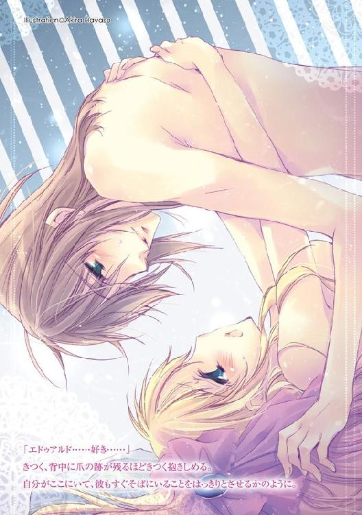
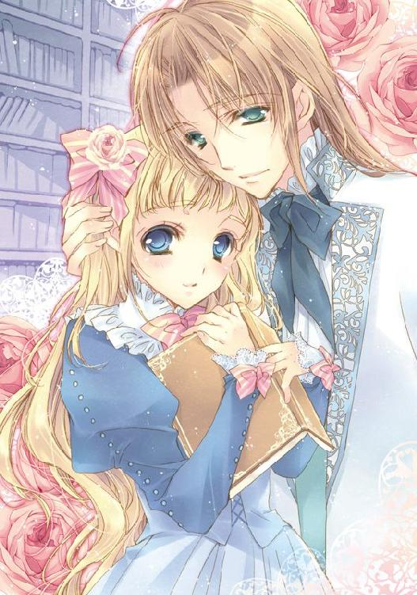
プロローグ 妖精の森と秘密の日記
馬車を三時間走らせて長い荒地を抜けると、肥沃な大地に変わる。
深い森と湖、鳥の囀り。オズフィールドと名づけられた広い領地は、人の手が多く入ることもなく、美しい自然が守られていた。
湖畔に風格のある屋敷が建っている。オズフィールド邸は城を低くしたような、横長の大きな石造りの建物であり、森に面した別棟の書庫へは蔦の蔓延る回廊で繋がっている。
禍々しい雰囲気はない。その蔦には春になると白い蕾がつき、夏を待たずに花開く。影を落とす森も、季節により葉の色を変えて、数々の実を落とす。涼しい風、様々な風を運んでくる。時折、小枝をリスが走っていく。
吹き晒しの回廊は、掃除をどれだけしても落ち葉が溜まるので、メイドたちにとっては苦手な場所であった。長い箒を石床に滑らせて、赤い髪を揺らす年下のメイドがぽつりと零した。
「フローラ様は、また書庫にお籠りなのかしら？」
泥を布巾で払っている、背の高い黒髪を結わえたメイドがため息混じりで答える。
「ええ、明日は舞踏会ですから、一日籠城なさるおつもりですって。セレスタン様があとで説得に向かうみたいね」
「夜を越してお昼になってしまえば、移動に半日とお支度で......ふふっ、間に合わなくてフローラ様の勝ちね」
この屋敷に住む令嬢フローラは社交界嫌いで有名であった。
隣の領地へ行くにも「遠くて疲れる」「自然の空気を一日吸わないと気分が悪くなる」「読みかけの本があるから」と理由は様々で、一緒に住んでいる兄セレスタンの心をいつも穏やかにしてくれない。
メイドたちはというと、慣れたもので、衣装も馬車も滞りなく、ついでにフローラの毛布と夜食の準備も完璧であった。
「こら、どっちの味方なの？ フローラ様が誰かに見初められないと、セレスタン様がお困りになるでしょう」
背の高いメイドの名はアルマ。彼女が含み笑いをする赤毛のメイド、ティルダへ窘める様に言い聞かせる。この屋敷での雇い主はセレスタンであった。
「でも、お嬢様はまだ好きな人より、森を散策したり本を読んだり、恋を想像しておまじないをすることがお好きなご様子みたい」
「想像では出会いに結びつかないわ。妄想だけ逞しいのも考えものです。恋人を作ってもおかしくないお年頃。ああ、そこの水差しとカンテラは角度を変えないようにして」
ティルダが回廊の隅に片付け忘れたように置かれた道具一式に手を伸ばすと、アルマがきつい口調で止めた。
「......また、フローラ様の新しいおまじない？」
「ええ、お読みになった新しい本に書いてあったらしいわ。妖精の散歩道を快適にするために、ですって。前みたいに生き血を集めてと真顔で言われるよりはずっと微笑ましいけれど、それぐらい殿方に熱心になってくださればよろしいのに......」
ふぅ──とアルマが再びのため息をつく。
「あたしは今の少し変わり者なお嬢様が好きだけど」
「それは私も。動物にも植物にも使用人にもわけ隔てないフローラ様に、ずっとお屋敷にいて欲しいと思っています、贅沢だってなさらないし。けれど、浮いた噂の一つや二つぐらいないと、ますます、変わり者に見られてしまいますわ。あっ────！」
言いかけて、アルマがはっと口を噤ぐ。
足早に回廊を歩いてくる主人の気配に彼女たちは揃って控え、道を開けた。
仕立てのよいスーツに絹のオリーブグリーンのクラヴァット。フローラの兄セレスタンだった。
金の長い前髪に、少し癖のある横髪を軽くポマードで固めて、毛先は耳の後ろへ流している。々しいながらも上流階級の優雅な威圧感が彼から漂っている。
丁寧にプレスされ、体にぴったりと馴染んでいるシャツの胸部分が微かな皺を作る。セレスタンが書庫の扉へ手を伸ばし、メイドへ声を掛けたのだ。
「ご苦労。フローラは書庫の中にいるのか？」
「は、はい。たぶん......」
「おい、フローラ。くっ、鍵が掛かっている。どうして父は書庫の鍵を彼女に渡したんだ。こうなることは目に見えていたのに」
扉はびくともしない。主人のその様子を見て、ティルダが書庫の裏手へと足を向けた。
「だんな様、お手伝いいたします。あたしが窓の方から回って、フローラ様へ開けるように手振りで合図を......」
オズフィールド公爵の名は、すでにセレスタンが継ぎ、彼らの両親は異国を飛び回る旅に出ていた。たまに帰ってきては大量の土産物と各国の書物を置いていく。
だから、今の屋敷にはフローラと面と向かって話せるのは兄セレスタンしかいない。
「手振りなど、本に夢中だったら気がつくものか」
そこで、アルマが素早く別の提案をした。
「私がお食事の差し入れのふりをして、扉の前へお呼びいたしましょうか？」
「前と同じ手に引っかかるものか、それにフローラに嘘をつきたくない」
「まぁ......お優しい。セレスタン様」
セレスタンはフローラに対しては砂糖菓子のように甘いことで有名だった。目の中に入れてもいいぐらい溺愛している。二人が住む屋敷で忠誠を誓うメイドたちは、そのことをよく知り、皆が協力的だ。
「では、お気づきになるまで交代で扉を叩きましょう」
メイドたちが声を揃えて扉の前へ立った。
「ああ、彼女が顔を出したら俺が説得をする。明日の舞踏会には俺が出られない代わりに行ってもらわないと困るんだ。出席の返事をしたあとで、五回続けて土壇場で風邪で欠席するわけにはいかない」
セレスタンは広い領地の見回りで手一杯だった。そして、年頃の妹に会いたいという、同じく結婚を意識した貴族たちの催促。彼だけですべてを抱え込むのは不可能であった。
それに────セレスタンは妹であるフローラのドレスが届くと、着た姿を真っ先に見たくなった。兄の特権である。その後に色々想像して悲しくなるのは目に見えているが。
「ドレスも新調したし、今度こそ着飾ったフローラが見たい。さぞかし美しいだろう」
「はいはい、だんな様。い、いえ......失礼しました。はい、だんな様」
ティルダがつい軽口を叩きかけて、慌てて言い直す。屋敷の空気は、兄と妹のこのやり取りのせいで緊張感がない。
届いたばかりのドレスの箱に思いを馳せたのか、セレスタンが顔を夢見がちに綻ばせていた。
扉を叩いたり、回廊をそわそわとしているうちにせっかく整えた髪も乱れつつある。しかし、そんなことは気にもかけないように今度は彼が頭を抱え始めた。
「フローラ、挨拶をしてきてくれるだけで、他意はないんだ。気に入らないことがあったら、会場で怒ってもいい。馬車の中のおやつに好きなだけチョコレートとタルトを用意させる。だから支度を始めてくれ」
チョコレートもタルトもフローラに通じないことはわかっているメイドたちが、どうしたものかと、共に策を練る。だが、新しく思いつくことはなく、とりあえず目に余るセレスタンの髪だけ直しにかかった。
いつもの微笑ましい光景。メイドのほとんどが古株かその親戚、または姉妹で、オズフィールドの屋敷は非常に居心地がよく、使用人の入れ替わりも少なかった。
「フローラ！ お願いだ、書庫の扉を開けてくれ。話を聞いてくれ──」
やがて、懐柔に痺れを切らしたのか切実な声でセレスタンが叫んだ。
「......いいところなのに、外が騒がしいわ」
読みかけの分厚い本から目を離し、フローラは首を傾げた。
体を動かした拍子に、緩く下ろしたままの波打つ髪がひとふさ頬に当たる。聡明さを思わせる青い瞳は兄よりやや濃く爛々としているが、同じ血を引いていることを思わせた。
入り口の鍵は掛かっていて、兄は簡単に入ってこられないだろう。父から引き継いだ真鍮の書庫の鍵。ここは、フローラの好奇心を満たす場所だった。同時に安息の場所でもある。
そこには圧倒されるほどの数の本が、二階にまで整然と並べられていた。
個人で所有するには多過ぎる書庫の本は、二世代前に数えたとされる五千冊以上なのは確かだ。
代々、この地に集められ、増え続ける様々な本が、息を潜めて開かれるのを待っている。
階段は螺旋状になっていて、磨かれてつやつやの樫の木でつくられた手摺が、上り降りに馴染む。もっとも、二階部分の背の低い本棚よりも、フローラは一階の背の高い......彼女の倍ぐらいはある高さの本棚が好きであった。
フローラがゆっくりと、手にした本を閉じ一階本棚へ戻す。
踏み台を使わなくても届くぎりぎりの高さ。背伸びをすると、質のよいドレスの裾が衣ずれの音を響かせる。胴を細く締めて、スカート部分をふっくらとさせた釣鐘の形に、幾重にもなっているたっぷりのレース。珊瑚色をベースに生成りとボルドーで上品にまとめられたドレスは、手首にまでかかる袖に扇状の小花の刺繍がされていた。
十八歳にしては、やや若くも見え、そわそわしながら、何かをじーっと待っていると、迷子に間違われる。
ただ、それはフローラが心ここにあらずの時であり、あまり楽しくない時間。主に園遊会、晩餐会、舞踏会など社交の場で起こっていた。
ひとたび、興味のある話題────本と自然と妖精とオズフィールドの話になると、フローラは嬉々として語り始める。ダンスに誘った男が、口説き文句をすべて彼女の解釈で受け取られ、すっかり自信をなくしてしまうことも多々あった。
それゆえの変わり者な扱い。だが、フローラは全く気にしていなかった。
「舞踏会には行きたくないわ......」
領地を出るのに、往復で急いでも二日は潰れてしまう。馬車の中から外を見るのは好きだけれど、〝妖精っぽい〟森や湖を窓の外に見つけた時、急ぎだからという理由で降りられないのは悲しい
それに、貴重な読書の時間は何より惜しかった。知りたいことが次のページへと続き、次の本へと続く。難しい歴史の本を唸りながら読んだり、子供が好きな冒険物語に思いを馳せてみたり、フローラは忙しかった。
中でも妖精に関する話が出てくる度、ページが擦り切れるぐらいに熱中する。
まだ、本物の妖精を見たことはないが、大好きなオズフィールドの素晴らしい自然の中には、きっと彼らは住んでいると思う。古来より住んでいたと、眠る前に父からいつも聞かされていたせいもある。
だから彼らと友好を深める、水差しとカンテラの新しいおまじないを試したところで、せめてその結果が出るまでは屋敷から離れたくない。
他にも本に書かれている方法を、フローラは気長に行なっていたが、妖精の気配すら感じたことがない。それでも続けるほどの根気と、気まぐれな妖精に対しての諦めない思いがあった。
「書物が少ないから妖精の好物がわからないのよね。でも、一つずつ噂のあるものを試すのは大好きよ。今に姿を見せてもらって、友達になるんだから！」
フローラは燃えていた。握り締めた拳と夢を語る瞳で妖精の妄想を始めたらきりがない。
「そしていつか、月夜の宴に混じって踊るの」
ひょいとフローラは書庫の机の上に飛び乗り、絶妙なバランスで立った。ダンスを始めるボーズのような姿勢。けれど、それはペアや社交用ではない、フローラの空想の産物である我流の妖精ダンスだった。
目を閉じると、夢見た光景がありありと瞳の奥に浮かび、空想の羽根が広がる。
まずはカンテラを見つけたノッカーが、ドワーフとブラウニーを呼びに行くわ。
そしたら、お兄様の鉱石コレクションをばら撒いて、お宝の山があると思わせるの。
噂を聞きつけてウィスプがキラキラと輝いて空へ合図を送ったら──。
シルフィードが優雅にオズフィールドの森の旋回を始める。
やがて、いつからいたのか、もったいぶった様子で姿を見せたフェアリーたちがはしゃぎ出すの。妖精の悪戯ぐらいは大目に見るわ、姿を現してくれるんだもの。
「フローラ！ お願いだ。書庫を開けてくれ、話がしたい。まさか......中で倒れているのか？」
フローラの空想は切実な兄の声で打ち切られ、現実へと戻された。
「はぁ......どうしたらいいの？」
扉の外から聞こえてくる兄の声、フローラはぽつりと呟き。対策を思案した。
兄へ具合が悪いと告げれば、本気で心配させてしまうので、嘘はつけない。
仕事を放り出して、呼べるだけの医者を呼んでしまったり、祈りを奉げる牧師を連れてきたり、〝何にでも効く〟とあっさり騙されて、本当は少しだけ良質な小麦の粉を高価な薬として買ってきてしまう。
心配されているのはありがたいけれど、多くの人を巻き込んでしまう嘘はよくない。
かといって、このまま沈黙を守ったままでは、兄の心配性は悪い想像へと羽を広げるだけだろう。
しかも、今いるのは大切な場所。兄があまりにも力いっぱい扉を叩くと壊れてしまうかもしれない。ましてや、鍵穴に針金でも差し込まれて扉を壊されたら一大事である。
本は雨風に弱い。もし、扉が壊れたままオズフィールドの強い夜風に飛ばされてしまっては大変だ。
鍵を預かり、書庫を愛する一人としてフローラは本を守らなくてはいけない。
けれど、舞踏会へは行きたくない。仮病も無理。兄の説得も平行線になる予感がする。
「お兄様、少し待って！ 読みかけの本を本棚に戻すから」
とっくに本は戻しているのに、フローラは口から出任せを言って時間を稼いだ。
ドア越しに、身を案じるセレスタンの声がする。
「ああ、フローラ。わかったよ、少し待とう。高いところの本なら、無理をしてはいけない、俺が戻してやろう。だから──」
「いいえ、大丈夫。もう──届いたわ」
「おや？ 何も物音がしないが......どうかしたのか!?」
「............し、静かに戻しただけよ。丁寧に扱わないといけないから」
フローラは兄の鋭さに軽く頭を振った。たぶん、扉に張り付いて物音一つすら、聞きもらさないように案じているのだろう。
おそらく、せっかく整えられた兄の髪は、乱れて荒野のようになっているに違いない。
何か時間稼ぎの言い訳になるものは────？
フローラは物音が立たないように、書庫の中に目をやった。
階段の手摺と同じ、樫の素材で造られた長机には、所狭しと積み上げられた本。そして、中央の椅子の前にわずかに文章を綴るスペースがある。近くにはいくつもの羽根ペンが、木籠の中、所狭しとあらゆる方向に差されていた。
本を読むだけのフローラには必要ない机。椅子でも窓辺でもベッドの中でも読める。父でさえもこの机に座っていたところを見たことがなかった。
だとしたら、なぜこの机はあるのだろう。
飾りとして？ 建築家の趣味？ それとも遠い昔、誰かが────。
「フローラ......いい加減開けておくれ！ お前の顔が見たいだけなんだ」
過去に想いを馳せようとした時、悲鳴のような兄の声がフローラを現実に呼び戻した。
兄は泣き落としに掛かっている。ここまで来たら、素直に扉を開けるしかない。
「待って、今開けるから」
諦めて扉に近づくと、フローラは鍵を外した。カチっと金属音がして、書庫の中で夢に満ちていた自分と現実を隔てていたものがなくなる。
──あっ！ そうだ！
「鍵は開けたけど、扉を開けるのは、待って！」
兄が待っていたとばかりに素早くノブに触れた瞬間、フローラは叫んだ。土壇場で画期的な時間稼ぎを思いついたからだ。
お兄様が入ってこられないようにすればいい。
「なぜだ？ どうして、兄が妹の顔を見るのに扉を開けてはならないんだ？」
焦ったような声で、セレスタンが尋ねる。彼女はなるべく小さくて、でもきちんと通る声で答えた。
「わたし、今何も着ていないから......裸、なの」
頑張ってフローラは寒そうで、凍えたような震えた声を出した。
「は、裸!? どうして服を着ていないんだ!?」
さらに動揺した兄の声が外から聞こえてくる。
我ながら下手な演技だったけれど、すっかり兄は騙されているようだ。恥じらうようにフローラは続けた。
「だって、本を読む時はいつもこの格好だから。今日のように温かくて、日差しの強いお昼は気持ちいいの」
もちろん嘘である。さすがのフローラもたとえ鍵が掛かっているとはいえ、裸で本を読む習慣はない。しかし、いつも書庫へ閉じこもっている故に兄は中の様子を知らなかった。
「わ、わかった。着替えるまで少し待つから早くドレスを着てくれ」
効果は抜群だ。鍵を開けたのも兄を安心させたようだ、声が扉から少し遠ざかっていくのがわかる。
「ふぅ、あとはここから逃げ出すだけ」
だいぶ時間を稼げたことを安心しつつも、脱出口を探す──といっても、この書庫に秘密の扉や隠し階段といったものはない、当然探し済みで造りはすべて把握していた。とすると、外へ出るには兄が待ち構えている扉と窓ぐらいしかない。
一階の窓はもうメイドたちに見つかってしまっているから、フローラを自由にしてくれるのは二階の本棚よりも高い位置にある窓だけだ。
気をつけながら、二階へ上がり、そっと本棚に足を掛ける。
元々、最後の脱出経路にと考えていたので、自分が乗ってもぐらつかないように重くて難しそうな本をあらかじめ足場になる棚には入れてある。体重を掛けても傾くことがないのを確認すると、フローラはその上に登っていった。
「結構高いわね......」
本棚に上がると、フローラはこれまた何かあった時のためにと、用意しておいたロープに手を伸ばした。窓は手が届く高さではない、彼女は準備だけはいい。
前に冒険活劇の本で見た船を繋ぐ結び方。物語の文章からだけではよくわからなかったけれど、たぶんこうだろうという形に、輪の先は完成している。
あとは、上の窓枠の飾り部分へ投げて引っかけるだけ......。
フローラは目を閉じ、海賊にでもなった気分で、隣の船へ乗り移るシーンを想像して、ロープを投げた。ヒュッと心地良い音がして、窓枠付近に輪が引っかかる。
窓は上に開くはずだ。あとは体をロープに委ねて、登れば──。
最初に登る距離を稼ぐため、彼女はロープへ飛び移るように掴まった。
「んっ......と、け、結構......腕が辛い......んっ......」
自然の中を散策することがあるとはいえ、フローラは屈強な男、たとえば船乗りや海賊たちのように、体力自慢ではない。
辛うじて上に進んでいる気がするものの、ぶら下がって遊んでいるだけにも見える。
「や、やだ......揺れる、腕が痺れてきた......」
脱ぎ捨てた靴一足分宙に登り浮いたところで、フローラは無理だと悟った。しかし、元に戻るには、足の裏が痺れることぐらいは覚悟しなければならないだろう。大きな音を立ててしまうことも。
彼女の限界......の、前に......ロープは結び方が違うと勝手に解けた。
「きゃっ!?」
ビュッと音がして、解けた輪の部分が額に当たったと思ったら、フローラは本棚にお尻から激突していた。そして、勢い余って本棚からも落ちる。ぐらつき倒れる本棚の衝撃が隣の本棚を誘い、あちこちで大きな書棚が崩れて埃が舞う。
ドタンガタンと大惨事の広がる音が響き渡る。脱出は失敗だった。
「フローラ！ どうした!? 大丈夫か？ 今、ものすごい音がしたぞ！」
「へ、平気よ、お兄様。ドレスの裾を踏んでしまって......直ったわ、じきに行くから」
「わ、わかった」
フローラは幸いなことに怪我はなかった。多くの本が偶然、その身を開いて受け止め、守ってくれたような気がする。嬉しいけれど、本が傷んでしまうかもしれない、自分のせいとはいえ、少し悲しくなる。
せめて戻せる書棚には、床に散らばった本を戻さないと────。
そう思った時、フローラは不思議なことに手を止めた。
「あれ......？ この本は？」
落ちる時、咄嗟に掴んでしまった本。絵本よりは分厚く、物語にしては薄い。
胡桃色の表紙には、タイトルが何も書かれていなかった。
フローラの胸がドクンと高鳴る。書棚の本はすべて把握していた。でもこれは、自分がまだ読んだことも見たこともない本だ。
一体どこにあったのだろう。
いつの間にか、握り締めていたことにも運命を感じる。
「何の本かしら......？」
堅く閉じられたページは、誰も開いたことがない真新しい感じがした。
ドキドキする。興味が、早く早くと心を急かす。それぐらいに知らない本は好きだ。
はやる胸の鼓動を抑え、兄が扉の向こうで待っているのも忘れて、フローラは窓辺にあるお気に入りの椅子へと本を抱えて座った。
ぱらりと最初のページを開く。
〝勇気ある選ばれたあなたの名前を書いて〟
吸い込まれるように、長テーブルから羽根ペンを取り、フローラは名前を書いていた。
──フローラ・オズフィールド。
躊躇はない、だって、本が自分を迎えてくれている気がしたから。
サラサラと最後の名前の綴りを書いた時、インクが一瞬で乾き風が吹く。締め切っていたはずのカーテンから白い光が入ってくる。フローラは目を開けていられなくなり、反射的に閉じた。
「な......にっ！ えっ......あれ？」
眩しいと思ったのは錯覚？ 目を閉じて開けると、書庫はすっかりと元の佇まいに戻っていた。薄暗い、重厚な本の香り。
本のページがぱらりとめくれる。さっきの風の悪戯だろうか、手を添えているから、知らずにめくってしまったのかもしれない。
乾いた音が響き、美しい書体が目に飛び込んでくる。
〝三日月の舞踏会で、生涯たった一人の運命の出会い〟
〝息が止まりそうな瞬間、一目で恋に落ちるから〟
「三日月......？ 明日だわ」
偶然？ それとも......。
フローラの頭の中を舞踏会の予定が掠める、明日の夜の月の満ち欠けも。二つの偶然が重なり、興味が湧く。恋に落ちるとは......？
文章はまだ隣のページへと続いていた。一ページごとに中央に詩のように綴ってある。読みごたえはなさそうだが、最初の方だから短いのかもしれない。
〝甘くて深いキスを重ねるでしょう、デザートも蕩ける口付け〟
〝キスキスキス......〟
〝王子と眩しいダンス、まるで二人だけの夜の宴〟
「ええっ!? いきなりキス？ 何回するのよ!? ......恋物語にしては早過ぎ！ それに......これ、日記よね......どうして予言みたいに断言してあるの？ つ、続きは!?」
フローラはどの本も大好きであったが、深いキスは恋人同士の最後に起こるロマンスであり、最初に開いたページに書かれていることなど、今までなかった。
飛んでもなく展開の早い物語か、これから受難があるのか、逆にフローラは続きが楽しみになり次のページへ手を掛けた。
「あれ......？ 開かない」
残りのページはすべて蝋で固められたように離れない。無理に剥がそうとすれば、本が破れてしまいそうであった。
フローラが普通の令嬢であれば、本をどうにかしようと思案したり、投げ出したりするところであったが、彼女は本の理解者だ。不思議なことは優先すべきことである。
ページを無理にこじあけることはないわ────。
「開かないのは、きっと三日月の夜が過ぎてからのお楽しみなのよ」
フローラは本に書かれている偶然への期待で胸がいっぱいだった。
もしかしたら、カンテラをすでにノッカーが見つけていて、フェアリーが悪戯に導いたのかもしれない。
これは絶対に従わないと！ 妖精と仲良くなれる一歩！
フローラは本好きの自分のために妖精がコンタクトを取ってきたという説を何より信じた。悪戯なら乗る気はばっちりある。悪戯だから、多少痛い目は見たとしても。
──舞踏会に行けば、何かすごいことが起こるかもしれない。
この本の続きもきっと......。
読書と妖精を愛するフローラは自然とそう思っていた。舞踏会に何かあると。
そうと決まれば早い。フローラは日記を背中に隠して書庫へ出ると、待たせ過ぎて格好悪い髪型になってしまった兄のセレスタンへ告げた。
「お待たせ、お兄様。わたし、舞踏会へ行くわ」
第一章 予言と舞踏会の求婚
本に背中を押されたことは内緒であったが、フローラの舞踏会行きが決定した。
招待を受けたオグバーン伯爵の屋敷は、言葉の上では隣人であったが、支度をして馬車で森を抜けて荒野を渡り──辿りつくには、半日もかかる。
フローラは遅れないように、翌日の早朝、馬車へと乗り込んだ。
何着もの替えのドレスや帽子を持たせようとするセレスタンの言葉に逆らい、彼女は瑠璃色にレモン色のレースがつけられたドレスしか持たずに、出掛けることにした。御者には苦労をかけてしまうが、舞踏会が終わる深夜に馬車で帰るつもりだからだ。
それでも一番お気に入りのドレスを着てきたのは、ほのかな想いがあったからかもしれない。自分の名前を書き込んだ本に書かれた甘いキス。それはまだ恋をしたことのない彼女にはピンと来ないし、実際に起こるのかは半信半疑だけれど、もしかすると......という気持ちもある。
──あるわけないけれど、万一の備えよ、万一の......。
落ち着かない心に言い聞かせるように念じる。そして、唇にそっと指を伸ばした。
物語の中では、何度となくキスをする恋人たちに出会ったことが当然ある。熱い口付けを交わすヒロインの気持ちに想いを馳せたこともあった。しかし、フローラ自身が甘い恋物語の主人公になったことはない。彼女の唇に触れたことがあるのは、親しい者を除けば、小さい頃に飼っていた犬のセルファードぐらいだ。
自分では意識していなかったけれど、見送る兄セレスタンがフローラと別れるのをためらうほどに今日の彼女は珍しく着飾っていた。
ドレスの広くカットされた胸元は、ギャザーを寄せ、真珠のアーチがついたフリルたっぷりのリボンを形取ったチョーカーが首へ結ばれる。膨らんだスカートの表面は、虹色に細工された貝がラインに沿って縫い付けられ、その周りにひっそりと水晶がちりばめられていた。
「本当に書かれていたことが起きたら......どうしよう......ううん、ありえない」
馬車に乗ってからしばらくは、呟いて、すぐに自分の言葉を否定する──その繰り返しだった。しかし、伯爵家まで半分ほど来たところでフローラは後悔し始めていた。
長く馬車に揺られていると、本を手にした時の感動が徐々に抜け落ちていく。
書かれていたことが起こるはずがない。社交界にもドレスにも興味のない、公爵家の令嬢というだけの自分が王子とダンスを踊る機会などあるわけがなかった。
あの不思議な本はフローラを舞踏会へと連れ出すための、兄の新しい手口に違いない。帰ったら問い詰めようと彼女は心に決めた。
結局、フローラは六度目の逃亡をするわけにもいかず──実際のところは半分を過ぎた時から引き返したのでは、一日中空腹でいなければならないという苦痛に負けて──舞踏会の舞台となるホールの入り口で呼ばれる順番を待っていた。
「はぁ、帰りたい......」
「何かおっしゃいましたか？ レディ・オズフィールド」
「......え？ あ、い、いえ、何でもないです......」
自分の不満が勝手に口から飛び出していたことに、パートナーの言葉で気づいた。
隣には、兄が用意してくれた伯爵家の次男が立っていたけれど、フローラの心を惹くことは全くなかった。上辺だけの褒め言葉、似合わないほどに着飾る姿、物語の中の眩しい登場人物たちには当然のように勝てず、興味が湧かない──というよりさらに悪く、なるべく彼と距離を取る。身体的にも、心的にも。
──わたし、貴族の男性が苦手なの、すっかり忘れてた......。
フローラは貴族の男と話すのが苦手だった。いや、貴族に限ったわけではない。使用人と兄以外の人とはしゃべるのが得意ではなかった。
だから、普通なら日記に釣られて来た令嬢が考えるような、もしかしたら、この隣にいる人は令息を装った王子かも──といった幻想を抱くことは全くなかった。
「オズフィールド公爵令嬢 フローラ嬢」
ほどなくして、パートナーと自分の名前が呼ばれ、ホールへと入っていく。
彼女は、母に叩き込まれた社交界での礼儀を反射的に思い出し、小さく膝を折って少し頭を下げると、パートナーのリードに従ってぎこちなく壁際へと歩いた。
壁には多くの絵画が飾られ、多数の美しい燭台がそれを照らしている。あまり大きな舞踏会ではないのでそれほど広くないが、その分、目が痛いほどに煌びやかな装飾で塗り固められていた。
落ちてきたら事件になりそうな大きなシャンデリアが沢山。外はもう真っ暗だというのに、昼のようにホール内は明るい。
フローラはさっそくパートナーの腕から手を離すと、使用人たちが運ぶグラスと軽食に手を伸ばした。皿ごともらう。
舞踏会での唯一の楽しみ、とまでは言えないけれど、暇つぶしは食事と庭の鑑賞だ。
大きな貴族の屋敷の庭は迷路のように広いものが多い。もしかしたら、妖精が迷い込んで助けを求めているかもしれない。だから、フローラは普通の人とは違ったところから庭園を眺めるのが好きだった。
今日も結局は日記のことなど忘れて、適当にお腹を満たしたあとは、こっそりとホールを抜け出し、適当な時間まで庭を探索するつもりだった。
いまだ呼ばれ続ける公爵令息・令嬢の名前を聞き流しながら、豪勢な食事に舌鼓を打っていると、フローラの耳に入り口付近に集まっていた人々からの「おお！」という歓声が聞こえる。主催者であるオグバーン伯爵が誇らしく大きなお腹を突き出していた。
「本日のゲスト──────キャスブルク公爵エドゥアルド様！」
どうやら、この舞踏会にめったには顔を見せない公爵が登場するらしい。確か自分の家よりも古くて名門の公爵家だったと記憶しているけれど、彼女の中では無駄な知識でしかないので、それ以上の情報は頭から浮かんでこない。
大きな拍手がホールに鳴り響き、ゆっくりと、まばらに収束していく。しかし、肝心の足音は全く聞こえて来なかった。拍手にかき消されたのではない。それを証明するかのように静まり返った会場が次第にざわめき立つ。
「何かの手違い......かしら？」
「急に具合悪くなられた、とか？」
「いいえ、きっとパートナーの方が気に入らなかったのよ。数年社交界に姿を見せなかった方なのでしょう？ 我侭に違いないわ」
「そんなことないわよ。とても繊細な方だって聞いたことがあるわ」
近くにいた令嬢が三人、あれこれと一向に姿を見せない公爵の理由を推理し始める。何事かと皆が噂する中、フローラは一人気づかれない様に料理が乗った皿を手にして、出口へとゆっくり近づいていった。
──チャンス！
この混乱に紛れれば、思ったよりも早く苦手な舞踏会の会場から逃げ出せるかもしれない。入り口に皆が注目している今、怪しいフローラの動きに注意を払うものはなかった。
──もう少し......もう少し......今よ！
使用人たちが何かしらこの屋敷の執事から指示を受け、散っていくのを見逃さず、フローラは混乱に乗じて、ホールを抜け出した。
誰にも気づかれた様子はない。フローラは廊下を抜け、庭へと出ていた。
現れなかった公爵はよっぽど偉い人なのか、彼女に注意を払う暇がないほど使用人たちは彼を探してあたふたしており、庭園まで行くのに捕まることはなかった。
やっと落ち着いたフローラは、ゆっくりと伯爵邸の草花を眺めながら歩いていく。
妖精が好きそうな場所──なるべく人が通らないところがいいし、人工的な明かりがない方がいい。
段々と庭の奥深くへと入っていく。そうして、いつしか背の高い草木に覆われた、ぽっかりと空いたような小さな開けた場所に辿りついた。
「ここ、いいわ......すごく綺麗」
ばっちりの場所を見つけ、一人呟く。
そこには人工の小川が流れ、石造りの可愛らしい小さな橋が架かっている。橋は大きな鳥籠の前後に入り口をくり抜いたような形になっており、中にはテーブルと二つの椅子が置いてあった。
「あっ！」
思わず手にしたグラスとお皿を落としそうになる。無理もない、フローラは見つけた。彼女が探していたものを......。
「妖精......」
彼女の瞳にはそこに立ち、揺れている背の高い人影が、月明かりに照らされた妖精に見えた。
純白に銀糸で花を咲かせた上衣に、紋章が押されたボタンは編み紐で彩られていた。柔らかな毛皮をつけた外套は重厚な濃藍で、宵闇になびいている。
輝くような美しいブラウンの長い髪に、エメラルドのような優しいグリーンの瞳。
「とても綺麗......」
思わずため息が出るほど美しい姿。まるで絵本の中の綺麗な挿絵のようで、うっとりとしてしまう。まるで想像していたままの、妖精王オベロン......！
ずっと会いたかった妖精──その想いは心臓が高鳴るほど彼女を興奮させた。
惹きつけられるように妖精へと近づく。気づかれないよう、声を出さずに、足音を立てないように、慎重にフローラは距離を詰めた。
まるで猟犬になってしまったかのようだ。飛びつきたくなる気持ちを抑えつつ、一歩一歩近づいていく。
あともう少し、もう少しで手を伸ばせば触れられる場所まで行ける。
背中に羽は見えない。人間には見えないのだろうか？ それとも、飛ばない時はどこかへしまっているのだろうか。
疑問が次々と浮かんでくる。絶対にこのチャンスを逃すものか、なんとしてもフローラは妖精と友達になるつもりだった。いや、できれば屋敷に連れて帰りたい。
しかし、橋までもう一歩というところで妖精は奇妙な行動を始めた。鼻がひくひくと動き始めたのだ。美しく、滑らかな曲線を描く妖精の鼻が可愛らしく動く。そして、ぐぅという低い音が聞こえた。
──妖精のお腹の音！
珍しいものを聞いたと歓喜に震えた時、自分が皿いっぱいの料理を持っていることに気づき、思わずフローラは声を上げた。
「あっ！」
「誰です？」
すぐさま妖精が振り向くと同時に警戒した声を発した。
──言葉がわかる!?
見つかったという焦燥よりも、言葉が通じるという嬉しさが込み上げてくる。これで友達になれる可能性がゼロではなくなったわけだ。
「ごめんなさい、悪さをしようとしたわけじゃないの。ただ、あなたと、妖精さんと友達になりたくて」
未知との遭遇は、素直に友好関係を示すに限る。
「ようせい......って何です？」
しかし、思わぬところを聞き返されてしまった。
もしかすると、妖精は自分たちのことを『妖精』とは言わないのかもしれない。
『妖精』なんて人間がつけた言葉なのだから、もっと砂糖菓子のように甘く、美しい名前があるに違いない。
──ああ、知りたいことが溢れてきて、色々なことを忘れてしまいそう。
「あ、あなたのこと、なんて呼んだらいいのかしら？ わたしはフローラ」
「私はエドゥアルドです、ミス・フローラ」
優雅に膝を折って挨拶を返してくれた。
妖精は人間の礼儀にも通じているらしい。
あれ？ そういえば、つい最近、聞いたことのある名前をしている。
エドゥアルド......エドゥアルド......どこかで聞いた響き────。
「うーん......あっ！」
それは、ダンスホールを抜け出す時、勝手に利用させてもらった、いなくなり、使用人たちが今頃必死に探しているはずのゲストの名前だった。
「あなた人間なの!?」
すぐにフローラは後ずさりしそうになったけれど、動かなかった。いや、彼から目が離せなくて動けなかったというのに近い。
「ええ、人間ですが......貴方から見て、私はどこかおかしいですか？」
逆に聞かれてしまい、フローラは首をぶんぶんと大きく横に振った。
ある意味、自分が男の人から目を離せなくなっているという状況がおかしいのだけれど、それは彼の問いとは違う。
「え、えっと......その......」
妖精と友達になるためにあれこれ考えていた頭が一瞬で真っ白になる。何を言ったらいいのかわからず、言葉が出てこない。
──しかし、人間にしておくのはもったいない姿......。
無言で見つめ合い、惹かれるように無意識に近づいていた時、再び先ほど聞いたぐぅという低い音が彼から聞こえてきた。
「ところで......その料理を私に頂けませんか？ 実はお腹が減っていて」
フローラは橋の上に置かれた小さな丸い椅子に座り、向かいの彼の食べっぷりをじっと観察していた。
その整った顔立ちに反して、次から次へと料理が口へと運ばれ、飲み物をごくごくと飲む。優雅とまではいかないものの、決して汚い食べ方ではなく、休むことなく手と口が動く。つまりは、綺麗に、沢山食べているのだ。
「実はお腹が減っていて、助かりました」
時折、こっちを見てフローラににっこりと微笑み返してくるのだから、油断ならない。思わず目が合い、その美しい新緑のような瞳に胸が高鳴りそうなるのを必死に抑えた。
本当に男の人......よね？
いくら第一印象で妖精と間違えてしまったからといって、自分が人間の、しかも男の人に興味を持つなんて、自分でさえも考えられない。
読書と自然と妖精をこよなく愛するので、精一杯だったはずだ。
たとえば、この秘密の隠れ家のような場所。この辺りを見ていると、段々と気持ちが高ぶってくる。妖精がいかにも出そうだ。月もよく出ているし。
「貴方も食べないのですか？」
「え、ええ──頂く、わ」
動揺が言葉に出て、最後の響きが遅れてしまった。
反射的に銀製のテーブルに置かれた皿へと手を伸ばす。クロワッサンを手に取り、口へと運ぶ。幾層にも重ねられ、ふわふわでサクサクに焼かれた生地は噛みしめるとバターの美味しい風味が広がった。
「美味しいですね、外で食べる食事は」
ピクニック気分になったのだろうか。エドゥアルドと名乗った青年は嬉しそうに小さく口を開いた。
確かに夜とはいえ、フローラも外での食事は好きだった。自然を感じるし、もしかしたら料理の匂いにつられて、何かがやってくるかもしれない。彼の様に......。
「............人間なのが残念」
不満で口を尖らせ、フローラは改めて彼の顔を見た。
どの絵本の中の挿絵の妖精よりも、出会ったことのあるどの男の人よりも綺麗だと思う。今まで社交界で大した噂にならなかったのが不思議だ。
毎回のように逃げ出していた自分には知らないだけで、噂になっていたのかもしれないことは否定できないけれど。
ああ、そういえば、彼も逃げ出してきたのだ。屋敷の中では今頃、使用人たちが彼を探して、それこそ数十はある部屋のすべてのクローゼットの中や、夫人たちの大き過ぎるスカートの中を、隅々まで探しているに違いない。
「えっと......エドゥアルド様？」
「あっ！」
話し掛けた時、彼の食事のリズムを崩してしまったのか、エドゥアルドが、たっぷりとソースのついた子羊のローストを膝の上に落とした。
自分のせいだと思い、反射的に彼の元へと駆け寄る。
「大丈夫ですか？ あっ、早くしないと服が汚れてしまう」
料理と一緒に持ってきたナプキンに水をつけると、彼の汚れてしまった服を拭く。昔、母から聞いた染みが残らないためにする応急処置だ。食事中も本を読んでよく零すフローラがする慣れた処置だった。
「ありがとうございます。ミス・フローラ」
「あ............」
またにっこりと、しかも至近距離で微笑みかけられる。
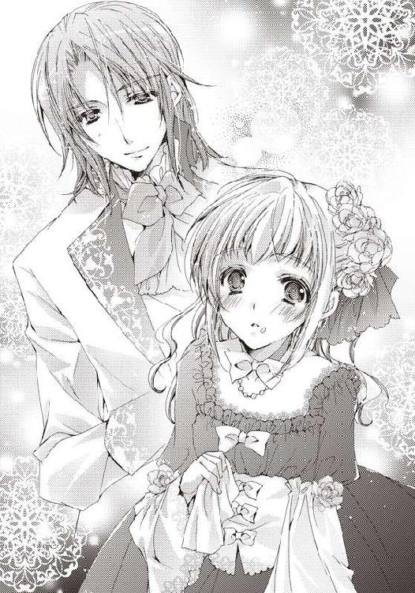
──ち、近い......。
今更、止めるわけにもいかず、魔法のような笑顔が心に入ってきそうになるのを必死に追いやりながら、フラーラは彼の服を拭き終えた。
「これであとは普通に洗濯すれば跡は残らないと思います」
「今度は貴方の口についていますよ、パン屑が──」
「えっ！ ひゃっ────」
思わず、しゃっくりのような素っ頓狂な声を上げて、フローラは固まってしまった。
彼の顔が近づいて来ると、そのまま自分の唇についていたパン屑を舐め取ったのだ。
「美味しいのですね、貴方の唇は......ん──」
感想を言うと、こともあろうに彼は再びフローラの唇に触れた。
そこまで来て、やっと彼女の思考だけが動き始める。身体はまだ固まったままだ。
これってキス......よね？ 男の人とキス？ わたしが!? あれ？ これってどこかで......。
〝キスキスキス......〟
どこかで読んだ一文、考える最中も、彼の唇が二度、三度、四度とフローラに触れた。
そこで魔法のようにやっと身体の自由も解ける。
「な、な、な、何するのよ！」
カーッと頭の中の血が上り、冷静な部分が押しやられた。
唇にパン屑をつけて男性に近づいた自分も自分だが、それを舐め取られてしまうなんて誰が考えるだろう。
この人は妖精のように悪戯好きに違いない！ いや、やっぱり妖精だ。妖精なら大歓迎だけれど、この人は男の人。男の人にキスされた!?
頭がめちゃくちゃに混乱しながらも、フローラは彼から数歩距離を取ると、本能的にどんな手を使われても奪われないよう唇を手で隠した。
「驚かせてしまいましたか？ 申し訳ありません。美味しそうだったのでつい......」
エドゥアルドがすぐに謝りの言葉を告げた。その貌は本当に申し訳なさそうで裏表はないように見える。
しかし、そんな下手な口説き文句のような言葉だけで、最初のキスをいきなり奪われたのでは、いくらフローラといえども納得いかない。
しかも一度ならず、四回も乙女の唇を奪ったのだ。
混乱していたフローラの頭が怒りによって収束していく。
「ついでいいわけがないでしょう！ 謝って済むなら警察はいらないのよ！」
「でしたら......貴方は私が見た女性の中で一番魅力的でしたので、というのも理由になりませんよね？」
「わ、わたしに聞いてどうするのよ！」
──魅力的!? わ、わたしが？
男の人にそんなことを言われたことがなかったので、フローラの頬ははっきりと自覚できるほどに熱くなっていた。
確かに今日はわりときちんと着飾っている方だけれど、自分は舞踏会のホールに足を踏み入れただけで、皆がため息をつくような美貌や笑顔、身体の持ち主ではないことを自覚している。
高い靴を履いてもすらっと伸びない脚と、苦しいほどにコルセットできつく締めても主張しない胸は、兄や父母が可愛いと言ってくれても、魅力的だと男性に言われるはずがないのだから仕方ない。
「では、どうしたらお許し頂けますか？ 私は先ほどと同じように貴方と一緒に食事をしたいのです」
「う............」
控え目に、でもしっかりとエドゥアルドが自分の意志を伝え、許しを請う。
彼に見つめられると、どうしてかフローラはこれ以上ないほどに胸が高鳴り、問い詰める言葉が上手く出てこない。
胸躍るような物語を読んでいる時にも感じたことのない、心の震えに、どうしていいのかわからなかった。
「も、もういいわ。許します......以後、気をつけて」
「はい、誓って」
焦った結果、女王様のように許しを与えたフローラに、彼は少し頭を下げて従った。
これでは仮面舞踏会での悪ふざけだ。今日は普通の夜会だというのに。
恥ずかしさを隠すように、フローラはテーブルのフォークを手に取ると、皿の上に置かれたローストビーフを口に運ぶ。
伯爵家の面子をかけて作られた肉料理は柔らかく、美味しさが舌で蕩けていく。セレスタンはあまり屋敷におらず、料理にもこだわらない方なのでこれほど上質の肉を食べるには首都へ出るか、こうしてパーティで食べるしかない。
「あっ......ん!?」
「どうしました？ 喉に詰まりましたか？」
「ち、違う......大丈夫です！」
ローストビーフを隅々まで胃の中で味わってからやっと、このフォークはエドゥアルドも使っていたことに気づいた。しかも、フローラが使い、エドゥアルドが使い、今またフローラが使っている。
──間接的にだけれど......これって......またエドゥアルドとキスを!?
このことは日記に書かれていなかったことだ。頬ではなく、顔全体が熱くなっていく。
油断してしまった自分に自己嫌悪して、これ以上、フォークを使われないようにフローラは片っ端から皿の上の料理を平らげた。
「ふぅ、ご馳走様......あ、ごめんなさい。全部食べちゃって」
一緒に食べたいと言われたことを思い出し、フローラはさらに顔を赤くした。男の人の前でバクバクとご飯を食べるなど恥ずかしい行為だ。
いつもならば、全く気にしないことを、自分でも不思議だけれど、エドゥアルドの前では気にし始めていた。
ダンスホールでは、入った途端にパートナーをほったらかし、食事を口に運んでいたというのに。
「いいえ、私もよく食べるので、よく食べている女性は好きです」
微笑んだ彼の顔に一瞬胸が鳴る。
本当にエドゥアルドは、妖精のような美しい容姿とほんわかとした雰囲気だ。でも、違和感はなく、不思議というか、彼の行動や言動すべてがなぜか自然に思える。柔らかいという言葉がよく似合う。
──妖精だったら、水の妖精かしら？ 触った感じも柔らかったし。
「今度は、貴方ではなく、私の口に何かついていますか？」
「あっ、いえ！ と、ところで......妖精はお好きですか？」
じっと彼の顔を見つめていたことを指摘され、さらにはキスされたことを思い出させるような言葉に慌て、フローラは適当な話題を彼に振った。
普通なら話を振られた方は戸惑う質問だけれど、その手の本ばかり好きなフローラにはこの話題しか、ぱっと思いつかないのだから仕方ない。
「会った時もそんなことを言っていましたね。そうですね......わりと好きですよ、私の領地にもその手の伝承がいくつかありましたし」
「本当ですか!?」
意外にも真面目な返答だったので──いつもならば、適当に濁されるか、無視されるので──フローラは目を輝かせた。男の人だと言うことも忘れて、彼の方へと身を乗り出す。
「ええ、そんなに興味がおありでしたら、今日のお詫びに今度ご案内しますよ」
「ぜひ、ぜひ、お願いします！ 妖精のためなら、深い森の中でも薄暗い洞窟の中でも、妖しい古い館でも飛び込めますから、わたし！」
「ふふ、森と洞窟はいいですが、古い館に出てくるのは幽霊か悪霊ですよ」
冷静に諭されるも、フローラの興奮は止まらない。
何度か、本に書かれた妖精の出るという場所を訪れようとしたことがあったけれど、持ち主に気味悪がられて、もしくは兄に止められて、彼女のささやかな願いは叶ったことがない。それを叶えてくれる人が目の前に現れたのだ。興奮を抑えられるわけがない。
そして、同時に彼に対する興味が、先ほどとは違う方向にふつふつと湧いてくる。だけれども、今ここで妖精の話を色々とぶつけると、今までの人のように逃げられてしまうかもしれない。フローラは、まずは当たり障りのない話題を探した。
「ところで、あなたはどうしてここに？」
「ここ、ですか？ 実はその......逃げてきたのです」
エドゥアルドが今回の舞踏会の一番ゲストで、入場時に消えてしまったことをフローラは再び思い出した。今も使用人たちが血眼で探しているだろう。
フローラはまじまじとエドゥアルドを見た。見た目だけなら、メインゲストと言われても遜色ない見た目をしている。けれど、どこの領地の人なのか、もとより疎いフローラにわかるわけがない。あまり社交慣れしていないのは、なんとなくわかるのだけれど......。
やや言葉を選びながら、フローラは彼へ向き直った。
「それは知ってます、ホールは大騒ぎでしたから............でも、どうして逃げ出したんです？」
自分も舞踏会を逃げ出してきたことはひとまず置いておくことにする。
「大騒ぎ？ 困りました。人が多くて、ついびっくりしてしまっただけなのですが......大事になっていないといいのですけど」
大騒ぎの時点で大事な気がするけれど......この人はどうもこう、常に自分のペースでいるというか、浮世離れしたところがあるようだ。
「人が多過ぎなのは大変同意できますけど、駄目です！ 招待してくれたオグバーン伯爵の名誉を傷つけることになりますし、使用人たちの仕事も増えてしまいます」
フローラにとっては、初めて見つけた、数少ない妖精仲間だ。何か粗相をして、どこか遠くへやられてしまったり、屋敷に閉じこもってしまっては困る。
必死な彼女は、いつの間にかつらつらと彼を叱るような言葉が並べていた。
「すみません......ですが、このような場、初めてですので......」
「初めて!?」
明らかにエドゥアルドの年齢は自分より二、三歳は上に見える。
その歳で舞踏会に出たことがないなんて、フローラよりも社交界嫌いか、はたまた貴族全員に嫌われている可哀相な人かのどちらかに違いない。
今回メインゲストとして呼ばれている時点で後者はありえないわけだけど。
「冗談ですよね？ 舞踏会に出たことがないなんて」
「貴方に嘘はつきません。私はつい先日まで病に臥せっていて、外へ出たことがほとんどなかったのです」
「病......あなたが？」
確かにふわふわした彼の雰囲気は、ずっと外に出たことがないかのような純粋培養の令息っぽいけれど、先ほどまでパクパクと食事を口に運んでいた姿とは想像つかない。身体も線こそ細いものの、か弱さは感じない。
「ええ、先日奇跡的に病が完治し、こうして外に出て色々なことができるようになりました。沢山食べることができて、自分の目で、耳で感じられるのは素晴らしいことですね」
そう口にしながら辺りの自然を愛でる彼の貌は、本当に嬉しそうだ。これが自分を騙す嘘なら、それこそ妖精が人の姿をして、からかっているのかもしれない。
まだ彼が妖精の可能性が幾分か出てきて、フローラはとてもわくわくしてきた。
「どうしました？ 何か嬉しそうですが......」
「あ、いえ、お構いなく......だったら、余計にはこういう場には慣れておかないと駄目ですよ！ 逃げたりしたら駄目です！」
強引に妄想を追いやると、再び舞踏会の話に戻す。
「でも、こうして貴方に出会えたので私としてはよかったと......」
「あ、あなたも公爵家のご子息なら、舞踏会にはこれから何度も顔を出すことになるのだから、慣れておかないと駄目です、毎回逃げ出すつもりですか？」
兄がいたら「お前が言うな！」と怒られそうなセリフが出たけれど、今回、一応会場まで来ているから努力しているのだと心の中でフォローしつつ、フローラは話を続けた。
「ダンスぐらいは慣れておかないと困りますよ。リードは男性の役目ですし」
「でしたら、貴方が教えて頂けませんか？ ダンスも初心者なので......貴方なら緊張せずにできそうです」
「えっ!? ええっ？」
すっと椅子を引くとエドゥアルドがフローラの手を取り、立ち上がらせた。母に叩き込まれた振る舞いが、戸惑う彼女の代わりに身体を動かす。
「ちょうど曲が変わったようですね。途中からでは、初めての私にはよくわからないと思うので、よかったです」
言われて耳を澄ませると、確かに屋敷の方から軽快なワルツのリズムが聞こえてきた。いくらなんでもタイミングがよすぎる。
思い出してみれば、日記にダンスの一節があった〝二人だけの宴〟と。
──まさか、日記の通り!? でも、あれに書かれていた相手は王子で......。
目の前にいるのは王子ではなく、公爵家の男性だ。日記が間違っているのか、的中しているのか、よくわからない。
やっぱりただの偶然なのだろうか。
「こう、でしたよね？ ............踊って頂けますでしょうか？ ミス・フローラ」
フローラの考えがまとまる前に、一度彼女から離したエドゥアルドの手が、再び差し出される。
初めてとはいえ、彼も礼儀やダンスだけは叩き込まれているみたいだった。それどころか、戸惑いもない優雅な手つきだ。
こんな風にダンスを誘われたのも、実はフローラは初めてだった。普段ならば、珍しさも混じって、引く手数多の公爵令嬢だけれど、いつも会場に行かないか、行ってもすぐに抜け出してしまう。
彼の優しそうな貌は微笑み、手をすぐにでも伸ばしてしまいたくなる。まるで自分は魅了の魔法にかかってしまったようだ。気づくと、震える手をそっと彼の掌に乗せていた。
「少し見苦しい場面があるかもしれませんが......頑張りますので」
にこっとひときわ印象的な笑顔をもう一度フローラに向けると、彼女の腰に手を回し、エドゥアルドがぐっと身体を引き寄せた。
「あっ......うぅ......」
距離が近い。近過ぎる......ワルツを踊るのだから、当然だけど。
思わず、恥ずかしくなってフローラは足下へ視線を逸らした。けれど、待ったなしでワルツの奏が始まる。途端に力強く一歩踏み出された。
踊りは初心者だと言っていたけれど、振る舞いに間違いや迷いがない。彼のリードに従ってフローラも反射的に足を踏み出した。
何年ぶりかと思うぐらい久しぶりに、フローラは男の人とダンスを踊っていた。しかも、彼に身体を委ねてだ。彼の二つの腕と、嗜みとしてダンスを叩き込まれた自分の身体に操られているというのが正しい。
「はっ......」
何度か身体をくるくると回らされたあと、しっかりと彼と手を結んでいることに気づく。
意識すると勝手に掌が汗ばんできた。それが彼に伝わって笑われてしまわないか気になって仕方ない。
駄目だ。こんなのは自分じゃない。
本と妖精をこよなく愛すのが信条で、男の人に踊らされて手に汗をかいて恥ずかしがるなんて、違う。深窓の令嬢ではないつもりだ。
ゆらゆらと屋敷からの明かりが漏れてきて、密やかな庭の二人を照らす。おそらく、中で踊る誰かの影がターンする度に、お互いの顔に優しい橙色の光が当たるのだ。
斜めから降り注ぐのは月明かり、庭の小さな神殿で踊る光景は、今までにないほど美しい宴だった。
こ、こんなの......おかしい。恥ずかしい......。
フローラは気まずさのあまり、ワルツの中断を試みた。
「貴方と踊るのが正しかった。とても楽しいです」
手を離し、終わらせようとしたフローラの手をエドゥアルドがまた掴む。
しっかりと握られた手は解けないし、だからといって足を止めれば、ぶつかって倒れてしまうかもしれない。
「初心者だなんて嘘ね。こんなに上手だもの......」
フローラはせめてもと口を尖らせ、ステップを続けながら文句を言った。
我ながら幼いと思う。これでは拗ねて兄を困らせる小さい頃の自分だ。こんな言葉しか出てこないのが情けなかった。
どれだけ本の中で色々な経験を知識としていても、こんな時、何の助けにもならない。次はもっと大人の本を買い漁ってこよう。そして、エドゥアルドを言い負かそう。
しかし、ダンスに全く身が入っていないというわけでもなく、曲が終盤に差し掛かる頃には、フローラも楽しんでいた。
秘密の庭園のような場所で、自然の匂いに包まれ、月明かりに照らされ、エドゥアルドと二人、身体をターンさせ、風を切る。
まるで〝妖精のダンス〟みたい。
本当の妖精のダンスはもっとこう、小人たちが大勢で豊穣を祈るような、雰囲気の違うものなのかもしれないけれど。
「少し強引に誘ってしまってすみません。でも、貴方も楽しんでくれてよかった」
フローラの表情から気持ちを汲みとったのか、ダンスを終えたエドゥアルドが優しい口調で告げる。
「あ、あなたのダンスが────」
──上手だから、と返事をしようとした時だった。遠くから数人の声がいきなり割って入った。
「いました！」
細い木々をかき分け、数人の男たちと使用人がエドゥアルドの元に駆け寄ってくる。
素早く、フローラは手を離した。
他の人に見られるのは気恥ずかしい。
「このようなところにいらっしゃったのですか！」
駆け寄ってきた男たちの中で一番年長と思われる、服装から......おそらくエドゥアルドの付き添いの親族だろう初老の男性が彼に声を掛ける。
「すみません、ご迷惑をお掛けしてしまったようで、バレル侯爵」
「いえ、とにかく何事もなくよかったです」
よほど両親からエドゥアルドのことを任されているのか、バレルと呼ばれた男性がほっと胸を撫で下ろす。
「心臓が止まるかと思いましたぞ」
「すぐ戻るつもりだったのですが、月に誘われ、素晴らしい場所に辿りついてしまってつい長居をしてしまいました」
「やっとお身を起こせるようになったばかりで、舞踏会はいきなり過ぎましたな。ですが、このままですとご招待頂いたオグバーン伯爵の名誉を傷つけることになりますので、どうかお戻りを」
「もちろんです。伯爵には私から謝ります。庭の素晴らしさへの称賛を付け加えた上で」
「そうするのが、よろしいですな」
バレル侯爵はとにかく声は大きいけれど、悪い人ではなさそうだった。彼を叱るでも怒るでもなく、この騒動を収める行動を示唆している。
──エドゥアルドが自分と居たことで怒られることがなくてよかった。
「あれ......？」
どうして、彼が怒られないことに安心しているのだろう。よくわからない。
どちらかというと楽しくダンスを終えられそうだったのに、中断させられてしまったことに腹を立ててもいいぐらいだ。さすがに場はわきまえているつもりなので、そんなことはしないけれど。
あれこれと考えているフローラはすっかり忘れられ、エドゥアルドとバレル公爵が並んで屋敷の方へと歩き出す。
「あっ......」
なんとなくこのまま彼とは別れるのは忍びなくて、フローラは思わずひと声だけ発した。
広いようで狭い社交界の中では、会える機会が幾度あるかもしれないけれど、今、このもやもやした、よくわからない感情を抱えたままでやり過ごしたくない。物語のように次が気になっても飛ばして読むわけにはいかないのだから。
フローラの微かな声が届いたのか、彼らが声に反応して足を止める。
「少し待ってください、バレル侯爵。彼女に話がありました」
バレルの返事を待つことなく、エドゥアルドが再びこちらへ向かってきた。
「失礼しました、レディ・フローラ」
「えっ......あ、はい......わたしは別に......」
フローラの手を取るとすっと膝を折り、エドゥアルドが跪く。
「正式にお付き合いを申し込み致します。恋人になってください」
「え？ ええ──────！」
思わず叫んでしまった。
日記を読み、もしかしたら何か起こるのかも、と思って舞踏会に来たのだけれど、まさか告白されるとは思ってもいなかった。
もちろん、書いてあったようにキスをして、ダンスをしたのも驚いたけれど。
今回のことは絶対に書いてあってしかるべきはずだ。
いや、そんなことよりも今、お付き合いを申し込まれている。
しかも、初めてこの場所で会った人で、何も知らない人。いや、何も知らないというのは語弊があるかもしれない。
キャスブルク侯爵家の子息で、最近まで病に臥せっていて社交界のことは何も知らない。よく食べて、若干浮世離れした妖精のような人。
自分とは初めて庭で会い、キスをして、ダンスを踊って──あれ？ それってなんだか普通の恋っぽい気が。
いや、これは何かの間違い、彼の勘違い。
自分のような本と妖精しか愛せなくて、大して着飾りもしない女性に一目惚れするわけがない。
そうだ！ キスをした責任を取ろうと言ってくれたのだ。何も知らない彼に、そんなことは必要ないと言ってあげればいい。
問題はこの場でキスを公言していいものだろうか......？
そんなフローラの考えは、ばっさりとエドゥアルドの声で遮られた。
「いきなりかもしれませんが、私は貴方がいいのです」
「え......あ......その......」
エドゥアルドはヒーローのように跪いたまま、言葉を続ける。その状況に上手く言葉が出てこない。
フローラとて、男の人に跪かれ、告白される場面に心を動かされないわけがない。心臓が寿命を縮めてしまうのではないかと心配するほどに早く動いていた。
「エ、エドゥアルド様！」
バレル公爵もフローラと同様のようで、少し固まったあとに大きな声で彼に呼びかけた。
「今は行かなければならないようです。すみません、お返事は後日伺います」
「あ......わ、わかりました！」
やっと金縛りの解けたフローラが言えたのは、それだけだった。
後日来てくれることに了解の返事だけ。せっかく、一生に一度あるかないかの場面で。
──こんな時、きっと本に出てくるような令嬢なら、気の利いた言葉を言えるのに。
すぐに後悔が押し寄せてきたけれど、もう遅かった。見ると、バレル侯爵に何か言われながらエドゥアルドが今度こそ屋敷の方へと姿を消す。
そして、入れ替わりに騒動を聞きつけてきたのか、噂好きの令嬢三人組がこちらへやってくる。エドゥアルドのことをあれこれ噂していた令嬢たちだ。
皆、いい噂のネタを聞いたと嬉しそうにしている。先ほどの告白を近くで聞いていたに違いない。
「フローラさん！ 聞いてしまいましたわ！ 聞いてしまいましたわ！ ぜひ、お友達になって！」
「あの方から告白されるなんて、おめでとうございます！ それで？ お返事は？ もちろん、お受けするのよね？」
「前から王子とは、お知り合いでしたの？ それとも一目惚れ？」
三人が一斉に興奮した様子で話し掛けてくる。
「え、いや......あの......」
特に親しいわけでもないのに、距離を詰めてくる三人にフローラは、後ずさった。
そもそも、どれから、何を答えていいのかわからない。
──あれ？ そういえば、今、気になる言葉を最後の一人が言ったような......。
突然、頭の中で何かが引っかかる。推理物を読んで、ぼんやりと核心に気づいた時のような感覚。
「ええと？ 今、なんて言いました？」
努めて冷静に、最後に話し掛けてきた令嬢に聞く。
「わたくし？ 前から王子とはお知り合いでしたの？ って聞いたのですけど？」
「お、王子!?」
道理で引っかかるわけだ。
日記に書かれていて、一つだけ今日の出来事に合致しなかったこと。
それが相手は「王子」ということだけだ。
「も、もしかして、彼って、彼って......王子なの!?」
さすがにそこまで来たら、王子という単語に結びつくのはエドゥアルドしかない。
「ちょ、ちょっとフローラさん、落ち着いて」
今度は冷静にいられず、王子と口走った令嬢の肩を激しく揺さぶる。
「だって、キャスブルク公爵エドゥアルドってホールでも呼ばれていたし」
「あら？ 知らないの？ キャスブルク公爵は母系の爵位で、エドゥアルド様は王位継承権もある歴とした王族の人よ」
三人の中で一番髪を高く盛った令嬢が代わって答える。
「し、知らなかった......」
自分の社交界嫌いがこんなところで反撃してくるとは思わなかった。
王子......彼が王子。
しかも、今、今さっき、告白された人だ。
──王子から告白!!
その事実に気づいて、二重に驚く。
王子からよりにもよって自分が告白されたことが一つ。
そして、もう一つは日記に書かれていたことがすべてその通りになってしまったこと。
偶然とはいえ、色々ありえないことだ。
「ねえ、少しぐらいお話聞かせてよ。色々協力するから、ね？」
「どうして王子はフローラを選んだの？ どうして？」
周りでは三人組が必死にフローラから何か話を聞きだそうとしているけれど、それらを完全に無視し、王子が自分を選んだ理由を考えていた。
「そうよ！ ヒヨコよ！ 彼はまだ同じぐらいの歳の女性を見たことがなかったんだわ。だから、ヒヨコみたいに刷り込まれたの」
「え？ ヒヨコ？ 何それ？」
突然思いついた王子に対して無礼過ぎることをフローラは口走ると、彼女の言葉にぽかんとしている三人を置いて門へと歩き出す。
──書かれていることが本当になった!? 続き、続きを読まないと!!
フローラの興奮は止まらない。
やがてドレスの裾を掴むと、全速力で走り出す。仮眠していた御者を起こすと、屋敷へ戻ってと馬車を走らせる。
同じように、フローラとエドゥアルドのことが色々と尾ひれがついて、瞬く間に広まっていった。
第二章 綴られたのは甘美な性愛
舞踏会からフローラが強行軍で自らの屋敷へ帰ってきたのは、きっかり半日後の朝遅く。さすがに半日も馬車に揺られていた彼女は疲れ切っていて、日記どころではなく、すぐにベッドへ入ると夕方まで眠りこけていた。
「お嬢様、そろそろご夕食になりますので、起きてください」
「うぅ......もうそんな時間？」
目を開けると、長い黒髪が目に飛び込んでくる。
メイドのアルマが自分を優しく揺すり起こしていた。
「あぁ、あちこち痛い......揺すられるのが気持ちいい......」
「休まず、行き帰り合わせて一日も馬車に揺られていれば、当然かと思います......ではなくて、起きてください！」
「アルマはやり方がぬるいのよ。フローラ様を起こすにはこれぐらいしないと」
フローラにつけられたもう一人のメイド、ティルダの赤い髪が視界に入ってくると同時に、激しく身体が揺さぶられた。
ベッド全体が大きく揺れ、視界が激しく上下する。どうやら、ベッド自体をティルダが揺らしているようだ。
「や、やめて......気持ち悪くなる......起きるから！」
身体が跳ねてベッドから落ちる前にフローラは身体を起こした。いつもなかなか起きない自分が悪いとはいえ、メイドたちは加減を知らない。
「ほら、起きたでしょう」
「起きた、じゃないでしょう！ お嬢様になんてことをするの！ 謝りなさい！」
若干お姉さんのアルマが、ティルダを叱る。屋敷内ではよく見る、少し微笑ましい光景だけれど、寝起きの目の前でやらないで欲しいと常々思う。
「えー、起きないと今度はあたしたちもフローラ様もセレスタン様に怒られるし」
「それでも使用人として、ご主人様の────」
「うう......ティルダ、いいの。夜更かしして、昼間まで寝ている不品行なわたしが悪いのだから」
「今は昼ではなく、もう夕方ですし、フローラ様は不品行というより、自堕落な感じかと思います」
「こら、ティルダ！」
アルマも主人を放って、失礼なことを言ったティルダを追いかけていく。
仕方なく、フローラは一人でベッドから出ると寝間着を脱ぎ、帰ってこない二人の代わりのメイドを呼ぶと、オリーブ色のドレスに着替えた。包みボタンが愛らしく、白くて大きな襟さえ隠せば、森に溶け込んでしまえそうなシンプルさである。
多少汚しても目立たない色は、書庫へ行くのにぴったりだと思った。
夕食の部屋では、兄のセレスタンが待ち構えていた。
送り出す時は出席だけすればいいと言っていたけれど、途中で帰ってきたフローラに小言を一つも言わないとは思えない。それに、もしかするとエドゥアルドとのことも伝わっているかもしれない。
あれだけ騒ぎになったのだ。すぐに兄の耳まで届いていてもおかしくない。
「お、お兄様、御機嫌よう」
兄の機嫌を窺うように、いつもはしないドレスの端を持ち上げて膝を折ってみたりする。
「ふぅ、フローラ。まあ、座れ、食事を始めよう」
兄の嫌なため息に促され、座ると食事が始まる。給仕のメイドが料理をテーブルに並べていく。
鳩のコールドパイは柔らかく、口にすると、肉と香辛料の味が体に染み渡り、生き返った気持ちになる。馬車の中ではろくに食事をとらなかったので、思ったよりも体が空腹を訴えていた。
「昨日は随分早かったな。詳しくは聞いていないが、途中で帰って来たのだろう？」
セレスタンは怒っていたり、問い詰めたりするつもりはないようだった。
──ということは、エドゥアルドとのことはまだ知らない？
こんな時は兄には悪いけれど、とぼけるに限る。変に認めてしまうと、小言が増えるだけだ。
──ごめんなさい、お兄様。
心の中で謝りつつも、平静を装ってフローラは反論した。
「そんなことないわ。お兄様とこうして早く会いたかったので、馬車を飛ばすように言いはしたけど、たまたま早めにお開きになっただけよ」
「仕方ないな、お前は。でも、行く気になってくれただけで俺は嬉しいよ」
基本的にセレスタンは甘い。だから、今まで適当な理由をつけ、何度もフローラは舞踏会から逃げ帰り続けてこられたというわけだ。
「それで、どうだった？ オグバーン伯爵邸での舞踏会は」
「庭園がとても綺麗だったわ。あのね、すごく妖精にぴったりの場所があって......」
途端にフローラは昨日、エドゥアルドと出会った場所のことを思い出し、胡桃のパンを千切り、口へ運びながら語り出す。
「庭って......ふぅ、お前は何をしにいったんだ？ 舞踏会はどうした？」
「あ、えっと、すごく綺麗だったわ、ピカピカな感じで......ああ、あと料理も美味しかったし」
それ以外に覚えていることはない。なぜなら、ダンスが始まる前にさっさと会場を抜け出していたからだ。
「ダンスは？ 素敵な男性、話の合うやつはいたのか？」
「ううん、お兄様より素敵な人はいないわ」
いつもの兄への殺し文句を口にする。少し罪悪感が残るものの、こうすれば、セレスタンはこれ以上色々言えなくなる。
「まあ、いい。この調子だと、お前が嫁に行くのはだいぶあとになりそうだな」
オズフィールド家の当主として困ったような言葉だったけれど、セレスタンの顔は嬉しそうだ。
まだ、自分でもどこかへ嫁ぐのは早いと思う。
間違いなく貴族の妻となるフローラにとって結婚は、女主人として屋敷を切り盛りしていかなければならなくなる、つまりは面倒なことだ。
今はまだ、本に囲まれた書庫に籠っていたい。
あっ、でも、妖精を探す旅に出るっていう夢も捨てがたい。
どこかに、本を沢山与えてくれて、かつ妖精を訪ねる旅を許してくれる──そんな素敵な男性がどこかにいないだろうか。
ふと、フローラの頭の中に浮かんだのは。昨日会ったばかりのエドゥアルドだった。
あの人は珍しく、自分の話を邪険にするでもなく聞いてくれた。彼ならば、もしかすると自分の理想を叶えてくれるかもしれない。
どうせなら、書庫を自分の部屋に改造して、ベッドを置いてくれると助かるのだけれど。そうすれば、本を読みながら寝るなんて幸せなことも好き放題だ。
自分勝手な想像にフローラが花を咲かせていると、ふと何かを思い出したように、食事をしていたセレスタンがフォークを止め、口を開いた
「そういえば、昨日の舞踏会には秘密のゲストがいるとオグバーン伯爵が自慢していたが、誰だったんだ？」
「そうなの？ し、知らなかったわ。お忍びだったんじゃないかしら？」
エドゥアルドのことを思い出していたところで、いきなりセレスタンから言われ、またフローラは慌ててとぼけた。
「お忍びだとすると、王族の人間かもな。なんでも病弱だった王子が一人、最近全快したというニュースがあったしな」
さすが兄だ。社交界の情報は逐一色々なところから仕入れているらしい。
その王子に出会った上に、いきなりキスされ、交際を申し込まれたなんて言ったらどんな顔をするだろうか。
喜ぶ？ 怒る？
父や母なら前者に違いないけれど、兄の場合はどうも後者な気がする。
ここはそっと自分の胸の奥にしまっておこう。
キス......キスしちゃったのよね。
今、しまうと決めたばかりなのに、昨日の自分に降りかかった衝撃的な事実が飛び出してきそうになり、胸を熱くする。
これ以上セレスタンの話に付き合って、ボロが出てしまわないようにと、フローラは食事を途中で切り上げ、席を立った。
「ごちそう様」
「どうした？ 顔が真っ赤だが......昨日、風邪でももらってきたのか!?」
いきなりセレスタンが心配そうに身体を乗り出して、フローラを見る。
「違うの、少し疲れが出ただけだと思う」
「本当に大丈夫か？ 今からでも医者に──」
「大丈夫よ、お兄様。部屋でゆっくりしていれば、すぐに良くなるわ」
もうすぐ夜だというのに構わず、今すぐにでも医者を呼ぼうとする大げさなセレスタンを止めると、フローラは安心させるように微笑んだ。
「そうか、できるだけ早めに寝るんだぞ」
「はい、お兄様。書庫に行っています」
「そうだな、今日は早く部屋に戻って............書庫!? フローラ、部屋で休むんじゃないのか！ おい、フローラ！」
セレスタンが呼んだのは、フローラが元気な足取りで食堂を出て行ったあとだった。
一度、自分の部屋に戻り、大切にしまっておいた例の日記を取り出すと、セレスタンに宣言した通り、フローラは書庫へと足を向けていた。
自室で読もうと日記を持ち出したのだけれど、今、部屋で読んでいたら兄が入ってきて取り上げられ兼ねない。
やはり、一番安全な、誰にも邪魔されない場所は父のくれた大切な書庫だけだ。
少しだけ冷える渡り廊下をしっかりとした足取りで行くと、数日ぶりとなる扉が見えてきた。
ほんの一日半ほど行かなかっただけで、少し新鮮な気分になれるのはなぜだろう。
ドレスの袖から鍵を取り出すとゆっくりと差し込み、右へと回す。カチっという音がするのを待ちきれずに引いた扉の隙間から、大好きな本の匂いがフローラの鼻をくすぐった。
「やっぱりここが一番落ち着くわ」
大きく書庫の空気を吸い込むと、お気に入りのソファに倒れ込む。
自分も誰かに投げ出された、一冊の本になってしまったかのような気分。
「ただいま」
誰にでもなく呟くと、仰向けになって天井を見上げる。一昨日、逃げようとした二回の窓から、大きく、綺麗な満月が見えた。
「今日は絶好の妖精日和の夜ね......」
独りフローラは呟くと、手に持っていたものがトンと乾いた音を立てて床に落ちた。
「あっ、懐かしんでいる場合じゃないわ。日記......読まないと......」
すぐさま拾い上げると、ソファにきちんと座り直して日記を膝へと置く。
それは、フローラが一番お気に入りの薔薇の刺繍が施された大きめのハンカチで大事に包まれていた。
包まれた布を開けると、題の書かれていない日記が出てくる。
最初見た時は、中に何が書かれているのか気になり、ろくに確かめずに最初のページを開いてしまったけれど、今は逆に日記を開くのをためらった。
──これに書かれていたことが本当になったのよね？
王子とキスをして、ダンスをして、交際を申し込まれた。
まあ、最後のは書いてなかったことだけれど、概ねそこまでは書かれていた通りだ。
次はどんなことが書かれているかと思うと、心が躍ると同時に少し怖い。また、その通りになってしまうかもしれないのだから。
「そんなことないわよね。ただの偶然よ、偶然」
フローラは妖精の存在は信じていても、それ以外の幽霊やら怪しげな能力を全く信じていない。なぜなら、信じても面白いことなどないし、心躍ることもないからだ。本当に妖精だけが好きだった。
「やっぱり題がない......」
改めて、冷静に見つめれば見つめるほど、不思議な本だった。
どこにもタイトルらしきものが書かれていた跡はなく、裏表紙にも名前を書き込むような場所はない。
日記にしてはしっかりとした頑丈な造りをしているし、本にしては装飾が何もなくシンプルで、胡桃色の何も書かれていない表紙だけ。
どちらの様相も呈していて、どちらでもないような中途半端なこの本は、たぶん本棚に紛れてしまったら誰も気づかないだろう、フローラを除いて。
この書庫にあるものはすべて把握しているし、何度も見回しているので、本来ならば自分が知らない本などありえないはずだ。
誰かがフローラの持つ鍵をこっそり持ち出して、書庫に入り、そっと本棚へ一冊の本を足す──そんなこと誰がするだろうか？ 兄？ メイド？
「妖精とか？」
確かに妖精は悪戯好きのものが多いし、人が不思議がって首を傾げるのを楽しむぐらいのことをするらしい。
「......ありえる」
この日記に出会ってから、フローラの妖精人生は上向きだ。数少ない理解者のエドゥアルドとも出会えた。
段々と楽しい方向にこの本の出所を予想し始めたところで、膝の上に置いた本が風もないパラパラと勝手に開いた。
ま、待って......まだ心の準備が......。
しかし、日記から視線を逸らすこともなく、すぐにフローラは書かれた文字に目を奪われた。この間、舞踏会の前の日に読んだページではない。
──この間は開かなかったのに！
確かにそれは、一昨日に読んだ次のページだった。あの時にはくっついているかのように開かなかったというのに。
「それより、内容！」
いまだに信じがたいけれど、この間読んだここに書かれた日記の内容がそのまま自分へ起きた。ということは、次に書かれた内容も本当になるかもしれない。
いいことが書かれていますように。
ごくっと喉を鳴らすと、フローラは日記に書かれた新たな内容を読み始めた。
〝大切なお返事を忘れていない？〟
「うっ......！」
最初に書かれていた言葉に、フローラは固まった。
大切なお返事とは、おそらくは告白に対することで、確かに返事はまだである。
「ど、どうして知ってるの......？」
焦ってフローラはページを捲った。パラリと乾いた音がして、次のページが目に飛び込んでくる。
〝甘いお出掛けのお誘い。森でデートになるのかしら〟
〝あっさり承諾して、障害もなんのその、仲がぐんと深まるわ〟
森でデート？ 承諾？
まるでお付き合いを始める恋人同士のような文章に、胸がドクンと高鳴る。
もし、これがやはり本当に未来を言い当てているならば、フローラは交際を承諾して、デートをしてしまうのだろうか？
「ん、んんん？」
次のページを見て、フローラは激しく首を傾げ唸った。
見る見る顔が真っ赤になる。
〝パラソルがクルクル回って、迷子はスパイス。心も回って気づけば水も滴るいい男〟
〝濡れそぼった二人が繋がるには、時間がかからなくて、もう止まらない〟
〝大丈夫、怖がらないで、痛いのはちょっとだけ......たぶん〟
〝深いところで結ばれた二人は、イチャイチャを隠せずもう結婚するしかないでしょう〟
〝お返事がなかなかできないのは、初心ゆえに仕方ないの〟
「め、目が回ってきた......」
結ばれるとは、つまり結婚のあとにするあれみたいな書き方で────。
「あわわ......!?」
さらに興奮する手で次のページをめくろうとした時、ふいにトントンという書庫の扉を叩く軽い音が聞こえてきた。
「フローラ様、フローラ様いらっしゃいますか？」
「ひっ......！」
優しいノックだったが、フローラはびっくりして日記をバンと閉じ立ち上がっていた。
声から察するにメイドのアルマだ。急いで来たのか、少し声が弾んでいる。
日記を気にするあまり、中から鍵を掛けるのを忘れていたことを思い出し、フローラは急いで日記をハンカチで包み、ソファの隅へ追いやって隠した。
「入っていいわよ、今、ちょうど開けたままだったから」
「えっ......はい、失礼します」
書庫の扉が開いていることに驚くアルマの声が聞こえ、ゆっくりとその黒髪とメイド服が中へと入ってきた。
「また、お兄様が何か言ってるの？」
アルマが急いで来る用事といえば、そのぐらいしか思いつかない。セレスタンに、自分を部屋へと戻らせるように言われたのだろう。
「違います。お客様がいらっしゃっております」
「来客？ こんな時間に？ お兄様の友人？」
時間はもう夕方を過ぎ、外は暗い。こんな時間に来客が来ることは普段ありえない。
兄が何か約束をしていたのだろうか？
記憶を手繰り寄せても、それらしいことを聞いてはいないと思う。
「いいえ、フローラ様のお客様です」
少し誇らしげに、そしてなぜか嬉しそうにアルマが答える。
「わたしに？ 一体、誰？」
思い当たる節は、ますますない。友人を屋敷に呼ぶこと自体、フローラはもう数年間していない。
「キャスブルク公爵エドゥアルド様と名乗られた方です」
「エドゥアルド!?」
メイドの口から思ってもいなかった名前が出てきて、フローラは慌ててソファから立ち上がった。日記が膝の上から滑り落ちる。
「こんな時間にいらっしゃるなんて、よっぽどフローラ様にお会いしたかったのだと思います。あっ、出過ぎたことでした」
アルマの嬉しそうな顔は、エドゥアルドが原因だった。
社交界デビューしても、一向に浮いた話のない主人の妹へ、男性が夜訪ねてきたとあっては、メイドとしても嬉しいのだろう。
「べ、別にそんなわけじゃ......今、どこにいるの？」
「応接室にお通し致しまして、ちょうどセレスタン様がご対応されています」
「お兄様が!? それは、色々まずい気がする......」
当然のことながら兄は公爵家の当主になるだけの、社交性と礼儀を持っているけれど、あの二人が会うと考えると、とても嫌な予感しかしない。
アルマを促し、フローラは二人がいる応接室へと急いだ。
部屋では、昨日会ったばかりのエドゥアルドと兄のセレスタンが応接机を挟み、向かい合って座っていた。
「ミス・フローラ！」
先にエドゥアルドがフローラに気づき、笑みを顔いっぱいに浮かべる。
「エドゥアルド様」
軽くドレスの端を持ち上げ、膝を折る。
──エドゥアルド。
思わずその笑顔を、唇を、見つめてしまう。
キスをされた相手。それも昨日のことだ。意識しない方がおかしい。
すぐにエドゥアルドの向かい、兄の隣に腰掛けたけれど、気恥ずかしさと、さらにこの部屋の空気の重さに落ち着かなかった。
「今日はどうなさ────」
「こんな時間に、何のご用件かな？ エドゥアルド君と言ったかな？」
話を切り出そうとしたフローラを遮って、セレスタンが先にエドゥアルドへ話し掛けた。
兄の口調からして、彼が王子だということをわかっていないようだ。
王子に対してエドゥアルド君などと呼んではいけない！
単に知らない、ということはありえないので、たぶん頭に血が上って気づいていないに違いない。どちらにしろ、困ったことになっているので、何とかして伝えないとオズフィールド家がまずいと思い、フローラは兄の袖を引っ張った。
「お兄様！」
「お前は黙っていろ。当主として、兄としての、俺の役目だ」
黙っていたら、王家の怒りに触れたりして、家がなくなるかもしれないのに......。
この時ばかりは、妹のことになると暴走する兄の性格を恨みつつ、小声で呼ぶも無視されてしまった。
「エドゥアルド君、約束はあるのかな？」
「申し訳ありません。お約束はしておりますが、いつ伺うのかをお約束はしておりませんでした」
エドゥアルドと何か約束をしたかしら？
どちらにしろ、冷静にセレスタンの攻撃を、彼が受け流してくれているのは幸いだ。
「それは約束をしていないと言うのだよ。出直したまえ、レディの家にこんな夜中に来ることが無礼だということは、承知しているだろう」
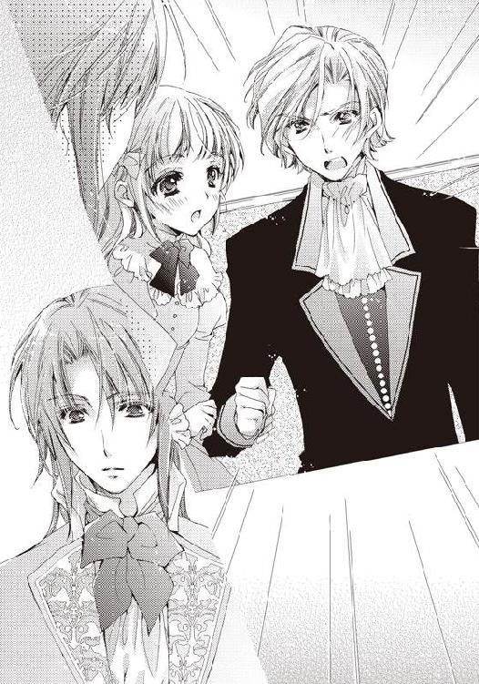
「お、お兄様！」
兄の上着の袖が破れるほど強く引っ張ったけれど、興奮したセレスタンを止めるまでには至らない。完全にエドゥアルドのことを妹につく悪い虫だと思っている。
「夜中に来たことは謝罪します。ですが、これでも舞踏会が終わってから、急いで馬車を飛ばしてきたのです」
「舞踏会？」
セレスタンが彼の話に興味を持ったのか、少し声のトーンが落ちる。しかし次の言葉で一気に爆発することになった。
「はい、舞踏会でミス・フローラに交際を申し出まして、その返事をすぐにでも聞かせてもらいたかったので」
「交際!? フローラと!!」
あまりの展開に兄が固まっている。そして、噴火する山の如く動き出した。
「駄目だ、駄目だ、駄目だ！ どこの馬の骨ともわからない、舞踏会で一度会ったばかりの男に、いきなり妹との交際を許せるか」
血統としては最高級......というか、雲の上の方なんだけど。
冷静な突っ込みをフローラは心の中で入れつつも、これ以上、兄を止めるのは無駄だとばかりに諦めた。もう、なるようになるしかない。
「そうですか、お兄様の約束を頂けないのでは仕方ありません......」
反論して、王子だと明かせばいいのに、真面目に受け止め、エドゥアルドが落ち込む。本当にこのままだと帰ってしまいそうだ。
「勝手に俺のことをお兄様などと呼ぶな............キャスブルク家はなんだってこんな......ん？ キャスブルク家......エドゥアルド......？」
何かを思い出したようにセレスタンが頭を捻る。
小声で、フローラはそのやっと出てこようとしている兄の記憶を後押しした。
「今日、お兄様がご自分でおっしゃっていた王子よ」
「......っ!! お、う......じ......？」
ビクっと身体を震わせて大げさに驚き、フローラとエドゥアルドの顔を順番に兄が見る。しかし、すぐにいつもの冷静で社交的な兄の顔に戻った。
「......フローラ、あまり遅くならないようにな。エドゥアルド......お......いや、エドゥアルド君、失礼した。私が口を出すことではないようだ」
エドゥアルド王子ではなく、エドゥアルド君と呼んだのは、せめてもの兄としての威厳だろうか？
胸中はどうあれ、一瞬にして、セレスタンが何事もなかったような顔で去っていく。
あとで色々と説明しなければいけないだろう。
──すごく面倒だわ......。
「お兄様は、何か急用か何かですか？」
エドゥアルドが一人、事情がわからずにきょとんとした顔でフローラを見ていた。
「気にしないで、少し変わった兄なので」
──自業自得よ......お兄様。
ひとまず、兄の性格のせいにして、この場を誤魔化す。
「貴方のことを愛しているのですね、いいお兄様です」
「え、ええ......時々暴走するのが問題だけど」
いい意味でエドゥアルドが解釈してくれて、フローラはほっと胸を撫で下ろした。
王族を敵に回して兄弟愛を貫くなんて、物語の中だけにして欲しい。
「それでは、お返事を聞かせて頂けますか？」
「あっ......それは......」
やっと一息ついたのに、またすぐにフローラは切羽詰まった状況になってしまった。
エドゥアルドに舞踏会の夜、交際を申し込まれ、全く考えていなかったわけではない。しかし、難し過ぎて、答えが出る前に頭の隅に追いやっていたのが事実だ。
──困ったわ。
エドゥアルドに惹かれているのは......なんとなく自覚している。他の男の人に感じたことのない魅力を感じている。
でも、それは最初の出会いが妖精のようだったからかもしれないし。今までキスをされたことがないからかもしれない。
そもそも好きかと言われると、わからないとしか答えようがないし、王子と知るとさらに一歩引いてしまう。他の令嬢のように王子様との恋に浮かれる気はあまりなかった。
フローラの知識では、王子との恋愛は決まって障害ばかりで苦労の連続だからだ。
断ることをためらうほどにはエドゥアルドに惹かれていて、承諾するほどには決め手に欠ける。
さすがにそんなことを言ったら失礼極まりないことはわかっているので、困ってしまう。
頭が熱さで干上がってしまうほど考えたところで、ふと日記のことを思い出した。
──日記には、彼とデートへ行くと書いてあったわ。しかも結ばれるとまで......。
日記の内容から推測するに、もしかしたら、ここでどんな返答をしてもデートへは行くのかもしれない。
むくむくとフローラの真面目な思考回路が、悪戯心に支配させていく。
──本当に日記が正しいのか試すいい機会かもしれない。
でも、きっぱりと断るのはさすがに気が引けるので、やんわりと断ってみよう。兄の追及をかわすのは慣れているし。
「お返事の保留......とかは駄目でしょうか？」
相手の反応を探るようにして、エドゥアルドへフローラは答えた。
時間が欲しいのは本当だ。
「保留ですか......」
「ごめんなさい。その、まだよくわからなくて......恋愛とか......あなたのこととか」
彼が落ち込んだように見えたので、慌ててフォローの言葉を付け加える。しかし、すぐにエドゥアルドが顔を上げ、にっこりと微笑んでいた。
「それはまだ可能性があるというのですよね？ よかった。初めての告白でしたので、心臓が止まるかと思っていました。保留......私のことを考えて頂けている、いい言葉ですね」
保留という言葉を、これほどいい意味に考える人がいるだろうか。あまりのポジティブさにフローラは口をぽかんとしてしまった。慌てて手で、口を塞ぐ。
その間も、王子は嬉しそうに目を細めていた。
「そうだ！ 今度、友人として一緒にどこかへ出掛けませんか？ 私を知るいい機会にもなりますし」
う......友達と来たか。
エドゥアルドの真っ直ぐな好意と申し出に、反射的に「はい」と言いたくなるのを、フローラはぐっと堪えた。
このままでは、日記の通りになってしまう。思い通りにはならないわ！
いつの間にか目的がすり替わり、フローラはすっかり日記に書かれていたことと違う結果にしようと躍起になってしまう。
「あいにく、私は外が大っ嫌いで────」
本当とは真逆の言葉が、口から出た。
「舞踏会でお話しした、妖精にまつわる伝承がある私の領地へピクニックに行くなどは、どうでしょうか？」
「行きます！ 絶対に行きます！」
舌の根も乾かないうちに、フローラは承諾していた。
当然だ。日記への意地なんて妖精に比べたらちっぽけ過ぎて、お話にならない。
「よかった。では、数日後にでも改めて期日をお知らせしますね」
「そんな悠長なことを言わずに、明日は駄目ですか？ 明後日でもいいですけど、明日がいいかと思います」
数日後に期日を決めていたら、実際に行くのは来週とかになってしまうかもしれない。何か邪魔が入ってしまって、結局行けないことだってありえる。たとえば、兄とか。
必死に、フローラはエドゥアルドへ明日の必要性を訴えた。
「私は構わないですが、お兄様にもお断りしないと......呼んで頂けますか？」
「お、お兄様にはわたしから言っておくので、大丈夫です。友人とお出掛けするのに、なんら咎められることはありませんわ」
「そうですね。そう考えると友人、というのもよい関係な気がしてきました」
どうやら、エドゥアルドも納得してくれたようだ。やっぱり、変な捉え方をしているけれど、フローラはもうそんなことを気にしていなかった。
──明日、ついに妖精を探しにいける。もしかして、もしかしたら、妖精に会えるかもしれない。エドゥアルド以上の妖精に！
それを考えるだけで、心躍る。
エドゥアルドを、屋敷の庭で最初に見た時のわくわくが甦ってくるようだ。
「それでは明日の朝、お迎えに上がりますね」
フローラが一通り、幸せに浸ったタイミングを見計らったかのように、少ししてからエドゥアルドが腰を上げた。
「あっ！ なんでしたら、今日はもう遅いので、この屋敷の部屋にお泊りに」
舞踏会が終わってすぐに馬車を飛ばして来たと言っていたので、途中で抜け出してきたフローラと違い、馬車の中でしか寝ていないに違いない。
なおかつ、朝、フローラを迎えに来るとなれば、自分の領地とオズフィールドを二往復させることになる。彼の領地がどこにあるかは知らないけれど、ほとんど休めないだろう。
ちなみに、妖精のいわくつきの領地がたとえ一日かかる場所にあったとしても、それは全くもって気にしない。できれば、馬車でも行けないような、遠くて深い森の中なんてのが理想なぐらいだ。
「ご心配には及びません。この近くにも小さいですが私の領地があるので、今日はそこに泊まりますから」
「そうですか、よかった」
王族である彼が領地をいくつか持っているのは当然のことだ。改めて、彼が王子だというのを意識させられる。
「では、私はこれで......お兄様にもよろしくお伝えください」
「は、はい。お気をつけて」
「明日、楽しみにしていますね。ミス・フローラ」
「お休みなさい」
ふんわりとした笑みをフローラに向けると、静かにエドゥアルドが屋敷を出て行った。
「あっ！」
玄関で彼の乗った馬車をニコニコと見送り終わったところでやっと正気に戻る。
──これって、やっぱり日記のままに!?
「フローラ！ ちょっとこちらへ来なさい！」
「わ、わかりましたわ、お兄様！ ふぅ......」
それから夜が更けるまで、フローラは長々と兄にエドゥアルドとの出会いの経緯を説明し、明日出掛ける許可を取ることに苦心しなければならなかった。
次の日、フローラは迎えに来た馬車に揺られていた。
向かいにはエドゥアルドが朝早いというのに、疲れも見せずに行儀よく座っている。
セレスタンも言っていたので、嘘ではないと思うけれど、数日前まで病に倒れていたというのが嘘のようだ。
しかし、改めて聞くのは気が引けてしまう。気にしているかもしれないし、それでこれからのピクニックが楽しくなくなってしまうのは困る。
考えてみれば、これがエドゥアルドとの初の遠出だし、さらには今、馬車の狭い空間に二人だけだった。
「......あっ！」
ちょうどタイミングよく、馬車が大きく揺れ、彼の脚と自分の脚が少しだけ触れる。それだけのことで、驚いて妙に意識してしまう。
エドゥアルドと......近い......。
途端にフローラはエドゥアルドが男性だということを意識してしまった。
──今更、距離が近いぐらいで何を緊張してるの！ 彼とはキスをしたぐらいなんだから！ ゼロ距離も経験済みよ！ あ......日記だとこれから、さらにあんなことや、こんなことまで............。
もう、収まるどころか、彼の顔を見られないぐらいに恥ずかしい。
何か、何か気を紛らせることを話さないと。
必死に頭を巡らせるも、ろくなことが浮かんでこない。妖精の話とか、妖精の話とか、本の話とか。
「緊張してしまいますね。ダンスを踊った時はもっと距離が近かったというのに、変な気分です」
軽くパニックになりそうだった時、意識していたのはエドゥアルドも同じようで、恥ずかしがることなくそのことを口にした。
「ふふ、そうですね」
自分と同じだと思うと、不思議と少し緊張が解けていく。
「よければ、これから行く場所の話をしてもらえますか？」
落ち着くと、自然と話題が浮かんでくる。そういえば、何も聞かずに、妖精の話にだけに釣られ、ひょいと馬車に乗り込んでしまっていた。
「喜んで。そこは、私の持つ領地の中でも取り分け何もない場所なのですが......」
エドゥアルドが落ち着いた口調で、話を始めた。
オズフィールドの屋敷からはそれほど遠くない、ディルストンという森林が大部分を占める土地で、近くの人たちには〝森精霊の守護林〟と呼ばれているらしい。
かつては王族の狩猟場として使われていたけれど、ある日を境に使用を禁止されたいわくつきの場所。
「禁止の場所。素敵......」
思わず声が出てしまう。彼の話し方はとても聞きやすく、心地良い抑揚があり、フローラは自然と引き込まれていった。
「それで今から数代前の王の弟がある日、ディルストンで狩猟を楽しんでいると、獲物を追いかけるうちに、森の奥へと迷い込んでしまったそうです」
深い森へと迷い込む。あぁ、素敵なシチュエーション！
フローラの琴線に触れる言葉の数々に、思わずうっとりとしてしまう。
「もちろん、大勢の者たちが必死に探しましたが、森は深く、なかなか見つかりません。数日、数週間と経ち、捜索を諦めかけた翌月、ふと近くの民家に彼が姿を見せたのです。しかも長い間、遭難していたというのに髭も伸びておらず、元気な様子で」
「......それで？ どうして、彼は元気だったの？」
早く続きが聞きたくて、フローラはエドゥアルドを急かした。
「王弟が言うには、不思議な森の住人に助けてもらったそうです。しかも、おかしなことに彼は一ヶ月ではなく、迷っていたのは半日だと証言しました」
一ヶ月が半日──妖精の棲む場所では、人間とは時の流れが違うと読んだことがある。
──すごい！ すごい、すごい！ 全部妖精っぽい。
ぐいぐいとフローラは話へと引き込まれていく。
「さらに、助けてもらう時にあることを約束したと、ディルストンでの狩猟を禁止するように王に直接願い出たそうです」
「妖精と約束！ 何を約束したんです？」
「これ以上、森を荒らさないこと。人が森を切り開くことはもとより、馬に乗って入ることを止めるよう約束したそうです。王は弟の進言を受け入れ、以後、ディルストンでは狩猟・農作が禁止されています」
狩猟と農作の禁止。それだと実質、誰も寄りつかない土地になってしまう。
人と出会うことを嫌う妖精にとっては好都合だ。
「自然とディルストンから人は離れ、利用価値のない土地が、病気がちだったこの私に押し付けられたというわけです」
──ああ、そんなに素敵な領地なら、オズフィールド家にくれればよかったのに。
少し悔やみながらも、こうして出会えたエドゥアルドが持っていたことに感謝する。今から、自分の目で見て、身体で味わうことができるのだ。
曰くつきの妖精の森を。
勝手に身体がぶるっと震えた。
「ご満足頂けましたか？」
「はい、とっても！ オズフィールドの領地にもいくつか妖精の名前がつく場所はあるのですけど、具体的な伝承はなくて......今まで聞いたり、読んだりした話の中でもっとも信憑性がありました。楽しみです！」
「ふふっ、よかった。ああ、ちょうどディルストンに入ったようですね」
話を聞いている間に、随分時間が経っていたようだ。
いつの間にか窓の外には平地ではなく、遠くに高くて深い森が見えていた。
降り立ったのは霧深い森だった。
けれど、そこへ立つと、不思議と恐怖はない。むしろ心地良い木々のざわめきが、歓迎してくれているかのように葉を揺らす。
人の手が入った気配はない。古くに作られただろう微かに見える地肌が残る道へ、伸び放題の草が自慢の三日月形の葉を思い切り広げていた。
目を凝らすと、草の合間に白い鈴蘭が咲いていた。木苺も赤い宝石のような粒をつけている。
「綺麗な場所......」
呼吸する度、森のひんやりとした空気が身体に染みこんでくる。
「少し、歩きましょうか？」
「はい」
フローラはエドゥアルドにエスコートされ、連れ立って森の中の散策を始めた。
さすがに王子である彼と二人きりというわけにはいかず、後ろには数人の使用人たちが大量の荷物とともについてきている。
その中には馬車へ乗る際に紹介された彼の後見人のバレル侯爵の姿もあった。心配性で無理やりついて来たそうだ。先日まで重い病にかかっていたとあれば、当然のことだろう。
「あまり人が歩かない道なので......足下には十分に気をつけて、私の腕を遠慮なく掴んでください」
「は、はい。すみません」
歩く度に、段々と道が悪くなっていく。袖の長いドレスが、今日ほど恨めしく思ったことはなかった。
全部を脱いで裸足で駆け出したい気分を抑え、彼の腕に掴まる。すると前にも聞こえてきた、ぐぅ......という音がすぐ近くで聞こえた。
「ふふ......」
思わず、笑い声が出てしまう。彼のお腹の音だったからだ。
「し、失礼しました......だいぶ歩いたもので、つい......」
「せっかくの紳士が台無しですぞ、エドゥアルド様。ですが、この爺も腹が減りましたな。そろそろ昼食にしては如何です？」
いつの間にかすぐ後ろにいたバレル公爵が、豪快に笑いながら提案する。
確かにそろそろ休憩しながら、ゆっくり木々を眺めてみたくなっていた。
「わたしも賛成です。何か飲み物が飲みたいですわ」
フローラも提案に賛成する。
今日はメイドたちがはりきって、きつくコルセットを締めたのであまりお腹が空かないものの、喉だけはとても渇いていた。
「では、そうしましょう。皆さん、お願いします」
エドゥアルドが後ろにいる使用人たちに声を掛けると、一斉に彼らが動き出して休憩する用意を始めた。
草の上へ簡単なテーブルと椅子が並べられ、テーブルクロスが被せられる。すぐに美味しそうな、軽食と湯気の立つ紅茶が準備された。
蒸し鶏の骨付き肉に、レタスやハムを挟んだパン。それから種類が数え切れないほどのパイ。甘い果実が載せられたものから、ひき肉を味付けしたものもある。
「さあ、どうぞ。遠慮なく食べてください」
彼に勧められるままに、軽食へと手をつける。
「これ美味しい！」
パンも中の具材も上質なものを使っていて、味のバランスもいい。はっきり言って、舞踏会で出た料理よりもとても美味しかった。
「お口に合ってよかった。外で食べる食事も格別ですね」
言われてみると、確かに森の中のひんやりとして澄んだ空気が食事を美味しくしているようにも感じる。
森の匂い。本の匂いに次いで好きな匂いだ。自然と鼻がひくひくと動く。
「紅茶も美味しい......」
食べ物の匂いに惹かれて、妖精が出てきてくれたら最高なのに。
パイを盗みに、ひょいっと顔だけでも見せてくれないかしら。
おかしなところがないかと辺りを見回そうとしたけれど、それより先にフローラは目の前にいる彼の様子に視線が止まった。
「どうしました？」
エドゥアルドの前には大量のパイとサンドイッチが積まれていた。手を止めることなく、次々とそれを口へ運んでいる。前の舞踏会で似たような光景を知っていても、気持ちいいぐらいの食べっぷりに驚いてしまう。
「舞踏会の時も思いましたけど......本当によく食べますね、エドゥアルド様は。あ、別に嫌とかではありませんからね」
汚い食べ方ではないし、何よりあまりの豪快な食べっぷりに清々しいというか、可愛らしさを感じるのは自分だけだろうか。
「そう言って頂けると嬉しいです。回復してから、私は食べるのが大好きになってしまったようで。うん、美味しいです」
満面の笑みでエドゥアルドが答える。本当に食べている時の彼は嬉しそうだ。
「エドゥアルド様はつい最近まで苦くて、美味しくもないものばかりを食べておられましたからな」
バレル侯爵が付け加えた言葉で、その意味に気づく。
ずっと病気をしていたとすると、食事は身体にいいものや薬に近いものばかりになるのは当然だ。
彼の世間離れした反応や何事にもポジティブな性格は、すべてその病気で臥せっていた過去から来ているのだろう。
しかし、暗い過去を感じさせない強さが今のエドゥアルドにはあると思った。明るくて、優しくて、何事にも前向きな人だ。
「あの頃に比べたら、どんなものも美味しくて、どんな体験も楽しいですね。こうして、フローラと出会い、遠出をすることもできるのですから」
自分がこんなとことで引き合いに出されると思わなかったので、ふいをつかれ、頬が赤くなっていく。
本当に自分などでいいのだろうか？ その問いが口を出そうになる。
「さあ、王子。フローラ嬢が退屈する前にその空腹を満たしてしまいましょう」
「ええ、すぐに平らげます。しばしお待ちください、ミス・フローラ」
バレル侯爵もとても大きな身体をしているので、お歳とはいえ、かなり食べる方だと思うけれど、それ以上にエドゥアルドがばくばくと食事を平らげていく。
──腹ぺこの王子様？
その光景を微笑ましい気持ちで眺めながら、フローラはゆっくりと紅茶とサンドイッチを味わった。
エドゥアルドのお腹も落ち着いた頃。
午後の日差しが木々の隙間から差し込み、温かくて気持ちのいい絶好の探索日和になっていた。
「エドゥアルド様、もう少し奥へ行けませんか？」
せっかく口うるさい兄もいないのだから、フローラはもう少し奥、日光があまり入らないような木々の生い茂る下を歩いてみたかった。
「そうですね。まだ、妖精も出てきていないことですし」
今ではエドゥアルドが妖精に関するフローラの一番の理解者だ。
「バレル侯爵、食後の運動にフローラと一緒に辺りを散策してきます。皆さんは待っていてくれますか？」
「エドゥアルド様、それは構いませんが、あまり奥へは行かれない様に約束して頂けますかな？」
「はい、あまり離れないようにします。では行きましょう、フローラ」
エドゥアルドの手に引かれ、日傘を片手に森の奥へと歩いていく。
足下はさらに悪くなっていくけれど、次第に彼の腕に身を任せるようになっていたから随分楽になっていた。エドゥアルドならば、自分が転んでもしっかり掴んでくれるという信頼がそうさせている。
──未来のだんな様と歩くってこういうことかしら？
自分らしくない想像までして、また少し緊張しつつも二人での散策は楽しかった。
「木々が大きく、高くなっていきますね」
エドゥアルドが上の方を見上げながら呟く。
「本当。こんなに森の深くにまで来たことがなかったので楽しくて、とても興奮してます、わたし」
「ふふっ、よかった。貴方と楽しい時間を共有できて」
「あ、いえ、その......」
突然、何の前触れもなくエドゥアルドが、普通ならば恥ずかしいような言葉と、とびきりの笑顔を向けてくるので、つい言葉に詰まってしまう。
悪気がないとはいえ、心臓に悪い。
「あ......あれは？」
彼が道の右端を指差す。そこには何か小さな長方形の石が刺さっているように見えた。
近くまで行ってみると、石碑だとわかる。道路側を向いた面には、何か文字が書かれていた。
「こんなところに石碑が立てられていたなんて知りませんでした............かなり古いもののようですね」
文字は所々消えかかっている上に、今使われている文字とは違うようで読むことができない。
「もしかすると、エドゥアルド様が話してくれた伝承の石碑かもしれませんね」
だったら素敵だと、フローラは勝手に想像する。
「そうですね。この土地は本当に人が入らないので、王が弟を助けた妖精に敬意を表して立てたものかもしれませんね」
「文字が読めたら、もっとわかったのに......」
本当に残念だ。石碑にはもっと詳しいことが書かれているかもしれない。
けれど、これが伝承に由来しているものだとしても、単なる警告文ってこともありえるかも......？
怖い考えが頭に浮かんだ瞬間、寒気を感じ、ぶるっと身体をフローラは震わせた。
「えっ？ いつの間に？」
周りを見渡し、フローラは驚きの声を上げた。
二人とも石板に注視していたからだろうか、気づくと辺り一面霧に覆われ、視界は数歩先も見えないような状況になっていた。
「おかしいですね。今まで霧など出ていなかったというのに......」
軽くパニックになっているフローラの手を、エドゥアルドがそっと握り締める。指から伝わってくる彼の体温だけで、少し落ち着くことができた。
「来た道をゆっくり戻りましょうか。幸い、石碑の向きから、来た方向はわかりますから......ちゃんと私に掴まっていてください」
「は、はい......絶対に離しません」
きつくエドゥアルドの腕に手を回すと、身体を引き寄せた。森の中で一人ぼっちになるのはいくらなんでも怖過ぎる。遭難すれば、伝承のように妖精に会えるのかもしれないけれど、会えなかったら飢え死にするだけだ。
「心配いりません、大丈夫ですよ。さあ、行きましょう」
こんな時でもエドゥアルドはとても落ち着いて、フローラを励ましながら歩みを進めてくれた。
しかし、歩けども霧は晴れず、バレル侯爵たちが休憩している場所まで戻れない。
「困りましたね。バレル侯爵たちが動いたとは考えられないので、おそらく迷っているのは私たちです」
冷静にエドゥアルドが状況を分析する。
「これ以上は歩き回らず、霧が晴れるのを待ちましょう。太陽の位置さえわかれば、時間から森の入り口の方向ぐらいはわかります」
「ど、どうしてそんなに冷静でいられるんですか？」
フローラは、先ほどから震えが止まらないというのに。
このままでは二人とも遭難して、骸骨になってしまう。妖精の存在を信じてはいても、彼らが人間を助けるのは気まぐれでしかない。
「......私には生死を彷徨うような危険な場面が、何度もありましたから」
悲しそうな、遠くに想いを馳せるような、そんな顔をしながら彼が呟いた。
「心臓が止まりかけたこともあります。そのせいでしょうか？ 随分前からあまり自分の生死に執着がなくなってしまい。痛みに弱くなってしまったのです。身体も心も」
あまりに悲しい彼の言葉だった。
エドゥアルドが最近まで重い病気になっていたことは、度々、つい先ほどの昼食の時も聞いていたとはいえ、彼の立場に立ってまでは考えていなかった。
ただ、強いな、と漠然と考えていたに過ぎない。
「でも、安心してください。元気になって、色々と楽しいことや美味しい食べ物を知ってしまったので、実は私も少しだけ死ぬのが怖いです。そして、今は何より貴方が先に死んでしまう可能性の方が怖い。先立たれてしまったら、私は途方に暮れる日々を送るしかないでしょう」
......それはプロポーズなのだろうか。
よくわからないけれど、胸に響く言葉だった。少しずれていたとしても、エドゥアルドが口にして初めて深い意味を持つ。たとえ、結婚していなくても......。
どの本の、どの主人公の言葉でもなく、温かで、手をしっかりと握っていてくれる彼が、フローラだけに向けた言葉。
それはとても純粋で、言葉というには気持ちが詰まり過ぎていて、どんな物語よりも胸が熱くなっていた。
「エドゥアルド......様......」
悲しまないように抱き締めてあげたいという気分に駆られる。
これが世に言う母性だろうか？
ただ、わかるのは胸が締め付けられるように痛くて──彼の顔から瞳を逸らせない。
段々とエドゥアルドとの距離が詰まっていっていく。自分が引き寄せられているのか、それとも彼が近づいてきているのかわからなかった。
「きゃっ！」
その時、突然、二人の間を突風が駆け抜けていく。
辺りを見回すともう霧はどこにもなかった。
「あ、霧が......晴れた......」
「ええ、これでひとまず迷い続ける心配はなさそうです」
二人で手を合わせ、ひとまずの危機が去ってくれたことを喜ぶ。
「本当に妖精の仕業かもしれませんね」
「えっ？ なぜです？」
「邪魔したのですよ、妖精が。貴方との二度目のキスを」
今頃になって、あと数秒突風が遅かったらキスしていただろうことを思い出す。しかも、前は彼にいきなり奪われてしまったけれど、今度は自分も引き寄せられていた。キスしてもいいと完全に思っていた。
顔から火が出そうなほど熱くなっていく。
「え......いや......あれは......もう、からかわないでください！ 行きますよ！」
「すみません。謝りますから、待ってください」
恥ずかしさのあまり、あらぬ方向へと歩き出そうとするフローラの腕を掴むと、エドゥアルドが太陽の位置をすぐに確認する。何とか二人は森の入り口へと再び歩き始めた。
しかし、霧は晴れたとはいえ、その間に迷ってしまったのが大きかったのか、なかなか来た道に戻ることはできなかった。
それどころか、見たことのない場所に出る。
「わぁ......すごい」
どこをどう歩いた結果なのか、フローラたちの前には美しい湖が目の前に広がっていた。
雨水が溜まってできたような小さいものではなく、魚たちが住むような大きな湖だ。
周囲の森に囲まれ、ひっそりとしているものの、太陽の光を反射してキラキラと光っている。
何よりもフローラが綺麗だと思ったのは、エメラルドグリーンの水の色だ。空と森との色が混じったような色で、その境界線を絵具みたいに混ぜてしまったかのようだった。
「こんな湖があったなんて、知りませんでした」
エドゥアルドも知らなかったようだ。湖を一望し、感嘆の息を吐く。
「あそこに、小屋と舟がありますね」
彼の指さす方向を見ると、小屋と桟橋、水面には杭に結ばれた小舟が浮かんでいた。近づいてみるも、あまり劣化はない様子で今でも使えそうだ。
「立ち入りが禁止される前のものでしょうか？」
「でも、それにしたら随分綺麗なままですね」
小屋も小舟も桟橋も木製にも関わらず、石碑と比べたらほとんど風化している様子がない。この湖一帯、時間が止まったかのようにさえ思えてくる。
「もしかすると役立つものがあるかもしれません。小屋の中を調べてきますね」
「気をつけてください......やっぱり、一緒に行きます」
離れるのは少し怖かったので、フローラは彼に続いた。
手を繋ぎ、小屋の扉を開ける。川岸に建てられたそれは、短い丸太を積み重ねたような三角屋根の簡単な小屋だった。
しっかりとした木の扉が音もなく、開いていく。
「床は......大丈夫そうですね？」
彼がしっかりと床板を踏み締めて確かめると、二人で中へ入る。
長年籠ったような変な匂いはしない。逆に、木材の心地良い匂いが漂っていた。木々が呼吸をしてくれていたからかもしれない。
「湖で釣りをする時の休憩小屋として使われていたのでしょうか？ 中にあるものを確かめましょうか」
中は人が三、四人も寝そべったら身動き取れなくなりそうな狭さだったので、手分けするまでもなくすぐに調べることができた。
「意外と色々ありますね。しかも、まだ使えそうです」
小屋の天井には、きちんと蝋燭の入っているランプがぶら下がっているし、火をつけるためのマッチまで置いてあった。
あとはナイフと綺麗なままの毛布が二枚と釣りの道具一式。
「魚を獲ってお腹を満たして、火を絶やさないようにすれば、しばらく助けが来なくても生きていけそうですね」
「え、ええ」
とりあえず骸骨になって彷徨うことだけは回避できそうだ。
それに、失礼だけど見た目に反して、エドゥアルドがとても頼りになるのが何より安心できる。
「今、思いついたのですが......」
「なんです？」
「もしかすると、行方不明だった王弟もここで過ごしたのかもしれませんね。迷子になったなんて言うのが恥ずかしくて、妖精などと嘘をついたのかもしれません」
確かにありえることかもしれない。猟に来て、獲物を追っていたら一人迷子になったなんて恥ずかしいことに違いない。でないと、ここに今でも高価なマッチが置いてあるのは不自然だ
本当なら、何とも人騒がせな人だ。そのお蔭で言い伝えができて、この土地は誰も寄りつかなくなってしまったのだから。
──迷子になっている自分が言える立場じゃないけれど。
「外でたき火をしましょう。燃やす枝なら沢山落ちていますし」
「たき火？ それほど寒くはありませんけど......」
エドゥアルドがマッチを手に、外へと向かう。小屋と湖から少しだけ離れた場所に枝や枯草を集め始めた。フローラも同じように乾いたものを集めてくる。
小屋に少しだけあった藁に彼が火をつけると、集めた火種に投げ込む。
「天気のいい日でよかった。こうして、火をつけて煙が上がればすぐにバレル侯爵たちが見つけてくれますよ」
「あっ！ 狼煙！」
古い伝記などの中で、戦争の際に煙を上げて戦況を伝えていたことを思い出す。
改めてエドゥアルドの知恵と頭の回転に感心する。フローラも知識こそあるが、いざ実際に自分が現実に応用することまでは全く考えつかなかった。
「森で火や煙は目立ちますから、きっと見つけてくれますよ。私たちは、ゆっくりしていましょうか」
少し暢気な口調でエドゥアルドが言う。わざと自分を安心させようとしてくれているのに気づきつつも、実際にもうフローラはちっとも怖くなくなっていた。
彼とならば、何とかこのピンチも切り抜けそうだし、楽しめそうだ。
「だったら、あの小舟に乗りませんか？」
せっかく綺麗な湖なのだから、もっと近くで見てみたくなり、エドゥアルドに提案する。
「ええ、いいですよ。もちろん、沈まないかきちんと確認した上ですが」
幸いなことに、小舟には穴も痛みもなく、オールもきちんとついている。
これならば大丈夫だというエドゥアルドに手を取ってもらいながら小舟に乗り、湖の中心へ漕ぎ始めた。
「ひんやりして、気持ちいい......」
水の上だからだろうか。風が冷たくて、少し興奮して熱くなっていた肌を冷やしていく。
「素敵な湖ですね。人の手が入っていないからでしょうか。とても自然で、美しい」
「ええ、すごく気に入りました。迷子になっていなければ、本当はもっと楽しめたのだけれど......」
「ふふ、そうですね」
エメラルドグリーンの湖の上で、フローラの言葉に優しくエドゥアルドが微笑む。本当に時が止まってしまったかのような幻想的な風景だ。
差し当たっては、彼は妖精王。自分は迷い込んだ人間。
「あ............」
ふと見た彼の唇をなんだかまた妙に意識してしまって、下を向く。どうしてか、石碑の前でのエドゥアルドの悲しげな表情を見てから、妙に気になって仕方ない。
「わぁ......」
しかし、今度は小舟の下に広がる水面にフローラは心動かされた。
まるで古い物語にあった、王様が妖精から聖剣を授かった湖みたいだ。とても神秘的な雰囲気がする。
遠くまで透き通るような濁りのない水面は、どこまでも底を見つめてしまいたくなって焦点が怪しくなっていく。この美しい薄緑色の原因がどこにあるのか。
『フローラ......フローラ......』
狭まっていく視界の中、フローラは何かに呼ばれている気がした。頭の中に直接聞こえてくるような、それでいて、安心させるような............。
「あまり見ていると危ないですよ。とてもきれいな色なので引き込まれ──フローラ！」
「あっ！」
エドゥアルドが注意した時には遅かった。湖の美しさに引かれ、身体のバランスを崩す。頭から水の中へと落ちてしまった。
バシャンと大きな水音が遠くから響いてくる。身体中から気泡が発せられ、湖に溶けてしまいそうに沈んでいく。
「あ......助け......ぐぅっ、エドゥ......アルドさ......ま！」
湖の水は思ったよりも深く、足は全く届くように思えない。フローラは必死で手足を振り、彼に助けを求めた。
「フローラ！」
ためらうことなく、彼が水に飛び込む──そこで、大量の水を飲み、フローラは意識を失ってしまった。
※ ※ ※
すぐにエドゥアルドは彼女の身体を水中で捕まえ、何とか陸へと引き上げたけれど、意識がなかった。
とりあえず、狼煙としてつけた焚火の近くへ彼女を寝かす。
「フローラ！ フローラ！」
何度呼んでも、返事がない。握った手はぴくりともしない。
もっと彼女に注意していれば。小舟に乗るなんて賛成しなければ。
自分を責める言葉が次々と浮かんできて、胸を締め付ける。
「フローラ！ 起きて、フローラ！」
まさか、このまま死んで......。
最悪の事態を予想して、エドゥアルドは混乱した。
自分の死はもう慣れてしまうほどに直面していたけれど、親しい人間の死を間近で見たことはない。急に恐れが身体中を支配して、動けなくなる。
「......助けないと......早く......」
震える手を彼女の額に当てる。
こういった時の対処法は、医学書の中で読んだことがあった。自分の病気を知るための一環と暇つぶしとして読んだことがあったのだけれど、まさか自分以外のために役に立つ時があるとは思わなかった。
──落ち着け、落ち着くんだ。
まずは胃に入った水を吐かせないと......。
そのためには彼女に口を開かせ、息を吹き込むことで吐き出すはずだ。
「すみません、フローラ」
聞こえていないとはわかっていても、また唇を奪ってしまうことを謝り、彼女の顎に手を置くと上に向かせ、口を開かせる。
思い切り息を吸うと、フローラの唇へ口付けした。
「ん────」
こんな時だというのに、その感触を味わってしまう。自分の中の邪念を振り払いつつ、口に含んだ空気を送り込み続ける。
「う............」
口を離すと、フローラが微かだが苦しそうな呻き声を上げる。
──もう一度。もう一度だ！
彼女が死んでしまう恐怖に捕らわれてしまわないように、自分を奮い立たせながら先ほどと同じようにエドゥアルドは息を吸い込んだ。
「────ん」
「うぅ......ごほっ！ ごほっ！」
急に彼女が激しくせき込み、水を吐いた。
「はぁ、よかった......あとは......」
彼女の身体を確認する。
まだ弱々しいが息をしていた。
しかし、ドレスが水を吸い、べっとりと身体に張り付いている。このままだと身体を冷やし、衰弱してしまうかもしれない。
──身体を温めないと。まずは彼女のドレスを。
いまだ震える手で彼女のドレスに触れるも、破くわけにはいかないので脱がす方法を探す。幾多の本を読んできたエドゥアルドも、ドレスの構造に関する知識はなかった。
「......あっ！」
あれこれとドレスを触っているうちに、彼女の柔らかな肌に触れてしまう。
「フローラ......」
一瞬その甘美な感触に酔いそうになる自分を叱咤し、何とかドレスを脱がすことに成功する。
「あぁ............」
しかし、思わずため息を上げてしまった。フローラが裸で横たわっている。
美しい肌の曲線や、胸の膨らみ、先端の赤い蕾、そのすべてに目が釘付けになる。
意識しないなんて無理だ。彼女が好きで、好きで、妻にしたいとまでも本当に思っているのだから。
寝ているフローラの身体へ、無意識に指を伸ばしそうになる。
「だ、駄目だ！ 彼女の身体を温めないと」
自分の頬を叩くと正気に戻し、エドゥアルドは小屋にあった毛布を取りに行くと、それで彼女の身体をマッサージし始めた。
「フローラ......お願いです、死なないでください......」
冷たく、青くなっていた身体が徐々に赤みを帯びてくる。
しかし、まだ意識はなく、微かに聞こえてくる息も苦しそうだ。
「死なないで、フローラ！ 生きて欲しい！ 私を置いていかないでください！」
エドゥアルドの必死の呼びかけに弱々しくだが、彼女の指が動いた。
もう一度息を吹き込んだ方がいいかもしれない。
まだ、水が肺に溜まっているのか。
エドゥアルドは再び息を大きく吹き込むと、彼女の顔に優しく手を置いた。
※ ※ ※
「ん────っ......？」
唇に温かさを感じて、フローラは意識が戻った。
目を開けるとそこは水の中でも天国でもなく、太陽の下だ。
すぐにエドゥアルドの顔が覗き込む。とても心配そうな、辛そうな顔をしている。
──ごめんなさい。もう大丈夫。
安心させようとしたけれど、水の中に落ちたショックのためか、声が出てこない。どうやって声を出せばいいのかわからない。こんなことは初めてだ。
どうにかしないと、と身体を動かそうとしたけれど、エドゥアルドの顔が近づき、唇を奪われた──いや、正確には息を吹き込まれていた。
自分を起こしてくれたのは、エドゥアルドのぬくもりだ。
そう思うと、声が出なくて混乱していた気持ちが鎮まっていく。彼から吹き込まれるものを素直に受け入れていくと、身体の隅々まで呼吸が行き渡った気がした。
「エドゥアルド......もう......大丈夫......」
今度は声が出る。彼の辛そうな顔が一瞬で太陽みたいに輝いた。
「よかった......よかった、フローラ！ 貴方が、貴方が死んでしまうのかと思いましたよ！」
感情を表すように、フローラの顔へキスの嵐を降らしてくる。
少しくすぐったいけれど、今はそれが気持ちいい。
「ありがとう......助けてくれて......エドゥアル......ド......!? ぁっ......」
彼からの喜びの口付けは顔だけで終わらなかった。
彼の頭が段々と身体の下へと動いていく。
「フローラ！ ......フローラ！」
興奮して、熱を持ったような顔のエドゥアルドの唇が首筋に触れ、肩へと降りる。
それでも嫌な感じはしない。まだ意識が戻ったばかりで朦朧としていた頭は逆にぬくもりを求めている気がした。
「ん......あ、ぁっ......」
唇がさらに胸へと落ち、先端の赤い蕾へと触れる。子供のように、彼が自分の胸を吸っている。
「ん......ぁっ！」
初めての感覚にフローラは声を上げた。
男の人に......胸を吸われてる？
それはとてもいけないことのような気がして、でも、吸われれば吸われるほどに息が苦しくなり、身体が熱くなっていく。
「美味しい......フローラ......」
情熱的に、エドゥアルドが自分の名前を呼ぶ。美しいと付け足して。
──空腹のあまり、エドゥアルドが自分を食べようとしている？
馬鹿な考えが頭に浮かぶのも、この熱のせいに違いない。
彼からも同じように熱い吐息が漏れ、フローラの肌をさらに火照らせていく。
「あつ......い......身体が......熱い......あぁ、あぁ......」
熱さに呻いた時、ふと、どうしてこんなことになっているのかが頭を過る。
湖に落ちて、彼に助けてもらって、息を吹き込まれて............。
「あ......エドゥアルド............」
そこまで来てやっと、自分が草の上で何もつけずに寝かされていることに気づいた。
水を吸った服はおそらく、エドゥアルドが脱がしてくれたのだろう。そして、自分の裸を見て────。
今更頬がかっと熱くなって、恥ずかしさが込み上げてくる。
自分の素肌を、いや、全部を見られてしまった。しかもエドゥアルドに。
彼だから嫌だというわけではなく、彼だからよかったというのとも違う。複雑な気持ちが胸の中で絡み合い、自分でもよくわからない。
「やっ......エドゥアルド......」
小さく、少しだけエドゥアルドへ意思表示した。
しかし、夢中で胸を吸う彼の耳には届かなかった。
「フローラ......んっ......」
「ひゃっ！」
反射的になのだろうか。彼が離さないと主張するように先端を噛んだ。
今までないような激しい刺激が身体に巡る。電撃が走ったように震えた。
「や......めて......」
刺激に反応することに身体は精一杯で、彼の唇を拒否できない。
このまま身を任せたら、どうなってしまうの？
それはフローラにとって、経験はおろかほとんど知識もないことだ。恐ろしくもあるけれど、興味がないとは言い切れない。
エドゥアルドとなら......エドゥアルドだったら、いいのかもしれない。
彼を抱き締めたいと思った。彼に惹かれていると自覚している。それで十分かもしれないと何かが背中を押す。
痛くなければ、優しくしてくれれば────じゃない！
まだ嫁いでもいないんだから絶対に駄目！
幸いなことに、胸に彼が吸い付いている間にフローラの頭がやっとはっきりしてきた。
「あう............やめて、エドゥアルド......こんなところじゃ......だめ......」
必死に声を出すも、刺激で苦しくて上手く出なかった。
何とか彼の唇から腕から逃れようと、身体を動かす。
「フローラ......気持ちいい......もっと触れたい......貴方の身体に......」
しかし、エドゥアルドは興奮を冷ますことなく、フローラの身体の上に乗ってきた。当然のことながら彼も裸で、肌の感触を脚に、胸に、腕に直接に感じてしまう。
彼の重さを感じる。人の身体がこんなにもずしりと重いものだと初めて知ったし、何よりも温かみがあった。ただ重いものが乗っているのとは違う。
──あっ、エドゥアルドと......繋がる？
こんな状況でフローラは日記の一文を思い出した。逆らうことのできない予言。
そんなの絶対に駄目！
予言を跳ね退けるように、フローラは叫んだ。
「だめよ......エドゥアルド！ あっ......ん──」
しかし、エドゥアルドに唇を塞がれてしまう。
彼の熱い手が胸を揺り動かしている。時折、吸われて硬くなった先端を指が擦っていく。
「あん......ん......んぅ......あ、う──」
エドゥアルドの舌が探るようにフローラの唇を舐めていき、すぐに口を塞いでしまう。
──苦しい。エドゥアルド！
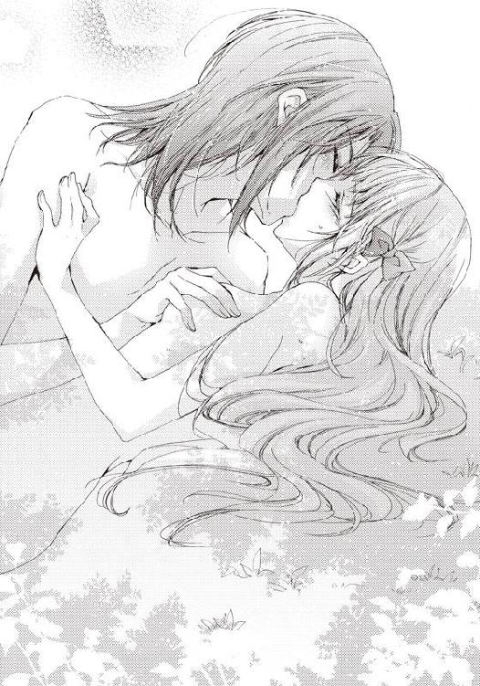
「はぁ......あぁ......ん、んんぅ......」
彼から口移しで熱をもらったかのように、頭の中まで熱さにうなされていく。
苦しさと、熱さで、もう限界に達しそうだった。視界がぼやけていく。
だけれど、次の瞬間、下半身にそれを吹き飛ばすような強い痛みを感じた。
「あ......フローラ......気持ちいい......」
彼が喘ぐのと同時だった。何かがぬるりと自分の身体に入ってきた。
な、なに？ これはなに？
「う、うぅぅ......」
思わず、その何とも言えない感触に呻き声を上げる。
熱くて、骨っぽくて、でも密着するような何かが自分の中にいるのを確かに感じる。しかも、それは生きているように脈打っているのがわかった。
「何？ これ......何？ あ、ああ！ あああああ！ 痛い──！ あうっ！」
少しエドゥアルドの身体が動いたかと思うと、入ってきた何かがさらに奥へと進んでいこうとしているのを感じた。しかも痛みを伴って。
「あっ、くうぅ！ あ、あぁあ！」
声が、唸るような声が口から漏れていく。
「何です？ これ......すごく気持ちいい......奥へ......いきたくなる......っ！」
上に乗るエドゥアルドの顔が歪み、さらに痛みが強くなる。
「あ............ぅっ！ ああっ！」
しかし、すぐに何かが外れ、一気に熱いものが中へと入ってきて、奥へと突き刺さる。
身体の中心を刺されたように、じくじくと下肢が痛み、熱を帯びていく。
何......これって......もしかして？
「ぁぅっ............ぁ............」
やっと痛みに慣れ、はっきりと自分の中の異物を認識できるようになった時、うっすらと自分の中にいるものが彼のものだと気づいた。
つまりは......彼と繋がっている？
確証が持てないのは、フローラは、男の人との行為を当然したことも、見たこともないからだ。実際に今、繋がっているのかどうか、見ることもできない。
しかし、先ほどの痛みと、肌に触れているのではなく中から感じる彼の鼓動からすると、処女を奪われてしまったのは間違いなさそうだった。
ど、どうしよう、どうしたら......。
初めてのことで、完全にフローラの頭は混乱していた。
「フローラ......すみません......我慢......できない......逆らえないんです......なぜか......」
「これって......？ ま、ま、待って......ちょっと......エド......アル......あうぅぅ！」
密着し、息づいていた彼の肉棒が我慢できなくなったかのように震え始め、ついには動き始めた。
上からフローラの身体を擦るようにして、彼の身体が動く。
まだ少し痛みを伴い、強い刺激が身体を貫く。
────激しい......ああっ！
経験したことのない感覚が身体を何度も襲う。
たとえるならば、神経を直接弄られている──そんな感じがする。
耐えきれない刺激にすべてを投げ出してしまいたくなった。しかし、それを一瞬でもすれば、すべてを飲まれてしまいそうでできない。
必死にフローラは自分を保った。
「ぁ......ぅぅ......あああ......駄目......あ、ああ！」
刺激に翻弄され、彼の身体を押しとどめることはできない。
エドゥアルドはといえば、初めての行為に酔っているのか、それとも快感に支配されてしまったのか、ただ腰を振り続け、膣内に肉棒を擦りつけている。
男女の行為がこんなにも苦しくて......激しくて......熱いものなんて知らなかった。
たぶん、もう、エドゥアルドは止まらない。
それは本能に近い何かが感じ取ったもの。そして、証明するかのように彼の動きが激しさを増していく。
「フローラ！ フローラ......！」
自分の名前を呼びながら、エドゥアルドが腰を擦りつける。
肉棒の移動が上下から左右に変わり、より深いものになっていく。
「あっ！ あああ！ く、うぅぅ......」
膣内の一番奥を、肉棒の先端で擦られ、悶えるような、疼くような刺激が伝わる。
────もう......駄目......我慢......できない。
「............っ！」
溢れるような刺激と快感に耐えきれなくなったと諦めた時、エドゥアルドが声にならない息を吐く。
〝大丈夫、怖がらないで、痛いのはちょっとだけ......たぶん〟
「嘘つき......ちょっとじゃない......わ......」
一瞬日記のくだりを思い出すものの、同時にフローラの意識が飛び彼女は再び気を失ってしまった。
次にフローラが起きたのは湖の小屋の中だった。
「ん......んん......わたし、何を......」
身体は毛布に包まれ、濡れていたはずの身体はすっかり乾いている。
濡れていたはず............はっ！
「わたし......湖に落ちて......それで......」
急いで身体を起こそうとしたけれど、下に鈍い痛みを感じて止めた。
何かがさっきまでは入っていて、それが今はないような、今まで感じたことのない感触がある。これは............。
「あっ！ エドゥアルド様と......わたし......」
結ばれてしまった。いや、結ばってしまったという方に近い。
湖に落ちた自分を解放してくれたエドゥアルドは、口から息を吹き込むあまり、興奮してそのまま最後まで奪ってしまったのだ。
暴走したというのが近いだろうか。
「わたしは......エドゥアルド様と......」
不思議と喪失感や怒りはない。
相手がエドゥアルドだったからかもしれない。
漠然と最初に身体を合わせるのは夫になる人だと思っていたぐらいで、フローラは貞操云々をあまり気にしたことはなかったし、何となくエドゥアルドが夫だったらいいと思ったことがないわけではない。
──あぁ、また日記の通りに......。
付け加えて日記の予言。もうこれを運命と言わずして、なんと言えばいいのだろう。
エドゥアルドを責める気持ちは全くなかった。逆に、このことで関係がぎくしゃくしたくない。
──わたしはエドゥアルドのことを好きなのかしら？
自問自答してみても、心は何も答えてくれない。ただ、彼の太陽のような笑顔を思い出すと少しだけ胸が温かくなる気がした。
「フローラ、入っていいですか？」
トントンと木の扉を叩く音が聞こえ、エドゥアルドの声が聞こえた。
ついさっきまで彼のことを考えていたのに、実際に顔を見ると思ったら恥ずかしくて顔が熱くなる。
「ど、どうぞ」
ここで拒否するわけにはいかないので、フローラは声を上げ、急いで毛布に包まり直した。
「すみません、声が聞こえたようだったので」
彼にいつものような笑顔がない。何か落ち込んでいるようだ。
「どうしたのですか？ 何かありました？」
「何かあるといえば、ありましたが......」
咄嗟に聞いてしまったものの、考えてみれば、エドゥアルドとの間に起こったことばかり考えていて、自分たちの置かれた状況をすっかり忘れていた。
改めて考えると、とても恥ずかしい状況だ。
遭難した上にボートから落ちて、彼と......してしまったのだから。
「あっ、遭難中でしたね、わたしたち......」
「そっちは皆が私たちを見つけてくれましたから問題ありません。貴方が起きるまで待つように外で待機していますし、帰り道も大丈夫です」
「だったら......どうしてそんなに暗い顔をしているんですか？」
エドゥアルドが落ち込むようなことが他に起きたのだろうか？
うっかり、自分が気絶している間に妖精を見つけ、逃げられてしまったとか。
あれこれと理由を考えていると、彼が恐る恐ると言った様子で口を開いた。
「貴方が生きていてくれた嬉しさのあまり、色々興奮して、突っ走ってしまい......まさか、貴方を出血させるとは......」
「出血？」
さっぱり何のことかわからない。陸へと引き上げてくれた時に、草で身体のどこかを少し切ったのだろうか。
──出血......出血......え、あっ！
きちんとした自覚こそないものの、エドゥアルドの言っている出血とはおそらく初めてのことかもしれない。
彼の狼狽ぶりからいって、たぶん女性の身体の造りはあまり知らなそうだ。
「あ、あれは......その......男女が為す行為で、初めての時に女性は血を流したりするもので......うう、説明するのも恥ずかしいです」
「すみません、すみません。何度謝ってもすみません」
説明しようとして、逆に何度もエドゥアルドに頭を下げさせてしまう。
病み上がりで旺盛なのは食欲だけじゃなくて、性的なことも......？
フローラは、彼の姿を見ていると、怒ったり泣いたりする気持ちなど欠片もなく吹っ飛び、宥めに入った。
「とにかく、大丈夫です。つ、次にしたくなった時は、ちゃんと言ってください。いきなりするのではなくて......あ、あと優しくも......」
「はい、その時は」
自分は何を言っているのだろう。とても恥ずかしいことを言っている気がする。
今すぐオズフィールドの屋敷に戻って、本に体を埋めてしまいたい。
「怒っていないのですか？」
「は、恥ずかしいですけど......怒ってはいないです」
本当のことだ。こうして先ほど恋人の行為をしてしまった本人と話していると恥ずかしくて、隠れたくなり、どこかふわふわと地に足がつかない感じにはなっているけれど。
「よかった。正気になった時、血の気が引きました。次はきちんとしますので」
「は、はい。次は......」
何か奇妙な予約をしているようでおかしい。
でも、初めて同士なのだから、こんなものなのかもしれない。
そして、何よりも彼に笑顔が戻ったのがフローラは嬉しいのでこれでいいのだと思った。
「妖精は見られませんでしたが、森を出ましょうか？ それとももう少し......」
「い、いいえ！ もう帰りたいです！」
さすがのフローラも妖精に出会っていないからといって、これ以上森に居る気にはならなかった。
オズフィールドの領地に戻る頃にはすっかり夕日は落ち、夕闇が辺りを包んでいた。
夕食までには帰ると伝えてあったので、兄はまた髪を掻きむしっているだろう。
「遅くなってしまいましたね」
心配そうな顔を見せてしまったのか、エドゥアルドが申し訳なさそうにしていた。
「ええ、でも仕方ないです。あんなことがあったのですから」
「そ、そうですね」
二人して顔を赤くして、お互いの視線を逸らす。
今日は意識しない方が無理だ。
無言でお互いのことを考えているうちに、馬車が止まる。屋敷へと到着した。
「フローラのお兄様には遅くなったことを私から──」
馬車から先に降りて、エドゥアルドがフローラへと手を差し出した。
「大丈夫です。元々遅くなるかもしれないと、伝えてはありますから」
ここでエドゥアルドがセレスタンに弁解すれば、火に油を注ぐような結果になるのは目に見えている。下手をすれば、彼が今日起きたことをすべて告白し兼ねない。
色々動いたのでお腹が空いているし、早く書庫にも行きたいので、ここはひとまず自分が適当に誤魔化した方がいい。
エドゥアルドの手を取ると、馬車から地面に降り立つ。少しだけ下肢が痛み、ぐらついた。そっと彼が腰へと腕を回し、受け止めてくれる。
「貴方がそう言うのでしたら......」
「はい、本当に。気を遣って頂いてありがとうございます」
フローラは体勢を立て直し、今度はしっかりと立った。
しかし、エドゥアルドが手を離してくれない。
「エドゥアルド様？ どうされました？」
「あの......もし、よろしければですが、これから私のことはエドとお呼び頂けますか？」
「えっ!?」
いきなりの申し出にフローラは驚いた。
確かにエドゥアルド様だと、少し他人行儀ではあるけれど。
「私にはすでに両親もいませんし、王族という立場上、あまり親しく呼んでもらえる方がいなくて。できれば、貴方には愛称で呼んで欲しいのです。エドと」
「............エド」
「はい！」
そっと反復するように呟いた愛称に、エドゥアルドが反応して答える。
不思議な気分だ。舞踏会であったのがほんの数日前の出来事なのに、自分がここまで親しくなれるなんて。
「......努力します。間違えてエドゥアルド様とやはり呼んでしまうかもしれませんが」
「大丈夫です、すぐ慣れますから」
またにっこりと彼が微笑みかけてくれる。
すっかりこの笑顔にフローラは弱くなってしまった。なるべくエドと呼ぶように努力しようと心に決める。
「それと......もう交際のお返事はいりません」
「ええっ!?」
もしかして、自分のことはもう好きではなくなってしまったのだろうか。
あれだけいい雰囲気だと思っていたのに、フローラは一気に不安になる。
「その代わりに今からするプロポーズのお返事をください」
「プ、プロポーズ!?」
「はい！ 私の妻になってください。一生貴方だけを大切にします。一生付き添います」
──わっ、本当に......プロポーズされてる......。
自分のことなのに、実感が持てない。
こんな我侭で、妖精好きの変な令嬢にプロポーズするなんて、しかも王子様が。
フローラは、あまりの展開の早さに目を見開いて驚いた。
しかし、すぐに一抹の不安がよぎる。
「もし、今日の......湖畔でのことを気にされているのでしたら、あと......何かに言わされているとか......？」
〝深いところで結ばれた二人は、イチャイチャを隠せずもう結婚するしかないでしょう〟
責任を取っているのでは？ という疑問と、日記の文面が頭をよぎり不安になる。
「違います。純粋に貴方が好きで、貴方を独り占めしたいのです。できるだけ長く、一緒に居たい。だからプロポーズしました」
──よかった。
ほっとして胸に手を置く。
奪われてしまったことを彼に負い目として背負ってもらいたくなかった。
それだけ彼とのことを真剣に考えていることに気づかされる。
だとしたら、返事は............。
「わたしは──」
「返事は貴方が私を夫としてふさわしいと思った時で構いません。それまで、何度でもデートに誘います。何度でも好きだと囁きます。貴方が好きになってくれるまでずっと好きでいます。待っています」
今すぐ返事をしようとしたフローラの言葉を遮って、彼は話し続けた。その瞳は真剣で、吸い込まれそうなほどに綺麗だ。
今度こそ返事を......。
「わた──」
「では、今日はこれで失礼します」
「ええっ!? あ──っ！」
そう告げると、エドゥアルドは照れ隠しなのか素早く馬車に乗り込み、出発させた。
どうすることもできず、その光景を唖然として見送る。
「............ど、どうして、私の返事を聞かずにまた行ってしまうのよ！」
暗闇に消えていく馬車へ向けて呟く。
こうして、行ってしまうのは二度目だ。一度目は舞踏会で、交際を申し込まれた時。
彼にプロポーズされたのはとても嬉しい。承諾してもいいとさえ、あの場は思った。運命なのかもと。
でも、逃げるように行かれてはその気持ちが少し冷めてしまう。少しだけ、ほんの少しだけ。
「......あっ！」
再び日記の文面が頭に浮かぶ。
〝お返事がなかなかできないのは、初心ゆえに仕方ないの〟
また、日記に書かれた通りにされてしまった。
「はぁ......まあ、いいわ。まずはお兄様を何とかしないと！」
少し気合を入れて屋敷の扉を開けると、案の定、兄が心配な面持ちで髪をくしゃくしゃにして待っていた。玄関で数時間、うろうろしていた様子が目に浮かぶ。
申し訳ない気持ちで、胸がちくりと痛んだ。
「ただいま戻りました、お兄様。少しトラブルがあって遅くなってしまって......」
「お帰り、フローラ。別に俺は怒っていない、少し心配しただけで、お前さえ無事ならそれでいいんだ......ん？ 歩き方がおかしいぞ、脚が痛むのか？ はっ！ まさか、あいつに何かされたのではないだろうな！」
──うっ、お兄様いつになく、鋭い。
少しだけまだ擦れると痛いので気にして歩いていたのだけれど、セレスタンにはそれも瞬く間にバレてしまったらしい。
実はされてしまいました、色々と......なんて言えるわけない。
一瞬たじろぐも素早く兄からの視線を避け、フローラは誤魔化した。
「違うの、久しぶりに外へ出たから疲れただけよ。それにあいつじゃなくて、エド、ゥアルド王子よ」
危うく先ほど約束した愛称のエドと言いそうになって止まる。
「王子だろうが、なんだろうが、妹につくやつは全部悪い虫だ。本当に大丈夫だったんだろうな？」
どうやら彼はもう兄の中で悪い虫認定らしい。エドゥアルドを帰して正解だった。
「大丈夫、安心して。とても優しい方だから、お兄様に似て」
「俺とあいつが？ 悪い冗談だ。俺は心からお前を愛している」
──それは妹に言う言葉ではないと思う。
早く、兄は恋人を作るべきだと思う。
自分にべったりだという点を除いて、容姿もそこそこだし、何より公爵家の家督で、財もあるわけだから、人気がないわけはないと思う。
事実、両親の元に来た兄への交際の申し込みを何度も見たことがある。
どうして、それらをすべて断っているのか不思議だ。
「いいから夕食にしましょう、お兄様。疲れたから、早くお腹を満たして寝たいの」
「あ、ああ、そうだな。食事をしながら、じっくり今日のことを聞くとしよう」
疲れていると言っているのに......。
結局、兄の言った通り、食事の間中、フローラはエドゥアルドについて詰問され続けることになってしまった。
それからも日記に書かれたことは、本当にフローラの身に降りかかっていった。
次に書かれていたのは──王子と街中を遊覧。男難。お姫様になる。
しかし、エドゥアルドから遠出に誘われることはなかったので、今度こそは外れたのだと高を括っていると、本の買い付けをしに街へ出たところで変な男に絡まれ、逃げ回っていたところで、エドゥアルドに偶然出会った。
彼の手を引いて一緒に街中を逃げるも、袋小路に行きついてしまう。あと少しでフローラに男の手が伸びるというところで、エドゥアルドの腕がその手を弾く。そして、気づくと男が地面に横たわっていた。
護身術は一通り身に付けていたらしい。王子という称号と優しい顔で、てっきり弱いとばかり思っていたので、驚いた。この国ではほとんど知られていないが、武器や筋力をそれほど必要としない東洋のものらしく、エドゥアルドは涼しい顔をしていた。
緊張と驚きで腰が抜けてしまったフローラを、エドゥアルドは野次馬の取り囲む中、両手で抱え、大切なお姫様のようにして馬車まで運んでくれた。恥ずかしくて、顔から火が出そうだったのは言うまでもない。フローラは意外に男らしいエドゥアルドの一面を見せられ、顔から目が離せなかった。
さらにその次に書かれていたのは──王子の安心の訪問。秘密の園への案内。昼間からの添い寝。
安心なんて書かれているけれど、兄がいるところへまた突然来たらどれだけ大変か、日記を読んでからフローラはビクビクと過ごしていたけれど、一向にエドゥアルドが来ない。
すると、久しぶりに兄が仕事で遠くへ出掛けていくことになった。フローラは、ここぞとばかりにエドゥアルドを呼び、自ら日記の予言を後押ししてしまった。
突然呼んでしまった彼は、オズフィールドの屋敷の書庫をとても気に入ってくれて、二人して読書に耽る。その日はとても暖かい日で、書庫の中はとても気持ちよくて、気づくと二人してソファに座ったまま、寝てしまった。
恥ずかしいことに、フローラはエドゥアルドの胸へと身体を預けるようにして。
てっきり、またしてしまうのだとばかり思っていたので、それが予言の『添い寝』のことだと気づいたのはだいぶあとのことだ。
でも、とても気持ちいい昼寝だった。何かに包まれているようで、覚えていないけれど、とても幸せな夢を見た。エドゥアルドの胸だからだったかもしれない。思わず、二人で朝を迎える時のことを想像して、また真っ赤になってしまった。
それから先も、日記の予言はエドゥアルドとのことがほとんどだったけれど、それほど刺激的な内容は書かれていなかった。
だから、普通の恋人のように、フローラとエドゥアルドは交遊を深めていった。
紅茶を楽しみながらおしゃべりすることもあれば、晩餐会に招待されることもあったし、内輪の小さな舞踏会に出ていくこともある。
出会って数日の接近速度を丁寧に落ち着かせていくように、少しずつエドゥアルドとの距離が縮まっていく。彼の色々な面を見て、芯にある優しさや愛情を感じて、さらに惹かれていく。好きになっていく。
気づくと、交際の返事こそしていないけれど、フローラにとって、エドゥアルドはかけがえのない人になっていた。
そんなある日。
フローラは日記を片手に屋敷を歩いていた。
いつものように書庫でこっそり読んでいたのだけれど、セレスタンに「早く寝ろ！」と怒られてしまったのだ。
しかし、ちょうど今日の分を読もうと思っていたところなので我慢できなくて、持ち出してきた。
日記についてわかったことが一つだけある。それは、満月が書庫を照らす時、新たなページが書き込まれるということ──次の満月までに起こることすべてを記した物語が。
最初に日記を読んだ時はちょうど満月の前の日だったので続きがなかったのだ。その法則に気づくと、フローラは一日一ページと自分を戒めて日記を読むようになった。
全部一気に読んでしまうと残り一ヶ月間楽しめないといった単純な理由からだ。
「最近、お兄様はやけにカリカリしているのよね」
前は大目に見てくれた書庫での読書も、最近は度々叱られる。
──何かお仕事で問題でもあったのかしら？ 心配だわ。
「今度、お兄様と一緒にドレスでも見に行こうかしら？」
そして、綺麗なドレスを沢山試着して、兄の好みに仕立ててもらおう。そうしたら少しは気分も晴れて、兄の機嫌が直るかもしれない。
もっと早く気づくべきだったかも、たった一人のお兄様も大切にしないと。
エドゥアルドといると、棘が取れて優しい気持ちになっていくのも確かであったが、フローラがセレスタンを蔑ろにしすぎていたのも事実だ。
少し反省しつつ、フローラは部屋に戻った。
「さあ、今日はどんなことが書かれているかしら？」
ごくっと息をのみ込み、いざ日記を開こうとしたところで、足音とともにセレスタンの声が聞こえてきた。
「フローラ、まだ寝ていないのか？」
ノックとともにセレスタンが部屋の扉を開ける。
「お、お兄様!? ごめんなさい、今寝ようとしたところだったの」
「兄に嘘はいけないぞ、フローラ」
慌てて日記を枕の後ろに隠そうとしたけれど、セレスタンは目ざとかった。
「また夜中にベッドで本を読むつもりだったんだろう。夜更かしはあれほど駄目だと言ったはずだ。罰として、これは俺が預かっておく」
「あっ、それは......」
......ただの本じゃないのに。
しかし、セレスタンは不思議な日記のことなど知らないので、ひょいっとフローラの手から取り上げると持っていってしまう。
「それは駄目！ お兄様、返して！ ちゃんとすぐに寝るから、お願い」
「どうした？ そんなにむきになることはないだろう。夜更かしはよくない、早く寝ろ。明日の朝にはちゃんと返してやるから」
フローラの必死な様子に少したじろぎつつも、セレスタンは日記をそのまま持って部屋を出て行ってしまった。
「どうしよう」
軽く混乱するも、特に何かあったわけじゃないことに気づいて、気持ちを落ち着かせようとする。
そうよ、明日の朝一番に返してもらえばいいわ。中身を見ないといいんだけど。
──きっと返してくれる。大丈夫。
落ち着かない、不安な気持ちを抱きつつも、フローラはベッド脇に置かれたランプの灯を吹き消して、ベッドへ入った。
第三章 波乱に満ちた三角関係
フローラから本を取り上げたセレスタンは、自室へと戻っていた。
椅子に深く腰掛けると、机の上へ手にしたものをそっと置く。
あんな風に必死なフローラの顔を見たのは初めてだった。
それほど大事な本なのだろうか。無理やり取り上げてしまったことを少し後悔する。
「いや、夜更かしはよくない。暗い明かりで本を読むのもよくない。これがフローラのためだ」
頭を振って、セレスタンは自分の行動を正当化した。
妹を想うあまり、最近彼女にきつく当たり過ぎていることは知っている。しかし、今は父や、母がいないのだから、必要なことだ。
フローラは間違いなく、エドゥアルドと恋をしているだろう。この数ヶ月、彼女に届く手紙や、出掛ける量が急に増えた。
あの歳で、恋しくない者と、ただの友人と頻繁に会うことなど考えられない。エドゥアルドは公爵の爵位を持っているのだから、それなりに領地も多いはずだ。
ある程度人に任せているとはいえ、忙しいに決まっている。病から突然治ったのなら、することも山積みだろうし、フローラにばかり、構っていていいわけがない。
それに......王族だ。大抵の貴族ならやり込めるが勝手が違い過ぎて、焦れる。妹が、一見、人のよさそうな悪い男に遊ばれていると考え出したらきりがなかった。
「王子が......フラフラと出歩いてちょっかいをかけるな」
さらに不安になることといえば、とっくに経験しているはずの初恋を二人とも〝今〟している可能性が高い。ならば、相手にではなく、恋に恋しているだけかもしれない。
できることならば、フローラに失恋だとか悲しい想いはさせたくない。兄として当然の想いだ。
だから、自分を大事にしろと言っているつもりだった。
「だが、あんな目をされるなんて......嫌われてしまったかな」
日記を取り上げようとした時のフローラの懇願するような瞳。
あれは堪える。誰もが顔をそむけたくなるような目だ。
あれは......どこかで見たことがある。
そうだ！ 昔、破産した男が最後の財産の、家族の写真が入ったロケットを持っていかれる時に見た目だ。すがっているものを奪われていく時の。
──この日記に、フローラがそこまで思う何があるって言うんだ？
改めてセレスタンは机に置いた本を手に取った。
「なんだ、これは？ 白紙の日記帳か、何かなのか？」
当然あるべきタイトルが、背にも表紙にもない。それどころか、ページをパラパラとめくってもインク一滴のあとすらなく、何も書かれていなかった。
こんなものが本当に大事なのかとフローラを疑いたくなる。
妹が嘘をついている？ からかっている？
本当はエドゥアルドとのことが書かれた恥ずかしい日記で、直前ですり替えられた？
いや、あの瞳は芝居をしているようには思えなかった。
妹をずっと見てきた自分にはわかる。
「だとしたら、一体何があるという」
もう一度今度は見逃しがないようにゆっくりと本を隅々まで確認する。
それでも書かれているものを見つけることをできず、ならば炙り出しを試そうとマッチを探していると、本が自分で根負けを認めるようにパラリとページが開けた。
「これは......インクでくっついていただけか......」
それは開いた一ページ目。
べっとりとインクで見覚えのある汚い文字──フローラのサインと──。
〝勇気ある選ばれたあなたの名前を書いて〟という綺麗な一文が書かれていた。
後者は明らかにフローラの筆跡ではない。今ではほとんど使われない、古い崩したような文字だ。
さらによく見ると、ページの上部に模様のような文字が書かれているが、こちらは全く読むことができない。おそらく外国の言葉か、古代の文字だろう。
「書けば何か起こるのか？」
特に理由も確信もないが、反射的にフローラのサインの下へとセレスタンは自分のサインを書き込んだ。
「何も起こらないじゃないか」
文句を言った途端、突然風もないのにすごい勢いで真っ白なページがめくれていく。それはやがて本から離れ、飛び出してセレスタンの周りを凄まじい速さで回り始めた。
白くなっていく......何もかも白く......白く......。
意識を失い、机の上にセレスタンは倒れ込んだ。
「フローラ......駄目だ......フローラ......渡さない......フローラ......」
妹の名前を兄とは思えぬ切ない声で呼びながら。
※ ※ ※
日記を取り上げられた次の日
フローラは額に感じる何か温かな感触で目覚めた。
ゆっくりと目を開けると誰かの姿がすぐ近くにある。
これは前にも......溺れてエドゥアルドに助けてもらった時？
だったら夢？ もう一度寝よう。まだ眠い......。
「ん......んっ？」
再び瞼を閉じようとした時、今度は頬に唇の感触を感じる。
「やめて......。まだ眠いんだから」
邪魔なものを払うように、フローラが何かを手で払う。
「いくらでも寝てていい、フローラ。こんなに可愛い寝顔を見られるのだから」
──んんっ？
何かとてつもない違和感。
声も、口調もエドゥアルドじゃない。だったら誰だというの？
閉じかけた瞼を必死に再び開ける。
「............ひゃっ！」
視界に飛び込んできたのは、今まさに唇へキスしようとしていた兄の顔だった。瞬時に頭だけで避ける。
「ぐ............ぉっ！」
枕へとセレスタンが顔を埋め、鈍い声を発した。
「お、お、お兄様！ 何をしているの!?」
「何をって、兄からの熱い口付けだ。避けるなんてひどいな」
声こそ同じものの、とてもセレスタンの言動とは思えない様子にフローラの背を嫌な汗が伝った。一方の兄はというと、むっくりと布団にうずめた顔を起こすと口元に笑みを浮かべる。
いつもフローラのことになると、少し過ぎるほどに心配する兄だったけれど、明らかに様子がおかしい。
さすがに寝顔の妹に熱烈なキスをしようとはしなかった。
「熱い口付けって......お兄様？ 何か変なものでも食べたの？ 熱でもある？」
兄の身体を心配し、ベッドの中でその額に手を伸ばす。しかし、若干熱いだけで、特に熱は特にはないようだ。
「あぁ、フローラ......可愛らしい指だ......」
「ひゃっ!?」
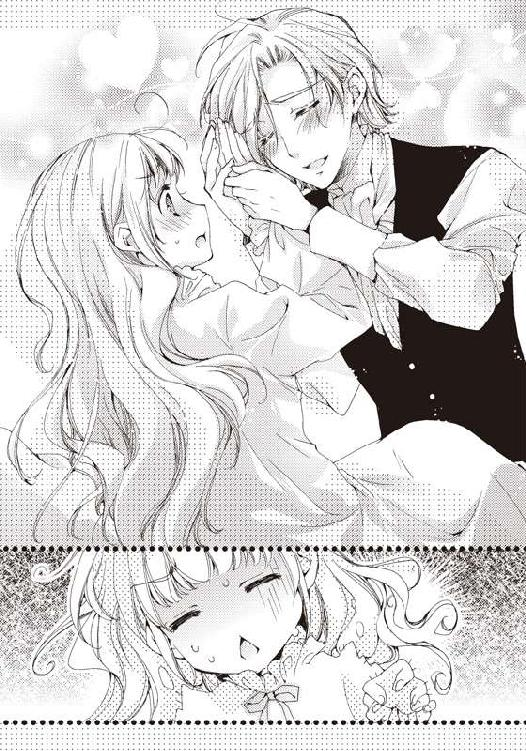
異常があるのは中身のようだ。
今度は額に当てたフローラの手を、セレスタンは両手で包んで愛しいもののように撫で始めた。身体中一斉に鳥肌が立つ。
「うぅっ！ やめてよ、何の冗談です、お兄様！」
「冗談ではない。愛する妹の指を愛でて何が悪い。俺以上にお前を愛している者がいるか？」
非難の目を向けても、兄は開き直るばかりだった。
これは本格的に変だ。じーっとセレスタンのいつもと違うところを探すも他におかしいところはない。いつも通りの整えたのにぼさぼさになってしまった頭だ。
「それは誘っているな！ 朝から熱烈なことだが、俺はいつでもお前の愛を受け止める準備ができている」
「お、お兄様!?」
何を思ったか、セレスタンがフローラをベッドに押し倒そうと乗ってくる。素早く彼女はベッドから転げ落ちると、入り口に駆け寄って兄の方を振り返った。
「......何かの冗談よね、お兄様？ そうよ、わたしがいつまでも起きないから意地悪をしているのでしょう？」
「ん？ 何を言っているんだ？ いつまででも寝ていて構わないぞ、俺の腕の中で二度寝するといい。ほら、おいでフローラ」
ベッドに横たわったセレスタンがポンポンとフローラのために開けたスペースを叩く。
──ああ、こんなのお兄様じゃない......二度寝を許してくれるはずなんてない。何がお兄様を変えてしまったの？
いつでも逃げられるようにドアノブを後ろ手で掴みながら、色々と原因を探した。
「はっ！ 昨日のことを知って、気が狂ってしまったとか!?」
「昨日～？ やっぱり何かあったのか、フローラ。話しなさい！ 公爵家の家長として、お前をもっとも愛する男として、聞かないわけにはいかない！」
驚きのあまり、声に出てしまったことにセレスタンが激しく言及する。
「い、いや、それは......別に......なんでもないの！」
兄の反応から見るに、どうやら昨日のエドゥアルドとの一連の出来事を知ったわけではなさそうだ。
「話しなさい。話さないとここから離れないぞ」
強引に誤魔化したせいで兄の奇行は止まらない。今度はフローラの枕を抱き締めると、くんくんと犬のように匂いを嗅ぎ始めた。
「......や、やめて！ お兄様、そんな気持ち悪いことしないで！」
「俺は気持ちいいから大丈夫だ......ふんふん」
「う、うう......わかった、わかったわ」
これ以上兄の変態っぷりを見るに堪えかねて、フローラは降参の声をあげた。
「その............キスしたわ！」
さすがに昨日の出来事全部を話すわけにはいかない。だから、キスの事実だけを兄に告げた。できるだけ、さらっとなんと言っているのか聞こえないようにして。
まあ、実際には舞踏会の日にキスはされてしまっているわけで、昨日はもっとすごいことをされてしまったのだけれど......。
「なんだと！ キス!? ぐおぉぉぉぉ！ 俺の可愛いフローラの唇を奪うとは──！」
セレスタンが頭を抱えると、低い呻き声とともに絶叫する。
「......してしまったことは仕方ない。なら、この兄にもしてくれ、それであいつとのキスのことは忘れてやる」
「な、なに言ってるのお兄様！ もう、悪ふざけはいい加減にして！」
「悪ふざけなのではない。兄妹でキスをして何がおかしい......ごふっ」
近くにあったソファのクッションをフローラがセレスタンに向けて素早く投げると、運悪くしゃべっていた顔面に激突する。その隙にフローラは自室から飛び出した。
「はぁ、何なの一体......」
前から多少変なところはあったものの、あそこまで変な行動を自分に兄が取ったことはなかった。
──お仕事で何かあったとか？ ......ま、まさか我が家が破産!?
「ステファン！ ステファンはいる？」
顔を青くすると、フローラはこの家の執事の名を呼んで寝間着のまま、屋敷の階段を走り降りた。
何事かとすぐに飛んできたオズフィールド家の執事に事情を聞き、フローラは自分の心配が的中しなかったことにほっと胸を撫で下ろした。
執事が嘘をついていたり、知らなかったということもありえるけれど、そもそもオズフィールド家は国内では五つの指に入るほどの広大な領地で林業や農業を営んでおり、両親・兄ともに、仕事に対しては堅実なタイプで傾くことなど考えられない。
「他の爵位ならともかく、公爵家が傾くわけがないわよね」
フローラは逃げ込んできた書庫のソファでひとりごちていた
自室から逃げ出したあとも、兄は必要以上にフローラへべたべたしてきたからだ。着替えを手伝おうとしてくるし、食事は自分の膝の上でしろと言う。常にセレスタンの視線を感じるので読書もままならなくて、書庫へと来たのだ。
「......とすると、一体なんなのかしら？ お兄様のあの気持ち悪い行動は？」
思い当たる節は......正直なところ色々あり過ぎて、わからない。エドゥアルドと出会ったあとも相変わらず、社交界にはあれこれと理由をつけて顔を出していないし、書庫にはよく籠る。
しかし、怒るならともかく、朝からキスを迫られるようなことをした覚えはない。自分に非がないとすると、原因は兄にあるのかもしれない............。
「はっ!? 兄はもしかして、ずっとわたしのことを!?」
山のように来るお付き合いの申し出を断って、いまだに恋人の一人もいないのはそのせいだったのかもしれない。
「ないない。実は兄とわたしの血が繋がっていなかったり、禁断の恋に落ちたりするのはお話の中だけよ」
すぐにフローラは自分の馬鹿な考えを、頭を振って、打ち消した
兄とは仲がいいのは事実だけれど、そんなことを考えたことも、雰囲気になったこともない。あからさまなことをされたのは今日が始めてだ。今朝、目覚めてしまったということも考えられるけれど、普通に考えれば、ありえない。
「............まあ、そのうち元に戻るわ。妖精に悪戯でもされたのよ」
今はなるべく兄に近づかないようにすればいい。
フローラは勝手にセレスタンの件を結論付けると、ソファに深く座り直し、テーブルへと手を伸ばす。そこにはいつもの日記があるはずだった。
「............？ あ、お兄様に......」
指が空気を掴んだところで、フローラは昨日の夜、セレスタンに日記を取り上げられたことに気がついた。
──エドとは上手くいっているし、無理に日記を見る必要はないわよね。
今の兄に近づくのは抵抗がある。特に心配なこともないので、明日また様子を見て取り返そう。
フローラが日記を諦めて、お気に入りの本に手を伸ばそうとしたところでトントンと一定のリズムで書庫の扉を叩く音が聞こえてきた。
「フローラ様、お手紙をお持ちいたしました」
メイドアルマの声だ。ソファから起き上がると扉を開けて彼女を出迎えた。
「私に！ 誰から？」
「もちろん、エドゥアルド様からです」
微笑みながら、アルマが差し出した手紙をフローラは受け取るとその場で封を解き、目を通す。いつもは長文で、お互いのことや妖精の話をするのだけれど、今回の手紙は短く一枚に収まっていた。
親愛なるフローラへ
久しぶりに一日時間が取れそうなので、九日後、出掛けませんか？
唯一ともいえる友人が屋敷でルーレットをしないかと誘ってくれたのです。
二人だけで、とはいきませんが、如何ですか？
お返事お待ちしております。
貴方のエドゥアルドより
「ルーレット？」
フローラは手紙を読み終え、思わず素っ頓狂な声を上げてしまった。
貴族たちが好んで競馬場に足を運んだり、自分の屋敷に親しい人を集め、ルーレットをするのは知っていたが、自分は舞踏会すら逃げ惑うので、賭け事などしたことがなかった。
ルールなど知らないし、お金を掛けて、他人とゲームをするということに、少し罪悪感を感じる。オズフィールド家は代々こういったことに潔癖で、それはフローラにも伝わっていたからだった。
兄が知ったら、またエドゥアルドの評判を下げるだけかもしれない。
──兄には、内緒にしないと。
手紙にあった最後の「貴方の」という文字を指でなぞる。
エドゥアルドと一緒ならば、少し興味はあるし、楽しいはずだ。胸が少し熱くなる。しかし、同時にフローラの胸に不安がよぎっていた。
このデートはまだフローラが読んだ日記に書かれていない未来のことだからだ。上手くいくのか、何かトラブルがないのか、兄に叱られないのか、全くわからない。
──どうしよう。どうお返事したらいいの？
一度心配し始めると、胸の中を蝕む病のように不安が渦巻き始めた。
日記を読めば、そこに書かれていることは避けられないものの、心の準備ができる。余裕ができる。しかし、逆に日記が読んでいない部分の未来は不安が倍増し、臆病になっている自分がいた。
堪らなく日記を読みたくなってくる。でも、今手元にはない。
「お返事は如何いたしますか？」
フローラの様子を窺っていたアルマが、ゆっくり待ってから口を開いた。
代筆をお願いすることも可能だけれど、エドゥアルドの手紙には頼んだことがないことを彼女は当然知っている。つまりは、いつフローラの返事の手紙を受け取りにくればいいのかと聞いていた。
「えっと......しばらく考えてからするわ」
「そう、ですか？ 畏まりました。失礼致します」
いつもならフローラは手紙を受け取ると同時に返事を書き始めるので、アルマは少し不思議そうな顔をしたものの、深々と頭を下げて書庫を出て行こうとする。
「あ！ 今日、お兄様は屋敷にいるの？」
「はい、今日は一日お部屋で仕事をされるとのことです」
「ありがとう」
──エドへの返事の前にまずは取り返さないと、日記を！
兄と対峙する気合を入れると、フローラは籠っていた書庫を出た。
セレスタンの部屋の前で息を吸い込むと、フローラはコツコツと二回扉を叩く。すぐに中から「誰だ？」といつもの兄の声が聞こえてきた。
「お兄様、わたしです。少しいいですか？」
もしかして、おかしかったのは今朝だけかもしれないという期待を込めて扉を開けるも、すぐにその期待は打ち崩された。
「フローラ！ どうかしたのか？ 兄にキスしたくなったか？」
「ち、違います！ しません！」
机に仕事の書類を広げて言うこととは思えない言葉を、兄がいやらしい笑みを浮かべながら告げてくる。また、ぞくっと悪寒が背中に走った。
「そうか？ なら、何の用だ？ お前の愛する兄は忙しいんだ」
ねちねちとまたキスをせがまれると思っていたけれど、拍子抜けするぐらいにセレスタンはすっと視線を書類へと戻した。フローラへの態度を除けば、兄はいつもと変わらないように見える。
「昨日、持っていった日記を返して欲しくて、お兄様」
「駄目だ」
間を置くことなく、視線をフローラに戻すことなくセレスタンが即答する。
「どうして!? 昨日はちゃんと返してくれると言ったじゃない」
「これはお前には有害な本だ。俺が預かっておく」
机の引き出しからおもむろにセレスタンがあの日記を取り出すと、彼女に見せつけながら言った。
「と、とにかく、返して！」
「駄目だな。お前には必要ないものだ」
「必要なの！」
必死に日記へとフローラが手を伸ばすと、遠ざけるようにセレスタンの腕が避ける。思わず、机に身を乗り出してしまった。兄の顔が胸に近づく。
「どうせ、あの天然王子とのことが知りたいだけだろう」
「どうしてそれを!? ひゃっ！」
知るはずがない日記の秘密を兄が口にしたことに唖然としていたフローラへ、突然耳元に息が吹きかけられ、びくっとその場を飛び退いた。
「な、なにをするのよ！ お兄様、今朝からおかしいわよ！」
「おかしくなどない。お前はこの日記が欲しいのだろ？」
まるでフローラの焦りを知っているかのように、セレスタンが嫌な笑みを浮かべる。
「返してお願い......」
悲痛な叫びのように、顔を俯かせ、彼女が小さな声で呟く。その顔に一瞬、兄がたじろいだように見えた。
「............そこまで欲しいなら返してやる」
「本当!? お兄様！」
「だが、今は返せない。返して欲しければ、今夜、俺の部屋に来るんだ」
「夜に？ 一体何を？」
〝夜〟と言われ、嫌な予感だけがする。
「昔のようにベッドで一緒に寝よう。幼い頃、お前はよく雷が怖いと言って俺の腕の中で寝ていただろう？」
確かにそれは事実だけれど、大きくなった兄弟がすることではないのは当然フローラも気づいた。今の兄のベッドに入れば、何をされるかわからない。しかし、言う通りにしないと日記は返ってこない。
彼女は返事をすることができなかった。
「俺は別に来なくても構わない。この日記を返さないだけだ」
「いや............」
フローラの迷いを見抜いているかのように、セレスタンが突き放す。思わず彼女は短く反応してしまった。
「嫌なら、夜中に俺の部屋へ来るんだな。枕元にこの日記は置いておく。さあ、兄は仕事で忙しい、出て行ってくれ」
それだけ言うと、セレスタンはフローラを部屋から追い出した。普段の兄ならば、絶対にしないことだ。彼の態度と、日記を返してもらうために突き付けられた条件に、フローラは廊下で立ち尽くしてしまった。
窓の外から室内を照らす光が、黄金の太陽から白銀色の月の薄い光に変わる頃、フローラは屋敷の廊下を一人寝間着姿で歩いていた。
セレスタンの部屋に行くことを決めたのだ。
日記をどうしても取り返したかった。でも、何も考えずに兄の部屋に行くほど不用心ではなかった。セレスタンや使用人たちもがぐっすりと寝静まる頃を見計らって、燭台を手に自分の部屋から出てきたのだ。
──お兄様は枕元に日記を置いておくと言っていた。だったら、寝ている間にこっそり部屋に入って取ってしまえばいい。
必死に眠い目を擦りながら、兄の部屋を目指す。屋敷の二階、フローラの部屋とは反対側に位置したその場所には真夜中の暗さの中でもすぐに辿りついた。
──寝ていて、お兄様。
明かりが部屋の中から漏れていないことを確認すると、自分の手に持った燭台の火を消して、祈りながらゆっくりと扉を開ける。カチっという鍵が外れる小さな音だけでも、フローラはビクっと身体を震わせた。
「............」
しかし、中から人が動く様子はない。彼女は思い切って、開いたドアの隙間から部屋に飛び込むと、開けた時と同じようにゆっくりと扉を閉めた。
「すぅ............ふぅ......」
──よかった、寝てるみたい。
フローラの思惑通り、セレスタンはベッドの上で規則正しい寝息を立てていた。顔を天井に向け、行儀よく寝ている。足音で起こしてしまわないように靴を脱ぐと、そっと兄のベッドの方へ足を忍ばせた。
──あった！
確かに昼間言ったように、セレスタンの枕元にはしっかりと日記が置かれていた。起こさない様にそっと、ゆっくりと兄の顔と並んで置かれた日記へと手を伸ばす。
「............ぐがっ！」
「ひっ............」
日記に指が触れるか、触れないかというところで、セレスタンが短いいびきを上げる。心臓が止まるぐらいびっくりして、短く声を発してしまったフローラは慌てて、自分の口を手で塞いで、兄の様子を窺った。
「............む......んん......」
──よかった、起きたわけじゃないみたい。
偶然、絶妙なタイミングで声を出しただけのようだ。しかし、先ほどの動きで、セレスタンの手が日記の上に添えられてしまっていた。
──そっと引き抜けば大丈夫よ。
気を取り直すと、フローラは再び手を日記に伸ばした。
今度は触るところまで邪魔されることなくできる。続いて、ゆっくりと兄の手の下に置かれた日記を掴み、引き抜く。
「............ん......んぅ......」
「ぁっ......」
あと少し、というところで何かを感じ取ってしまったのか、セレスタンが寝返りを打つ。日記を掴んでフローラとは逆方向を向いてしまった。
仕方なく、そのまま兄の上に覆い被さるようにして腕を伸ばす。
──やった！
やっとのことで日記を掴んで持ち上げようとした時だった。
「はは、いい光景だな。だが、その体勢では辛いだろう。楽にしてあげよう」
「えっ!? お兄様!? あうっ......」
寝ていたはずのセレスタンの口が動き、がばっとフローラの身体を抱き締めた。
「いつから起きて......や、やめて、離して！ う、ぅぅ......ぁっ......」
非難の声を上げても当然兄は止めなかった。胸に顔を埋めるようにして、ぎゅっと抱き締める。力負けして、彼の上へと体重を乗せてしまう。日記は手元から離れ、枕元に再び落ちた。
「う、ぐっ......気持ちいいが、これだと俺が窒息してしまうだろう。お前はここだ」
胸から顔に乗ってしまったフローラの身体を軽々と退けると、そのまま素早くシーツの中へと引き込む。バランスを完全に崩していた彼女にはどうするもできなかった。
「さあ、これで約束通りだな」
背中にははっきりと兄の腕の感触。逃げ出さないようにと、脚を絡められていた。
薄い肌着を通して、肌の感触をはっきりと感じる。
──はっ、駄目！ 逃げないと！
必死に身体をくねらせるも、肌を擦り合わせるだけにしかならなかった。がっしりと掴まれた手と足は離れない。
「お、お兄様！ これ以上戯れは止めてください！」
「遊びなのではない。言っただろう、ベッドで一緒に寝ると」
「うっ............痛......い......」
耳元で囁かれた上に、抱き締めている腕が痛いほどに締まる。
「お前を抱き締められなくなって、どのぐらい経つだろう。随分柔らかくて、女らしい身体になったな。ああ、いい感触だ」
とても兄とは思えないような言葉が頭の方から聞こえてくる。
抱き締める力強さと、囁くような低い言葉は兄弟ではなく、男のものだ。
「嫌っ......お兄様、止めて......」
「こんなに甘美なことを止められるか。大丈夫だ、誰にもわかりはしない。誰に聞かれることもない。だからお前も深夜を選んだのだろう」
「ちがっ......ひゃっ！」
フローラを締め付けていた一方の手が解かれ、彼女の少し膨らんだ胸を乱暴にぎゅっと掴んだ。柔らかい部分とはいえ、強く握り締められ、小さく悲鳴を上げる。
「エドゥアルドにされたことは全部俺にもしてもらう！」
「......えっ!? エドにもまだ──ぁ、ぁぁっ、痛い！」
反論する暇を与えず、捻るように胸を引っ張られ、揉まれる。淫らに忙しなくセレスタンの指先に翻弄され、吐息を漏らすしかできなかった。
──お兄様に胸を握り締められるなんて......どうして......やめて！
声にならない悲鳴が胸の中で響く。身体を捩って逃れようにもシーツの中に捕らわれていて、抜け出せない。加えて、フローラの身体に回されたセレスタンの腕と脚はまだきつく身体を締め付けている。
「......ん......は......ぁ......」
声が漏れる。しかし、エドゥアルドに湖畔でされたこととは違っていた。どんなにセレスタンに肌を触られても、熱くはならないし、蕩けるような感覚にはならない。逆に嫌悪感で身体を固くするだけだ。
「次は唇だ」
短くそう告げると今度は兄の両手が頬を掴み、上から顔を近づけてきた。
──いやっ！ 助けて！ エド！
がっしりと掴まれているので、顔を振って逃れようとすることもできず、フローラは兄の口付けを受け入れるしかなかった。
「ん────は......あ、あぁ......」
口付けされた隙間から、苦しくて息が漏れる。
兄の唇は驚くほどに熱い。しかし、逆にフローラの唇はその熱さに反応することなく、ただ、肌と肌を重ね合わせているだけの感触で、違和感しかなかった。
──変......エドの時とはまるで違う。
あの時は気を失っていて、助けてくれた唇だったとはいえ、温かみを感じた。安心できるような、自然で、心の奥がぽっと熱を持つような──そんな口付けだった。それと比べると、今の兄とのキスは全くの別ものだ。
「や、めて！ お兄様......あぐっ──」
「い、痛たたたたた！」
必死に閉じていた唇に無理やり入ろうとしてきたセレスタンの舌を、フローラは思い切り噛んだ。すぐに身体への拘束が緩む。その隙を逃さず、枕元に落ちた日記を掴む。
「何をするんだ、フローラ！ 俺の舌が抜けたらどうする？」
「お兄様、ごめんなさい......えいっ！」
舌を出して、噛まれた箇所を冷やそうとするセレスタンに向けて、無我夢中で掴んだ日記を縦に振る。
「うっ！」
運がいいのか、悪いのか。ちょうど日記の背がセレスタンの後頭部に当たり、ゴンという鈍い音がした。
「......はっ！ お兄様？」
ベッドへ顔を埋めた兄が動かなくなってからしばらく経って、フローラはやっと彼が気絶していることに気づいた。
「息はあるわ、よかった......ご、ごめんなさい、お兄様」
ピクリとも動かないものの、命に別状がないことを示すように、脈も息もきちんと確認できる。フローラはベッドへとうつ伏せに倒れるセレスタンにもう一度だけ謝ると、日記を胸に抱いて、急いで部屋を出た。
「はぁはぁ......取り返せた......早く読まなきゃ」
日記を取り返したフローラは、再び燭台を手に屋敷の廊下を速足で歩く。目的地は書庫だ。あそこなら鍵を掛ければ、誰にも邪魔されることなく読むことができる。
やがて、雨晒しの回廊を走って渡るとその勢いのまま、書庫の中へと飛び込んだ。
「ふぅ......はぁ......ここまでくれば、大丈夫」
少し興奮して震える手で鍵を閉めると、そのまま扉を背に床へと座り込む。兄が追ってきて、また日記を取り上げられ、抱き締められてしまうのではないかと、鍵を閉めるまで気が気ではなかった。
──さあ、日記を読まないと。
ソファに座る時間も、呼吸を整える時間も惜しくて、フローラは胸に抱いた日記を太腿に置くと、ページをめくり始めた。
「あった！ ここから先......」
すぐに昨日読もうとした箇所を見つけ、無言でそこに書かれた文字を目で追った。
〝逢瀬は恋のルーレット〟
〝無敵の二人が愛した数字は二十二〟
〝一夜の財は、欲張らない貴方へ瑠璃のプレゼント〟
〝デザートはやっぱりキスキスキス〟
「......ふぅ」
悪いことが書かれていないので、フローラはひとまずほっとしてさらに先へと目を走らせる。一日分しか読まないという自分で作ったルールを無視しても、読みたいという欲求は止まらなかった。
はやる気持ちでページを捲ると、別の節だろう次のデートを暗示するサラサラ綴られた文字が目に飛び込んでくる。
一行目を読み、フローラは顔が真っ赤になり固まった。
〝舞踏会は大胆な蜜の味。貴方は彼に雄々しく深く貫かれて甘い声が月へ響く〟
「な、なっ......なっ!?」
貫かれて......雄々しく......まさに、あの行為......!?
一行目は、二度目のエドゥアルドとの行為を示唆することがはっきりと書かれていて、一度目の湖でのことを鮮明に思い出してしまう。
あの時はびっくりして、身動き取れなくて、でもエドゥアルドのキスが熱っぽくて......痛くて......でも、彼の熱さを体内に感じて......。
オロオロしながらも、日記の続きへと目をやる。
〝人には言えない場所で、熱くなって乱れてしまうでしょう〟
〝熱烈にお互いを求め、燃え上がる身体は滾りまくり〟
〝もう、夢中。乱れまくり〟
「み、乱れまくり......っ！」
フローラの声が裏返り、思わず本を取り落とした。
とてつもないことが書かれている気がする。ややあって、誰が見ているわけでもないのに、彼女は平静を装い、本を拾い上げた
「し......書物は誇張して書かれるものよ」
ドキドキしながら乱れまくりと書かれた次の行へ目をやると、続きはなかった。
どうやってその状態から脱したか気になるが、特に悲運な予言ではない。
ほっとしつつ、フローラはエドのことを思った。
──今度は痛くない？
──どんな風に彼は約束通り優しくしてくれる？
「な、なに考えてるのよ、わたし！」
変なことを想像して、熱くなった頬を叩くとそのままひんやりとした掌で冷ます。
──このままエドと付き合い続けたら、どうなるのかしら？ わたし？
頭が冷えてくると、ふとした疑問が湧いてくる。
もう彼からプロポーズはされているのだから、フローラが受け入れ、兄のセレスタンと両親が了承すれば、晴れて結婚することになる。
特に障害は......兄だ。今の兄が首を縦に振るとは到底思えない。
──え？ ええ!? どうなるの？
途端に、自分の将来が気になり始める。
いつか、上手く兄を説得して婚約を了承してもらえるのだろうか？
それともどこかで読んだ話のように外国へと逃げて、二人だけで幸せになるのだろうか。
「............日記」
ふと、膝に載せた日記に視線が行く。
物語があれば、そこには結末が当然あるはずだ。
──書いてあるわけないわよね？
パラパラとフローラはさらにページをめくった。日記の内容が追加される満月の日は数日後で、すぐにページが白紙へと変わっていく。
「当然よね......次の満月の日までしか書かれていないのだから」
独り言を呟くと、書庫の天井を見上げる。ちょうど、月は空高く上り、一番高いところにある窓から柔らかな光がフローラに降り注いでいた。
「そんな先までわかったら......わたし......」
どうするのだろう？ 安心する？ 不安になる？
もう真夜中というよりも、夜明けに近い時間だと気づいたフローラが再び日記に視線を戻した時だった。
「え......!?」
開かれていたのは、日記の最後のページ。
やけに白いページの中央には、こう書かれていた。
〝二人は別々の道を行くことになりました〟
ただ、その一文。しかし、その一行にフローラは心を激しく掻き乱された。
「なっ......!?」
──どうして？ 満月まで、先のことは書かれていないはずなのに......それよりも別々の道ってなに？ 結局、幸せになれないってこと？」
疑問が頭の中に次々と浮かんでくるけれど、それに答える者はいなかった。ただ、日記を支える手が震える。
優しくて、素敵で、妖精のようなエドゥアルド。
彼との未来がないと日記に書かれたことにショックを受ける。何となく自分と彼は、上手く行くものだとばかり思っていた。運命の出会いようにまで感じていた。
やっぱり、豹変してしまった兄のセレスタンが障害になるのだろうか？
いや、違う気がする。兄ならば、両親を味方にすれば何とか説得できるはずだ。だとしたら、一体自分たちに何が......。
「他に、何か！」
どうして別々の道を歩むことになるのか、それが知りたくて、無駄だとわかっていても、最後のページから注意深く遡って何か書かれていないか確認する。しかし、あの最後の一文以外、書かれた言葉はなかった。
「どうして？ どうして、結末しか書かれていないの!?」
明け方近いというのに、つい大声を上げてしまう。書庫は離れに建っているので、誰かに聞かれるようなことはないが、反響していく声に空しさが増していった。
「これは違う......わたしのことじゃない......今まで偶然だったのよ！」
追いつめられたフローラは未来ではなく、日記を疑い始めた。疑うしかなかった。
「こ、こんなものなければいいのよ！ ............あ！」
やけになって、日記を振りあげる。一瞬戸惑うも、手を離してしまった。
弧を描き、日記が書庫の奥の闇へと消えていく。不思議なことに落ちた音もすることなく、辺りは静けさを保ったままだった。
フローラに残ったのは、何か、とてつもなく悪いことをしてしまったという罪悪感だけ。今まで、本を落とすことはあっても投げるようなことはしたことがない。
「ごめんなさい......」
何に謝るでもなく、彼女は呟くと書庫をあとにした。本に悪い気はしていても、今はあの日記を見たくもなかった。
それから数日、フローラは日記どころか、書庫にも近づかなかった。日記の示した未来が怖かったからかもしれない。
「はぁ......」
フローラは自室でぼんやりと窓の外を眺めていた。
エドゥアルドの遊びの誘いに返事は出したものの、日記に書かれた結末が頭に浮かび、どうしても気が晴れない。
ただ、手紙の返事はまだなのかと、景色を眺めていた。
「フローラ様、元気ないですね？」
いつの間にかメイドのティルダが部屋に入ってきて、心配そうにフローラを見つめていた。後ろには紅茶の準備をするアルマの姿もある。
「お手紙......ですか？」
「え、ええ......今日も来てないわよね？」
ティルダの答えに頷く。不思議なことにあれから一度もエドゥアルドから返事が帰ってくることはなかった。返事が来ないことなど今までなかったので、見てしまった日記の結末とともに一層、フローラの不安を掻き立てていた。
「......あの！ フローラ様！」
「ティルダ、駄目よ！」
思いつめたように下を向いていたティルダが、突然顔を上げて何かを言おうとする。しかし、なぜかそれをアルマが止めた。
顔を見たティルダに、アルマが無言で首を振る。
「あっ！」
メイドたちの不審な行動に疑問を持とうとした時、フローラの視界の端に何か動くものを捉えた。窓の奥、屋敷の入り口に馬車が止まり、見知った顔の男性が降りてきた。
「エド！」
しかし、その顔はいつものような明るさがない。今のフローラと同じように表情を曇らせているのが、二階の彼女の部屋からでもわかった。
「わたしが出迎える」
「は、はい！ 畏まりました」
メイドたちを従え、玄関へと向かう。今日は兄が仕事で屋敷を留守にしているので、来客を出迎えるのはフローラの役目だ。といっても、ほとんど客など来ないのだけれど。
階段を下りると、すでに執事のステファンがエドゥアルドに対応していた。
その顔を見るだけで、胸が温かくなる。ここ数日、手紙ですらやり取りできていなかったので、逢いたかったという気持ちが自分でも驚くほどに大きくなっていた。
「エド！」
「フローラ！」
構わず声を掛けて、駆け寄るとエドゥアルドの表情がぱっと明るくなっていく。
「大丈夫ですか？ 病気や怪我は？」
「えっ？ 何がです？ エドゥアルド様こそ突然どうされたんです？」
「あっ！ 突然の訪問、申し訳ありません」
「いえ、それはいいんです。会い......たかったですから」
素直な気持ちが口から勝手に出てしまう。それほどにエドゥアルドに会えるのが嬉しい。
「私もです、フローラ」
思わず、見つめ合ってしまう。エドゥアルドの綺麗で優しい瞳がじっとフローラを見ていた。胸が大きく高鳴り始める。兄では起こらなかった身体の変化だ。
「はっ！ そ、それで、今日は何の御用でいらしたんですか？」
周りに執事やメイドたちがいることに気づき、視線を逸らすと顔を赤らめながらフローラは聞いた。同じようにエドゥアルドも頬が赤い。
「その......手紙の返事が来ないので心配してきたのです。ご病気や怪我をされているのではないかと」
「えっ!? 特に身体は大丈夫ですけど......」
「そうですか！ よかった......何度手紙を書いても、どれだけ待っても返事が来ないので、何か重病なのかと思っていました。本当によかった」
とても心配してくれていたのだろう。嬉しそうにフローラの手を取ると握り締めてくる。恥ずかしいけれど、少しだけ自分も握り返した。
しかし、それよりも気になるのは──。
「返事が届いていません？ しかも何度も送ってくださったんですか？」
確かに日記を取り戻した次の日、返事を書いて使用人に渡したはずだ、承諾の内容を書いた手紙を。そして、あれ以来、エドゥアルドから手紙が来たことはない。
「ええ、私のところには届いていませんし、返事が来なくなってから三回ほど手紙を送ったのですが......」
「三回も!? ごめんなさい。確かに送ったはずなのに......」
エドゥアルドが嘘をついているとはとても思えないので、何らかの理由で手紙が届かなかったのだろう。しかし、一体誰が、どんな理由で......。
「でも、貴方が無事でよかった。元気でしたら、明日、いかがですか？ お出掛けを」
つい、俯いて沈んでしまったフローラを気遣うように、エドゥアルドが声を掛けた。
「あっ！ 手紙に書いてあった......ルーレットのお返事」
言われてみれば、最後の手紙にあった日付はもう明日に迫っていた。返事は届かなかった手紙にも書いたように、当然承諾だ。
「もちろん、行きます！」
「ふふ、よかった......では、明日迎えにきますね。手紙の件はあまり気にしないでください。次からは間違いのないようにしますから」
「間違いの......ない？」
エドゥアルドが何かもったいぶった言い方をしたので、気に掛かってフローラは繰り返した。
「それは後日お楽しみに。では、今日はこれで失礼します、ミス・フローラ」
綺麗なお辞儀をすると謎の言葉を残したまま、エドゥアルドは屋敷を去っていった。
もっと長く話していたかったけれど、心配して会いに来てくれた上に、すぐにまた明日会えると思うと寂しい気持ちよりも、嬉しさが勝った。
胸に手を置いて、彼が触れていた場所をなぞる。
──どうしたんだろう、わたし。今、とても幸せかも。でも......これも......。
一瞬でも沈んでいたことを忘れさせてくれたエドゥアルドに感謝しつつ、思うのはやはり彼との別れを示唆する日記の文面だ。そして、届いていなかったお互いの手紙。
「一体......誰が......」
とっくに見えなくなったエドゥアルドの馬車を玄関から眺めながら、一人呟く。すると、メイドのティルダがすっとフローラの前に進み出た。
「フローラ様！」
「どうしたの、ティルダ？」
思いつめたような顔をしているように見える。すぐにエドゥアルドが来る直前の、何かを言おうとしてアルマに止められたことを思い出す。しかし、今度はアルマが邪魔をすることはしなかった。
「実は......あたし、見てしまいました。だんな様が手紙を燃やすのを」
「お兄様が!? わたしの手紙を？」
ティルダの告白に、フローラは驚きの声を上げた。言われてみれば、エドゥアルドとの仲を一番邪魔しそうなのは兄のセレスタンだけれど、あれほど優しかった兄がそこまでするとはとても思えなかった。
「見間違いだろうと、何度も話したのですけど......ティルダがどうしても、フローラ様に伝えたいと言いまして」
控えていたアルマが付け加える。ティルダはアルマを姉のように慕っていたので当然、彼女には相談したのだろう。そして、彼女は忠実で、仕事熱心な使用人なので、主人のことを悪く言いたくなかったのもわかる。
「最近なんだか、だんな様の様子がおかしい気がします。度が過ぎるほど、フローラ様を溺愛しているというか......それは前からなんですけど、雰囲気が怪しいというか......」
ティルダも上手く言い表せないようだ。しかし、はっきりと兄の変化に気づいていた。
「アルマもおかしいと思う？」
フローラはもう一人のメイドにも確認した。アルマなら、客観的に兄の変化を判断できると思ったからだ。
「はい、信じたくありませんが......七日ほど前から、フローラ様を夜お叱りになった翌日から少し変わられた気がします」
「叱られた日......」
それは、日記を兄に取り上げられた日だ。確かにその翌朝、いきなりキスして起こそうとしてきたんだった。あれから確かにセレスタンの態度がおかしくなっていった気がする。
──お兄様の身に一体何が？
考えられるのは日記の中身を見たこと。しかし、それだけで、果たしてあそこまで自分への態度が豹変するだろうか。きっかけにはなったかもしれないけれど、原因がそれだけとは思えない。
「フローラ様、冷えてしまいますので、部屋に戻りましょう。紅茶を淹れ直します」
ずっと玄関の外に立っていたフローラを気遣い、アルマが控え目に声を掛けてくる。
「そうだ！ フローラ様、明日出掛けるドレスを選びましょうよ！」
さらに少しわざとらしいけれど、明るく振る舞うティルダに引っ張られる。
その後、二人のメイドに、フローラは着せ替え人形のように明日来ていくドレスをあれこれと選ばされていた。
翌日、約束通りフローラはエドゥアルドとともにウイスター侯爵家の屋敷にいた。
ヒアシンスブルーのドレスは、釣鐘型で手首の部分が名の通り、花開くようにカッティングされ、薄い水色の細かなレースで縁取られている。
ルーレットと聞いて、暗くて危ない雰囲気の場所だったらとフローラが身構えたのが嘘のように、フロアには煌々と光が灯されて、招待客のドレスもシャンパン片手に美しく花開いていた。
晩餐会と違うことと言えば、大きなテーブルにベッドエリアと呼ばれる数字を書いたボードがあり、その横には同じく番号のある円形の大きなルーレットが鎮座している。
ルーレットチップをベッドエリアに置き、次に出るルーレットの数字や色を当てるゲームだった。
カラン────コロロ......。
心地良い音が、間をおいて響き、ボールが止まった音でフロアが一斉に盛り上がる。
無作為に出る運命の数字。賭けかたは色々ある様子だったが、フローラとエドゥアルドは、難しい賭けかたや一つの数字に絞ったりせず、付き合い程度に黒か赤という、大きな括りにチップを賭けていた。
「難しいけれど、楽しいゲームですね」
「ええ、どこに止まるかワクワクしますわ」
場の雰囲気は、殺伐というより、社交的な賑わいに近い。
ウイスター侯爵家が由緒正しい家柄で、招待客を厳選しているせいもあったが、フローラの気分は、社交嫌いよりも目新しい場所へ来て盛り上がってきた気分の方が強かった。
「やあ、楽しんで頂けていますか？」
「は、はい......！」
転がる玉にすっかり魅入られていたフローラは、声を掛けられ慌てて返事をした。
見ると、入り口で挨拶をしたウイスター家の次男デリックが、心から歓迎するような眼差しを向けてくる。
そして、丁寧にフローラの機嫌を取ったあと、エドゥアルドと談笑を始める。
今まで兄が挨拶している横で立っているのは苦痛であったフローラだが、エドゥアルドの横に立ち、こうして社交的な話題が飛び交う様子は、退屈でも嫌でもない。
くすぐったいような、不思議な気持ちだった。
ウイスター家は古くから王族に仕えてきた貴族で、公私ともに交流が深い。エドゥアルドと同じ歳の男子がいたことから、病気で臥せる前から付き合いのあった数少ない人物の一人だった。
エドゥアルドに友人だと紹介されたデリックは、とても知的で、思慮深い印象を受ける男の人で、気軽にフローラにも話し掛けてくれた。
全快した友人を祝うため、少しハメを外せと用意してくれた場らしい。フローラは王子の恋人のように紹介され、恥ずかしながらもエドゥアルドに寄り添いながらルーレットを見つめていた。
「赤の二」
そんな中で、ディーラーのルーレットが止まった場所を告げる声が響く。
「すごい、エド......三回連続赤を当てたわ」
「エドゥアルドに乗っかればよかったかな、可愛い恋人まで見つけてツキまくっているな」
ぼやくようにデリックが茶化してくる。
「私には幸運の女神がついていますからね」
「え、ええ......っ」
さらりとエドゥアルドに微笑まれて、フローラは真っ赤になった。
「ははっ、言うじゃないか。次は幸運の女神は何番に微笑むんだろうな？ 教えてくれますか、レディ・フローラ？」
「は、はぁ......」
突然問われて、フローラはふと日記を思い出した。
〝無敵の二人が愛した数字は二十二〟
「二十二......」
気づけば、ぽつりと言葉が口から零れていて、恭しくデリックがフローラの手からチップを受け取り二十二番へ置く。
「えっ？ デリック様が賭けるのでは......？」
戸惑っているうちにディーラーがルーレットを回し始める。
フローラの胸がドキンと高鳴った。
──まさか!?
玉が転がる音が、緊張感を煽る。コロコロと幾度も回りスピードを落としたボールが二十二番を力なく通り過ぎていく。
安堵したような、がっかりしたような気分でフローラの肩の力が抜けたその時。
カツン──と、音がしてルーレットの窪みに弾かれてボールが逆回転する。
よろよろと玉が吸い込まれるようにはまった先は────。
「赤の二十二」
「えええ───っ!?」
フローラは驚きの声をあげるしかなかった。
常に気遣ってくれるエドゥアルドと、もてなし上手なデリックにリードされるようにして楽しんだルーレットは、兄と日記のことで沈んでいたフローラの気持ちを少し和らげてくれた。
しかし、ふとした時に思い出してしまう。
こんな楽しい時間もいつか終わってしまうかもしれない。
〝二人は別々の道を行く〟という言葉が警告にように頭の中に浮かんでは消えていく。どうしても、心からエドゥアルドとの楽しい一時を心から楽しむことができなかった。
「楽しかったですが、慣れないことだったので疲れてしまいましたね」
ルーレットが終わり、夜食を取るためのフロアでぼんやりと壁際に置かれた椅子に座っているフローラの元へ、エドゥアルドがふんわりとした笑顔を浮かべてやってくると、隣に腰掛けた。手には例の如く、大量の料理を皿に乗せている。
「ふふっ、エドゥアルド様は栄養補給ですか？」
「頭を使ったのでつい......一緒に食べませんか？」
「遠慮しておきます。エドの食べ物を取ったら、また唇を食べられてしまいます」
最初に出会った時のことを思い出し、少し意地悪を言ってみる。
「大丈夫です。貴方のキスは格別のご馳走ですから、別腹です」
「だ、駄目ですよ！ 今はデリック様もいますから」
彼が自分の唇を見ていた。さっとフローラは掌で唇を隠した。
「そうですか、残念です。では、まずはこれを平らげてからにしますね」
冗談とも、本気とも思える言葉を口にすると、エドゥアルドが食事に手をつけ始めた。
何回見ても、圧巻の食べっぷりだ。ぱくぱくと止まることなく、フォークを口へと運ぶ。ほっそりとした身体のどこへ行くのだろうと本当に疑問に思ってしまう。
いつもならば、同じように食べるフローラだけれど、今日は初めての空気を吸ってお腹いっぱいだった。ぎちぎちにコルセットをメイドたちに絞められたということもある。
「ネックレス、とてもお似合いですよ」
食事の合間を縫って、エドゥアルドがフローラの首につけた綺麗に輝く首飾りを褒めた。
結局、最後の一発逆転でルーレットの掛け金を総取りしてしまったフローラはさすがに申し訳なく思い、辞退するとデリックからお金ではなく豪華な装飾品をもらうことになってしまった。
重厚な造りの瑠璃で彩られた首飾り。
〝一夜の財は、欲張らない貴方へ瑠璃のプレゼント〟
日記通りの贈り物であり、想像していたよりも、あまりに宝石が大きく高価そうなので遠慮したのだけれど、二人の結婚式でつけてくれと、言われてしまっては断ることができなくなってしまった。
「そうですか？ 兄にはよくお前には大人の魅力が足りないと言われているので......」
「いいえ。貴方には貴方の魅力があります。私が証人です」
「だ、駄目ですよ。キスは！」
じっと見つめている先がまた自分の唇だとわかり、フローラは再び彼の唇との間を手で遮ると、釘を刺した。
「ふふふ......少しは元気が出ましたか？」
ふっとエドゥアルドが尋ねる。落ち込んでいるのに気づいていたようだ。
事情を聞いたり、わざと明るく振る舞ったりせずに、そっと隣にいてくれるのが彼らしい優しさだ。胸がほんわりと温かくなる。
「はい......少し、ですけれど......」
本当であるならば、エドゥアルドに悩んでいることをすべて打ち明けたかった。打ち明けて、二人で解決していきたい。しかし、それは怖くて、できない。
まず、日記のことを信じてもらえるかわからない。書庫で偶然見つけた日記のような本に名前を書いた途端、書かれていたことが自分に起こるようになった──なんて誰が信じるだろう。
しかし、フローラが恐れているのは日記のことを信じてくれた時だ。内容はほとんどがエドゥアルドとのことについてだ。それを見たら、二人の恋が日記に無理やりさせられたものだと思うかもしれない。自分の意志以外のものが働いていたと考え、急に冷めてしまうかもしれない。
書庫に籠ってばかりで、社交界が嫌いなフローラが王子であるエドゥアルドと結ばれるなんてことは考えられない。偶然過ぎる出会いと出来過ぎなぐらいに急接近した関係が、さらにフローラを悩ませていた。
そして、それぐらいにもうフローラはエドゥアルドのことを想っていた。この笑顔を隣で見られなくなる日が来ると思うと、胸が締め付けられたように痛い。
「フローラ！ やっぱりキス、させてください」
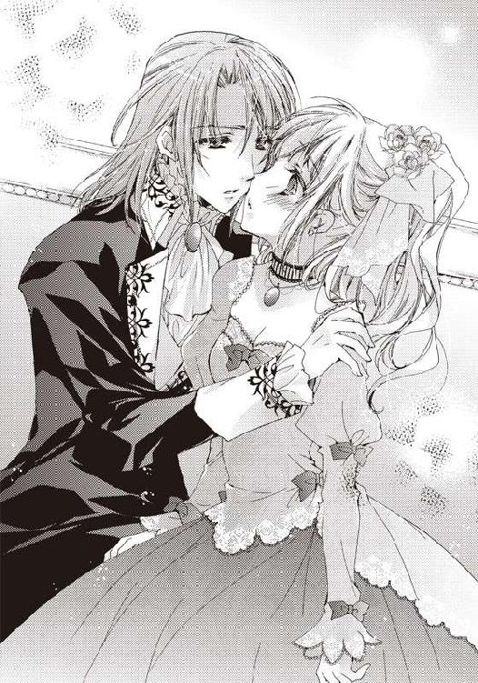
「えっ......ええっ!? ぁっ、んぅ──」
唇に柔らかな感触を感じたと思ったら、エドゥアルドの顔が目の前にあった。慌てて目を瞑る。溺れた時の息を吹き込まれたことを除けば、二度目のキスだ。
一度目のキスは不意打ちで、鳥が啄むような口付けだった。しかし、今のキスは全然違った。唇の感触をお互い感じ合うような、口と口を合わせるキス。触れている部分はほんの少しなのに、頭が蕩けてしまうかのような熱さを感じる。そして、何よりも彼の今、考えていることが唇を通じて不思議とわかる気がした。
とても優しくて、温かい口付けだった。
自分を傷つけるものから守ると。だから、安心して欲しいと。
「......すみません。でも、食べ終わってしまったので」
デザートだったかのように、ぺろりとエドゥアルドが自分の唇を舐める。その動作に心臓がドクンと大きく波打った。
「も、もう......わたしは食べ物じゃないです」
〝デザートはやっぱりキスキスキス〟
顔まで真っ赤になっているのが自分でもわかる。フローラは照れ隠しのように、エドゥアルドへと頬を膨らませて抗議した。
ウイスター家からエドゥアルドの馬車で、屋敷に戻ってきたのはだいぶ遅くなってからだった。昨日からずっと仕事で屋敷を留守にしているものだとばかり思っていたけれど、玄関で待っていたのは頭をくしゃくしゃにしたセレスタンだった。
「フローラ！ こんな時間までどこへ行っていたんだ？ 危ないだろう」
「お兄様!? いつお戻りに......」
仁王立ちしている兄の姿で、身体が委縮する。この間、ベッドでされたことを思い出したからだ。
「俺がいつ戻ったかなんてどうでもいい。お前はどこへ行っていた？ ああ、言わなくていい。どうせ、あの王子のところだろう？」
「そ、そうです！ 悪いですか？ それよりお兄様、どうして手紙を燃やしたんです！」
勇気を振り絞り、セレスタンの勢いに負けない様に声を張って、フローラは手紙のことをセレスタンに激しく問い質した。
「て、手紙......？ 何のことだ!?」
「惚けないでお兄様！ ちゃんとこっちには目撃者がいるのよ」
直接、ティルダに証言させるわけにはいかないから、はったりだ。しかし、効果は十分だった。
「......あんなやつと連絡を取り合うことはない。お前はずっと書庫に籠っていればいい。ずっと兄が一緒にいてやる」
居直ったようにエドゥアルドへの手紙を兄が処分したことを認め、意味不明にも飛び込んで来いとばかりに腕を広げた。
「認めたわね！ もう、お兄様なんて大っ嫌い！」
涙が零れる前に、フローラは自分部屋へと駆け出す。泣いている顔を今の兄には絶対に見られたくなかった。弱みを見せたくない。
制止しようとするメイドたちの声を無視して屋敷の階段を駆け上がると、自室に飛び込み、ドアを閉める。
「お兄様の......馬鹿」
あの優しい兄が自分の大切な手紙を燃やすようなことをするとは、フローラも本当は信じたくなかった。ティルダに見たと言われたあともずっと何かの間違いでいてと心の中で念じていた。
──わたしは一体誰を頼ればいい？
メイドが綺麗に整えたベッドの上へドレスのままうつ伏せにフローラは倒れた。抑えていた涙が、勝手にシーツに染みを作っていく。その日はそのまま眠ってしまっていた。
その夜、フローラは夢を見た。
黒いカラスの夢。逃げても、逃げても、つつかれて襲われる。
「うーん......」
夢だとわかっている光景なのに、目覚めることができない。足が縺れて上手く走れない。
──助けて。誰か助けて......！
走っても、走っても、カラスが追いかけてくる。
「やだ......エド......っ......！」
耐えかねて、彼の名前を口にした時、視界が真っ白になった。
カラスはもう存在せず、フローラの前へゆっくりと白い鳥が羽ばたき優雅に降りてくる。
「......ありがとう」
次の日の朝、フローラは鳥の羽ばたきの音を聞いた気がして目を覚ました。
当然、オズフィールドの屋敷のベッドにいて、部屋に鳥などいるわけがない。もし、いるとしても家畜の飛べない鶏ぐらいだ。
「わたしも同じようなもの......飛べない......日記という未来に捕らわれたまま......」
目覚めることはできたけど、嫌な夢を見た。
感傷に浸って言葉にしてみても悲しさが込み上げてくるだけだ。
「馬鹿、浸ったって、どうしようもないのに............えっ？」
今度は自分を責めようとした時、もう一度バサバサッと羽ばたきが聞こえた。しかもすぐ近く。
「窓の外!?」
音のした先を辿ると、そこはフローラの部屋のバルコニーの方だった。
駆け寄って、左右の窓を開け放つ。朝のひんやりとした冷たくて気持ちのよい風が勢いよく部屋に入ってくる。
「気持ち......いい......」
当初の目的を忘れ、背伸びをしたところで、足下からポロッポーという音が聞こえてくる。驚き、飛び退いたフローラの瞳に映ったのは真っ白な鳩だった。夢の中で助けてくれたのと同じ色の鳥。
「どこからか、はぐれてきたのかしら？」
話し掛けるも、当たり前だけれどクッやキュウとしか言わない。しかし、逃げる素振りは全くと言っていいほどに見せない。
「あれ？ 何かつけてる」
脚に目立つよう赤い紐で小さな筒が括り付けられていた。
──確認すれば、この子がどこから来たのかわかるかも。
「少し見せて」
言葉が通じるかのようにフローラは鳩へ断ると、脚から紐を解き、筒を取り外す。開けてみると、中には一枚の紙が小さく折りたたまれて入っていた。
「これ......エドゥアルド!?」
どうも見たことのある文字だと思い、名前を確かめると、確かにエドゥアルドだった。しかも宛先は自分だ。
親愛なるフローラへ
驚いてくれましたか？
この鳥は訓練された少し特殊な鳩で、目印を置けばそこへと飛んでいってくれるんだ。
こうして直接貴方の元へ手紙を届ければ、早いし、確実に届きます。
これからは、この鳩で手紙を送り合いませんか？
貴方の元気な微笑みがまた見られるのを楽しみにしています
鳩使いのエドゥアルド
最後の鳩使いの綴りにくすりと笑ってしまう。
一昨日、何か意味深に言っていた「間違いのない」方法とはこのことだったのだろう。よくバルコニーを見ると、目印らしき虹色に装飾が施されたハンカチが結びつけられているのを見つけた。
落ち込んで力を失っていたフローラの身体に生気が満ちてくる。兄とケンカし、悪夢を見た次の日の朝に、こうしてエドゥアルドが励ましてくれる。
離れていても、心が繋がっている気がした。
いくら未来がわかる日記に書かれていたからといって、彼との仲を諦めるのは早い。今の状況を嘆くのではなく、まずは書かれた未来に抗ってみようと思った。
「お兄様になんて、日記になんて負けないんだから──！」
宣言するかのように朝日に向かって、思い切り声を出す。
「きゃっ！ フローラ様？ お、おはようございます。今日はお早いのですね」
ちょうど起こしに来たのだろう。アルマがフローラの叫びに驚きつつも、丁寧に朝の挨拶をする。
「おはよう、アルマ。さっそくで悪いけど、この鳩へ上等な餌をあげて」
立派に最初の務めを果たした鳩には、それなりのご褒美が必要だ。そうだ、あとでエドゥアルドと相談して、名前もつけてあげよう。
「この子？ あら、鳩......もしかして、エドゥアルド様？」
バルコニーにツンと留まっている鳩を見て、アルマがエドゥアルドの名前を口にする。フローラはそれだけでピンと来た。頭がよく回転している証拠だ。
「これって、アルマがしてくれたの？」
「はい、勝手なことをして申し訳ありません。一昨日、エドゥアルド様が来られた時、こっそりとご提案されまして......フローラ様には内緒だと」
申し訳なさそうにアルマが頭を下げる。
「いいの。ありがとう、これを目印に、この鳩が来てくれたの」
「そうだったのですね。でしたら、うんと美味しい食事をあげないといけませんね」
アルマが腕を捲し上げる。彼女ならば、本当に鳩にも美味しい食事を作ってくれそうだ。
「お願いね。わたしの朝食は......適当にサンドイッチにでもして持ってきて」
「はい、畏まりました」
恭しくアルマが頭を下げると、居ても立っても居られずにフローラは部屋を飛び出した。
「はぁ、よかった。フローラ様がいつも通りに戻って......」
部屋を出る時に、アルマの独り言がわずかに聞こえてくる。エドゥアルドだけじゃない。自分には沢山の味方がいると感じ、足取りがさらに軽くなった。
フローラが朝食を部屋で取らずに、サンドイッチ片手に向かった先は、数日振りに訪れた書庫だった。
──まずは日記としっかり向き合わないと。
放り投げてしまった日記を探しに来たのだった。
「確か、この辺だったはずなんだけど......」
記憶を頼りに探すもなかなか見つからない。
投げてしまったのは夜中だった上に、闇へ吸い込まれるように消えていったので、探さなければいけない場所が多い。
しかも数日間、扉を閉ざされていた書庫はそれだけで埃っぽく、掃除をしながらになってしまう。そして、本の虫のフローラには掃除と本の整理がセットになる。
瞬く間に時間は過ぎていく。フローラはアルマたちが持ってきてくれた軽食を取りながら、一日中、書庫を探し続けた。見つかるまで決して諦めようとは思わなかった。このぐらいで諦めていたら、未来になんて逆らえない。
「おかしい。もう全部見たのに......」
すべての本棚を確認し、綺麗に整え終わった時には辺りは暗くなっていた。それでもあの日記は出てこない。本が入り込みそうな溝や端、棚の裏側に至るまで掃除をしながらすべて見たつもりだった。
しかし、表紙に何も書かれておらず、特徴のない本だったので見逃した可能性もある。
「こうなったら、寝ずに全部見返してやるんだから！」
自分で頬を叩き、気合を入れ直すと再び上の本棚から探し始めようとした時だった。どこかでカタンという乾いた音が書庫に響く。
「な、なに？」
書庫には自分しかいないのは間違いないはず。夜中なので少し怖くなり、フローラは用心しつつ、音がした方を覗き込むと一冊の見慣れた本が落ちていた。
「あっ！ 日記！」
手に取ると、確かに探していた日記だ。しかも落ちていたのは最初に日記を見つけた場所だった。兄から逃げようとして、足を滑らせ、落ちたところだ。
まるでフローラの熱意というか、執念に観念して出てきたようにさえ思えてくる。
──本が勝手に......なんてあるわけないわ。偶然よね、偶然。
「ごめんね、投げてしまって」
生きている本なんて聞いたことがない。自分の馬鹿な考えを消して、フローラは日記を優しく撫でた。本を投げるなんて、最低のことをしたのだから、まずは謝らないと自分の気が済まなかった。
「でも、あなたの思い通りにはならないから......」
次に宣戦すると日記を開く。かなり時間を掛けて目的のものを見つけ、昂揚と軽い虚脱感を感じていたけれど、不思議と眠くはない。前向きの気持ちが身体を覚醒させているのかもしれない。
日記の中で、次に降りかかるであろうことが書かれたページを探す。
フローラは、まず日記に書かれたことに逆らってみようと思っていた。
もしかすると、偶然が続いたせいで日記の内容を自分の未来だと思い込んでいるだけかもしれないし、強く逆らうことで何かわかることがあったり、変化があるかもしれない。
以前に一度日記の文章に逆らおうとした時もあったけれど、あれは単なる思いつきで、面白半分にしたことだったので今とは意志の強さが違うはずだ。
つい、先日読んだ直近のことが書かれたページを見つけると、フローラは再び目を通した。
〝舞踏会は大胆な蜜の味。貴方は彼に雄々しく深く貫かれて甘い声が月へ響く〟
〝人には言えない場所で、熱くなって乱れてしまうでしょう〟
〝熱烈にお互いを求め、燃え上がる身体は滾りまくり〟
〝もう、夢中。乱れまくり〟
舞踏会に行くことになるらしい。そこで、結ばれることになるらしいけれど......。
「日記に従わないようにすればいい」
エドゥアルドなら、結ばれる行為も、きちんと拒否すれば今度は止めてくれるだろう。彼には少しだけ悪い気がするけれど、未来のためだ。
しかし、それは最終手段。舞踏会へ行かずに済めばそれでいい。行ってしまっても、すぐに帰ってしまえばいい。その前にも色々と対策は考えられる。
ひとまずはエドゥアルドから舞踏会へと誘う手紙が来る前に、断る方法を考えることにしよう。
見通しが立ったところで、今日の戦いは終わりだ。
フローラは書庫を出て自室へ戻ると、久しぶりに安らかな眠りに落ちた。
数日後、フローラは瑠璃の首飾りがより引き立つような、大胆に胸元の開いたライラック色のドレスを着せられて、ダークグレイのイブニングコート姿のエドゥアルドと共にウイスター家の屋敷にいた。舞踏会の会場だったからだ。
あれから色々と試してはみたのだけれど、すべてが日記の通りに進んでしまった。
舞踏会への誘いをもう舞踏会に行くドレスがないのでと手紙で断ったのだけれど、すぐ次の日にわざわざ王室御用達の仕立屋がオズフィールドの屋敷へとフローラのドレスを作りに来てしまった。
ならばと、今度は合う髪飾りがないと我侭を言って困らせてみたものの、フローラの思いつきの我侭など、他の令嬢の我侭の範疇であったため、すでに上質のリボンを幾重にも重ね合わせ、首飾りと同じ瑠璃色の宝石が輝く髪飾りが、エドゥアルドの手を煩わせることなく周到に用意されていた。
お金持ちはお金持ちで本当にやっかいだ。
もう半ば自棄になって手紙に「その日は貴方とだけずっと一緒にいたいの」とエドゥアルドへ色仕掛けをして、ドキドキしながら待ってみたものの返事がない。しばらくしてから不安になって、調べてみると、すっかりフローラの味方をしてくれるようになったアルマとティルダから、鳩避けに兄が鷹を飼い始め、手紙が届いていないことを知った。ちなみにペコーと名づけた白鳩は、無事にバルコニーの隅で震えていたのを発見されたけれど......
そんなこんなで、舞踏会の会場がこの間のルーレットでお世話になったウイスター家ということもあり、断るに断れないところまで来てしまっていて、こうして会場でエドゥアルドの腕に掴まっているというわけであった。
王族に長年仕えているウイスター公爵家の舞踏会は、交流もあったせいか、王子と初めて会った舞踏会に比べて、ずっと居心地がよい。
ある一点を除けば──。
「はぁぁ......すごく緊張する......」
「そうですか？ 意外と気にしなければ、気になりませんよ」
のほほんとした顔で、隣にいたエドゥアルドがフローラの独り言に応えた。エドゥアルドの中に流れている王族の血には、見られても気にしないという特別な性質でも持っているのだろうか。
そう、この舞踏会で一番注目されていたカップルがフローラとエドゥアルドだった。
一緒にいるのが今話題の不治の病から生還したエドゥアルド王子なので、いやでも皆の注目の的になる上、ルーレットの時にウイスター家の次男デリックからもらった胸元の首飾りが、シャンデリアの光をさらに強く乱反射させ、お節介なほどにフローラを輝かせていていたからだ。
フローラは元々噂話などに全く興味がなかったので、耳に入っていなかったけれど、二人の関係は今や社交界の一番の噂のネタらしい。次から次へと覚えきれないほどの人が挨拶に来ては一言会話をして去っていった。
「わたしたちに挨拶して、何がそんなに楽しいの？」
「フローラが綺麗だから、見に来ているのではないですか？」
「そ、そんなわけないと思います。それだけは違うと自信があります」
いきなりさらっとエドゥアルドに綺麗だと言われて、照れないわけがない。確かに今までかつてないほどに綺麗な格好をしている気はする。なにせ、彼の王族御用達の仕立屋が自分のために縫ったドレスだ。
「私は最初に舞踏会で会った時よりも、さらに綺麗だと思いますよ」
「そ、そんなに見たら恥ずかしいです」
エドゥアルドがじっと見つめてくる。恥ずかしさに耐えきれなくて、彼の視界を手で遮る。そこでフローラは今日の重大な任務にはっと気づいた。
──今日は絶対にいい雰囲気になったら駄目！ あまり接触し過ぎるのも駄目！
「エド、駄目です！ 止めてください！」
「す、すみません、私が何か気分を害することをしましたか？」
予行練習のつもりできっぱりと言うと、エドゥアルドがたじろいで、熱っぽい視線が驚きに代わった。これで本番も......拒絶をしてみせるのは、ばっちりのはずだ。
「エドゥアルド、フローラ嬢、楽しんでいますか？」
ちょうどいいタイミングで声を掛けに来たデリックに、フローラは笑顔で迎えた。
「はい。とてもいい舞踏会ですね。楽しんでいます」
「私も楽しんでいます、デリック」
フローラに続いて、エドゥアルドもデリックに笑いかける。
「未来の王子と王女に言ってもらえるとは光栄だね。でも、疲れただろう？」
「......少しだけ、ちょっと人が多いので」
迷ったけれど、本音を口にした。ここで嘘を言っても仕方ないし、彼はエドゥアルドの親しい友人だ。社交辞令の必要もない。
「君たちは有名人だし、今日のフローラ嬢は目立つからね。別室で少し休んで来たらどうだい？ 食事も用意してあるし」
嬉しい申し出だ。エドゥアルドも表情にこそ出さないものの、挨拶をしっぱなしでお腹が空いているに決まっている。フローラはデリックの申し出を受けることにして、目でエドゥアルドに合図をした。
「では、そうさせてもらいます。食事はどこです？」
「出て右側の部屋に用意している。料理にかまけて、彼女を置いてきぼりにするなよ」
唯一のエドゥアルドの友人ということもあって、すでに彼の行動はデリックにはお見通しのようだ。釘を刺され、今にもフローラの手を引いて向かおうとした彼の脚がぴたりと止まる。
「大丈夫です。両方美味しく頂きますから」
「なっ！ 何言ってるんですか！」
冗談では済まない言葉を吐いて、周りを驚かせたまま、エドゥアルドが歩き出す。引っ張られるようにして、フローラも会場を出た。
「もう、皆の前で変なこと言わないでください！」
「そうですか？ 変なことでした？ それより早く行きましょう」
惚けているのか、エドゥアルドが首を傾げる。いや、彼の場合は自然と口から出た言葉であって、おかしなことだと思っていないに違いない。
デリックに教えられた部屋は、美しい調度品が輝く、広々とした庭に面した部屋だった。テラスやソファ、気に入った場所で、すでに数組のカップルたちがくつろいでいた。テーブルには鳥のパイに、子羊のロースト。プディングやシャーベッドが所狭しと並ぶ。定期的に運ばれているだろうメイン料理は、湯気が立ち、美味しそうな匂いがする。エドゥアルドでなくとも、お腹が空く光景だった。
「すごい料理、さすがウイスター家の晩餐会ですね。フローラも食べますか？ 私がお取りしますよ」
晩餐会ではなく、舞踏会なのだけれど......尻尾があれば、振っていておかしくないほど目を輝かせているエドゥアルドには指摘しても無意味に違いない。
でも、そんなエドゥアルドの仕草をフローラは少し可愛いらしく思う。
「ふふ、自分で取るので大丈夫です、エド。ご自分の好きなものを取ってください」
「では、失礼して」
料理の置かれたテーブルに駆け寄ると、エドゥアルドがさっそく皿に料理を盛っていく。よくあれだけ高く盛って、皿から零れないものだと思う。
立ちっぱなしで少し疲れたフローラは、空いていた窓際のソファに腰掛けて彼を待つことにした。
「お待たせしました」
しばらくすると満足に取り終えたのか、芸術的とも思える山盛りの料理を持って満面の笑みでエドゥアルドがやってくる。隣へと腰掛けた。
「どうぞ遠慮なく、フローラも食べてください。今日は唇を奪ったりしませんから」
「あ、当たり前です！」
すでに二度も食事をしながら口付けされたことを思い出し、顔をエドゥアルドとは逆方向の窓へと向ける。
──エドの中では、食欲とキスしたい欲望は近いところにあるのかしら？
変な推測をしながら何気なく窓の奥を見ると、庭にガサガサと何か動くものがあった。
──もしかして！ 今度こそ、妖精!?
子供のように窓へ向かってソファへ座り直すと何かが動いた箇所へと目を凝らす。
「何か見えますか、フローラ？」
いきなり、獲物を見つけた狼のように凝視しているフローラに、エドゥアルドが何事かと声を掛ける。
「何か動いたの......やっぱり兎かもしれない......」
少し残念そうな声を出すと、エドゥアルドも興味を持ってくれたのか、皿を置くと同じように窓を見てくれる。「その辺り」と動いた箇所を示しながら、頭を並べて窓に顔をくっつける。
「あっ！ また動いた......あれは......ひゃっ!?」
草陰にいるものの正体に気づいて、フローラは小さく驚きの声を上げた。
──カ、カップル!?
一瞬だけ見えたのだけれど、それは庭で抱き合っている男女だった。見えないように低い草木の横に、横たわって密着している。
こんなところで......な、なにしてるのよ！
「どうしました？ 私の位置からだとよく見えませんでしたが......」
「見、見ちゃ駄目！」
慌てて、エドゥアルドの目を手で隠す。
「な、なんです？ 隠されると余計見たくなってしまいます」
「あぅっ！ た、食べたら駄目です！」
目隠ししたフローラの指をエドゥアルドがぺろりと舐める。舌の生暖かさにぞくりと身体が震えてしまった。
彼の気を逸らさないと......。
何かないかと周りを見渡すと、そこで初めて周りのカップルの甘々な雰囲気と、非難の目に気づいた。考えてみれば当然のことだ。公式の場で、会場から二人で抜け出しているのだから皆、恋人同士だった。食事に釣られてきたのはエドゥアルドとフローラぐらいだ。
「え、えーと......お騒がせしました......」
「フローラ？ どこに行くのですか？ フローラ！」
フローラは頭を下げると、いまだに周りの状況を理解していないエドゥアルドの腕を掴んで、応接室を出た。
「どこに行くんです？ また庭で食べるのですか？ もう寒いですよ」
「庭!? 庭は駄目！ 絶対に駄目！」
激しく首を横に振る。エドゥアルドと出会った時は、舞踏会が始まってすぐに抜け出してきたから偶然、こんな状況に遭遇しなかったに違いない。
「ここでいいかしら？」
料理が置かれたサロンから、フローラたちは二階に上がると、適当に開いている部屋を探す。メイドが閉め忘れたのか、客間の一つに鍵が掛かっていなかった。
散らかしたりしなければ、少しぐらいここへ避難して休んでいても大丈夫だろう。
「しばらく、ここで休みましょう。さっきの部屋は人が多かったので」
「そうですか？ 貴方が言うのでしたら、私は構いませんが」
少し不思議そうにしているもエドゥアルドは特に気にもせずに、ソファへと腰掛けた。フローラも彼の隣へ身体を沈める。
──なんだか、すごく疲れた気がする......。
皆、随分大胆なものだ。他人の目というものが気にならないのだろうか。恋は盲目──なんて言うけれど、あれはどうやら本当のことだったらしい。
「普通の恋人って、あんなものなの？ わたしたちも......」
「......ん？ 何か言いました？」
「い、いいえ！ 何でもないです！」
再び漏れてしまった心の声をエドゥアルドに拾われ、顔が赤くなる。
──うっ、また変なことを考えてる。
まるで何かが誘導しているのかのようだ。気を引き締め直すと、とりあえず窓の外に変なものが見えないかを調べる。先ほどのサロンとは反対側なので、さすがに玄関の近くで愛を語り合うカップルはいないようだ。
「フローラも一緒に食べませんか？ お腹が空いていません？」
いつの間にかエドゥアルドの持つ皿の上では、半分ほどの料理がすでにお腹の中へと消えていた。
一方のフローラは、今日もぎちぎちにコルセットを締められたけれど、こっそり紐の一本を切って緩めておいたので少しお腹に余裕がある。誘惑に負けて、エドゥアルドの向いの椅子に腰掛ける。
「食べさせて差し上げますよ。さあ、あーん」
「え？ あ、あーむ......」
言われるままに口を開けると、エドゥアルドがフォークをフローラの口元に近づけた。ソースが落ちそうになり、反射的にぱくりと食いつく。
「......あっ、この蒸し鶏、美味しい」
「でしょう。ウイスター家のコックの腕は格別です......むぐっ」
この料理を食べるために、エドゥアルドは舞踏会に誘ったのではないかと思えるほどに美味しい蒸し鶏だ。特にソースが絶妙である。
「はい、フローラ、あーん」
「ありがとう、エド......ぱくっ」
その後もエドゥアルドはフローラが食べ終わり、口寂しくなったタイミングを見計らってはフォークを口元に差し出してくる。つい、そのまま食べ続けてしまった。なんだか、まったりと二人、一つのフォークで食事をする。
──はっ！ そういえば、これって間接キス......してしまったかも。というか、この光景自体が恥ずかし過ぎる!?
今頃、先ほど見たカップルたちとそう変わらないことをしているのに気づき、再び頬がカッと熱くなる。
「顔が真っ赤ですけど......お酒でも入っていましたか？」
「違います！ なんでもないです！ ないです！」
他人の目がないと安心しているからかもしれない。いくら甘々なカップルたちを避けるためとはいえ、二人きりになったのはまずかったかもしれない。
「エドゥアルド......やっぱり、勝手に入ったのはまずい気がするので、出ま......」
出ようと提案した時だった。誰かの足音が聞こえて、この部屋の扉の前で止まる。
「ま、まずい、隠れなきゃ！ えっと......バルコニー！」
恥ずかしいことをしていたのと、勝手に部屋にいたという罪悪感ですっかりフローラは気が動転していた。見つかってはまずいと思い、バルコニーへと逃げる。
「エドゥアルド、早く！」
「待ってください」
どうしてだろうか、少し楽しそうな顔をしながらエドゥアルドがバルコニーに来るすぐにフローラたちは窓を閉めて、死角になる場所へと身を隠す。その後、すぐにガチャガチャと鍵を弄る音が聞こえてきた。
「鍵が掛かっていませんね。あとできつく言っておかなくては」
鍵を開けようとすると、年長のメイドらしい女性が入ってくる。見回りのようだ。
「皿......ふぅ、また舞踏会の参加者が二階に上がったのですね。あれほど二階は準備ができている部屋が少ないから、上がらせないようにと、メイドたちに口を酸っぱくして言っているのに！」
額に皺を寄せると、皿を手に部屋を念入りにチェックし始める。怖そうなメイド......いや、厳しい口調からするとハウスキーパーなのだろうか。
どんと構えていてもいい招待客であることなど忘れ、フローラは反射的に震えあがる。
──早く行って！
必死にフローラは部屋の中のメイドに念じた。
「ぅぅ......さむい......」
この時期、夜中に外に出るのは問題があった。エドゥアルドはまだしも、フローラのドレスは肩を出しているので、夜風が素肌を冷やしていく。
「大丈夫ですか、フローラ」
「............ぁっ」
震える身体を心配したエドゥアルドが、膝を立てて座っているフローラの身体を上着で包み込むように抱き締めた。元々結構な体格差があるので、すっぽりと入ってしまう。恋人同士が温め合うかのようだ。
──温かい......エドゥアルドの身体が......はっ！ 接近禁止！
「駄目っ！ あっ......」
思わず声を出してしまう。慌てて口を塞ぐも時すでに遅く、メイドが首を傾げながらバルコニーの方へとやってきた。
「まさか、バルコニーに今もいたりは......しませんね。ん？ 窓の鍵も開いたまま......ふぅ、仕方ありませんね、もう！」
──あ、窓の鍵!?
鍵を閉められてしまうと、部屋に戻れなくなってしまう。しかも、ここは二階とはいえ、結構な高さがあるので飛び降りるのは無理だ。
──やめて......待って！
もう見つかったとしてもいいと思い、出て行こうとするも、エドゥアルドに包まれているのですぐに立てない。まごまごしていると、カチンという音を立ててメイドが窓の扉を閉め、そのまま大股ですぐに部屋を出て行ってしまった。
「待っ......て......ああ、閉め出された」
「そのようですね」
「誰か廊下を通った時に窓を叩いて知らせるか、外から見つけてくれるのを待つしかないかも......」
一体それには、この寒いバルコニーにいつまでにいなければならないのだろう。部屋のすぐ下では、いまだ舞踏会の音楽が聞こえ、温かな光が漏れてくるというのに、フローラたちは寒くて震えていた。
夜が更け、舞踏会が終盤に差し掛かった頃になっても、フローラたちはバルコニーに立たされていた。
できることは色々考え、試してみた。バルコニーを伝って隣の部屋に行ってみるとか、服を繋ぎ合わせてロープにして降りるとか。しかし、隣の部屋のバルコニーは遠くて、危ないし、どうせ、あの神経質そうなメイドが鍵をしっかりと閉めているに違いなく、服を結び合わせただけでは二階から降りるのに長さが足りなかった。バルコニーにはものが置かれておらず、役に立つものはない。八方塞がりだった。
しかも、ロープ替わりのドレスをなるべく長くしようと破いてしまったので、フローラは下着姿の上に、エドゥアルドから借りた上着を纏っているという恥ずかしくて、とても寒い姿だ。
「うぅ......寒い......」
「大丈夫ですか？ やっぱり、私が飛び降りるか、窓を破りましょう」
「だ、駄目です！ わたしの勘違いで、エドに怪我をさせるわけにはいきません。それにこの格好で一人にしないでください」
「わかりました」
「エド？ きゃっ！」
突然、エドゥアルドがフローラの上着を奪い取ると覆い被さってくる。驚いて尻もちをついた彼女の上に上着を掛けると、最初に隠れたように身体ごと包み込まれた。
「驚かせてしまってすみません、先ほどは温かったので......私も寒くて......」
「あ、ありがとう......エド......ごめんなさい。わたしのせいで......」
そもそもメイドに見つかるぐらい問題ない。何も中でエッチなことをしていたわけでもないので、隠れる必要など何もなかったのだ。日記のことを気にするあまり、変なことに気を取られ過ぎてしまっていた。
「温かいですね、フローラの身体は」
「エドの身体が......温かいからです」
「そうですか？ お役に立ててよかった。私は人より体温が高いそうですから」
彼の腕がフローラの露出した肩を抱き締めている。
エドゥアルドの身体は本人が言うように驚くほどに温かかった。つい、抱き締め返したくなる。胸に抱きつきたくなる。そうすれば、どれほど温かいのだろう。
──これは仕方ないのよ。寒くて堪らないもの。大丈夫、変なことを考えなければ、もし、されそうになっても拒否すれば......。
必死に抗おうとするも、少しずつ誘惑に引き込まれていく。
「ああ、温かい......」
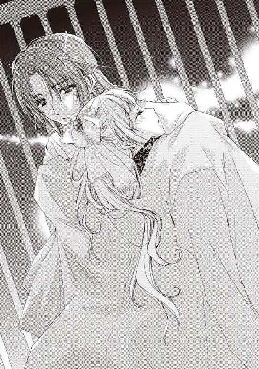
思わず、ぎゅっと彼の胸に手を回して、抱きついた。芯まで温まるような、暖炉で温めた枕を抱き締めた時のようなじんわりとした温かさ。
その時、何かがフローラの肌を滑り落ちていった。
「え？ あ──！」
落ちたのはフローラに残された唯一の身に着けている下着だった。さっき食事をする時に切った紐が悪かったのだろう。腕を上げたはずみで、ストンと落ちてしまった。
「何か脚に......」
違和感を覚えたエドゥアルドが、胸元に目線を落とそうとする。
「ひゃっ！ み、見たら駄目です！」
胸を見られてしまうと思い、彼に必死で抱きついた。結果的に乳房を強く彼の身体に押し付けることになる。
「あ......フローラ......」
「すみません、すみません......でも、エッチなのは駄目です！」
身体を離すことも、下着を拾うこともできない。さらに強く彼の身体を抱き締めることしかできなかった。
──こんなはずじゃなかったのにー！
心の中で叫びつつも、解決策を頭の中で急いで探す。
「フローラ......その......寒いので抱き締めますね......」
エドゥアルドも、感じるフローラの感触から下着が落ちたことに気づいたようだ。顔が見る見る赤くなっていく。誤魔化すように強く抱き締められた。
「ぅぅ......エド......強い............ぁ......」
締め上げられるように強く抱き締められ、吐息が漏れた。彼の身体がはっきりと素肌から伝わってくる。最初の時よりも冷静にその感覚がわかる。
──思ったよりも筋肉質な身体......やっぱり、女のわたしとは違う......。
「フローラ......キス、してもいいですか？」
「は、はい！」
キスに返事をしたつもりではなかった。名前を呼ばれたので反射的に「はい！」と言っただけだった。
「あ、待って......今の返事は違って......」
しかし、元々くっつくほど近くにあったエドゥアルドの顔が自分の唇に目標を定めて下りてくる。フローラはもう覚悟を決めて目を閉じた。
「エド......ん──」
四度目のキス、正確には三回と水を吐かせるための一回。どのエドゥアルドとのキスよりも熱かった。身体が寒いからかもしれない。
「ぁ......ん......」
求め合うように唇と唇を上下に合わせる。彼の吐息が吹き込まれる。溺れた時と違って、それは焼けるように熱くて、頭を蕩けさせた。
「エド......ん......ぁ......」
「フローラ......好きです......貴方が......好きです......」
こんな時に好きだというなんてずるい。温かくて、熱くて、頭が朦朧としてしまっては、何も考えずにすべてを受け入れてしまう。お尻が触れている、冷たくて硬いバルコニーの石床も、ふわふわのベッドみたいに夢見心地へ変わる。
「わたしも......エド......優しいあなたが好き......かも......ぁっ......」
〝かも〟は最後の抵抗のつもりだった。けれど、舌が口の中に入ってきて、もう考えられなくなってしまった。
「あ......ん......ぅぅ............はぁ......」
エドゥアルドの熱い舌が、口の中へと入ってくる。唾液が絡み合い、いやらしい感触が頭を刺激した。それだけでは当然のように終わらない。フローラの舌を誘うように、エドゥアルドの舌がつついてくる。
「はぅ......ぁう......ぁぁ......」
フローラからも熱い吐息が漏れる。口の中に舌が入ってくるので、思ったように息ができない。
「フローラ......」
優しく彼が自分の名前を呼んでくれる。不思議な気分だった。それだけで、どこか心の奥がふんわりと温かくなる。そして、さらに彼の温かさを求めたくなってしまう。
いつしか、フローラは彼と舌を絡めていた。エドゥアルドがするように、必死に舌を動かし、受け入れる。
「ぅ......ぁ......ぁぁ......熱い......すごく......変な気分......」
身体中が急に熱を持ったように熱くなっていた。もう凍えるような寒さを感じない。服の間から入ってくるひんやりとした夜風でさえも、気持ちがいいと感じる。
──ああ、もう駄目......色々駄目......。
訳のわからない言葉がフローラの頭の中を巡り、初めての激しい口付けに身体中の力が抜けていく。
どうして力が抜けていくのだろう。たった、キス一つだというのに。
フローラの中に残っているどこか冷静な一部分が、そんなことを考える。
「フローラ......好き......です......」
もう一度好きだと言ったエドゥアルドの下半身がもぞもぞと何か動いて、自分の太腿に触れていた。彼に抱きすくめられて、向かい合う格好で尻餅をついていたフローラの体もピクリと反応する。
「......すごく熱い......ぁっ、あっ！」
すでに二人の間を邪魔するものはなくなっていた。
背中にはさっきまでは恨めしく思っていた、締め出された開かない窓。そこへフローラを追いつめるようにして、抱き合い座ったままエドゥアルドの熱いものが、フローラの中心を求めて動く。太腿の付け根に沿って動き、先端が何度も触れる。
探している。繋がる場所を......駄目......なのに。
二度目なので、何を探して、何をしようとしているのかがはっきりとわかる。わかる分、期待するようにフローラの身体が熱くなっていく。
「ぁ......ぅっ......エド......」
やがて、太腿の付け根へと彼の熱がやってくる。花弁へ何度も触れながら、触って確かめているかのように、秘所の周りを触り始めた。
あっ！ 待って......繋がってしまう？
求めているのか、嫌がっているのか、身体が彼の動きにびくりと反応して腰が浮いた。段々と擦りつけるように、彼の先端が何度も花弁に触れる。
「はぁ......ぁ......ああ......」
触れている感触に思わず吐息が漏れる。何かを焦らされるような感覚に陥り、淫らな予想をする自分がいて、恥ずかしくなった。
「あっ......恥ずかし......い......エド......」
背中が反り返り、上を向いた。すぐ近くにエドゥアルドの顔がある。自分とたぶん同じだろう。顔が赤くなり、力が抜けているかのような、何ともいえない顔つきになっていた。
エドゥアルドも、自分と同じ？
段々と擦る力が強くなっていく。擦るというよりは、突き上げるような動きになる。逃げるようにフローラの腰は、彼の動きに合わせて、少し上下した。
「は......ぅ......あぁ......エド......待って......」
いつもの彼の優しさからは想像できない激しい動きに戸惑い、声を上げる。しかし、もう彼には届いてないのか、動きは止まらない。
そして、ついに段々と先端が花弁を押しのけて、中へと入ってしまった。
「あっ............うううう！」
するりと先端部分だけが、秘所の中へと入ってくる。思わず、その感触に声を上げた。
「フローラ......温かい......もっと......温かく......したい......」
うなされているかのように、エドゥアルドが呟く。最初に考えていた拒否はもうできなかった。
背中へと回したフローラの腕から彼の身体が力んだのを感じる。ぐっと肉棒が硬くなり、力強く膣内へと進み始めた。
「は......ぁっ......うう......エド............ぁあ！」
エドゥアルドも欲望を少しは抑えてくれているのか、いきなり深く入ってきたりはしない。でも、入ってくる。確実に自分の中へと彼の一部が進んできていた。
──またこのパターンだ......エドが気持ちいいのを求めて......あっ......でも今回は......温かい......気持ちいい......。
最初の時と大きく違ったのは、痛みをほとんど感じないことだ。しっかりと密着した彼の肉棒の感触があるものの、以前のような鋭い痛みは感じない。
──でも、苦しいのは一緒。
「はぁはぁ......あ......ん......」
口を開けて、大きく夜の冷えた空気を吸い込む。
痛みこそほとんど感じないものの、密着感とともに、激しい息苦しさを感じた。それは最初の時と同じことだ。痛みに感覚が持っていかれない分、強くそれを感じる。
「は......うっ！」
肉棒がビクンと震えあがり、膣内が一瞬押し広げられる。強い刺激にフローラは懸命にエドゥアルドにしがみついた。爪を立てて、彼の背中を引っ掻いてしまう。
ごめんなさい、エド。でも、我慢......できない......。
「ぅぅ......ぁ、ぐっ！」
謝りつつ、さらには身近にあった彼の肩に噛みつく。
どうして、そんなことをしてしまったのかわからない。でも、何かに掴まっていないと、快感と刺激に身体が持っていかれてしまう気がした。
「............」
エドゥアルドが無言で熱い吐息を漏らす。同時に、身体の中心の一番敏感な場所に、肉棒の先端が触れた。
──あぁ、彼の......が、中に......全部......。
いつの間にか、エドゥアルドの腰がフローラに密着している。そして、これ以上ないというぐらいに身体が繋がっていた。
彼の鼓動を感じる。温かさを感じる。存在を感じる。
自分の中に、確かに彼がいる。
それが最初の時は違和感でしかなかったけれど、今は安心できた。温かいと素直に感じられる。そして、恥ずかしいけれど、気持ちいいとも。
──こんなことしてて......いいのかな？
なぜか罪悪感が頭を巡る。日記のせいだ。でも、今は日記に書かれていたことをしてしまったという後悔ではなく、彼と一つになっているという興奮と嬉しさに溺れたかった。
「はぁ......はぁ......エド......」
フローラは潤んだ瞳で、上を向くとエドの名前を呼んだ。
──もっと先へ。
「ええ......フローラ......」
身体が繋がっているからなのだろうか。何も言う必要などなく、彼が間違いなく心の声に答えて首を縦に動かす。すぐに腰が動き始めた。
「あっ！ エド！ ぁああ！」
少しエドゥアルドの身体が動いただけで、強烈な刺激が身体中を襲う。揺さぶられ、快感と刺激が同時に頭も胸もいっぱいにしていくかのようだ。
身体の中で彼の肉棒がゆっくりと前後する。お互い十分に濡れていて、ねっとりとした淫らな感触だけがする。
──エドに......エドに揺さぶられている......身体を......
最初は身体の自由がほとんど聞かず、訳もわからずにされてしまったので、ほとんど感じることはできなかった。しかし、今日は感覚という感覚が、彼の身体の感触を、動きを受け取っている。
少しの彼の変化もフローラには手に取るようにわかった。苦しそうな息遣い。気持ちいいという身体の震え、そのすべてが繋がっている部分、触れている部分から伝わってくる。
彼は欲望を抑えながら、必死に自分を気遣って、その狭間で快感を味わっていた。
──あ、愛されるって......こういうこと？ これが繋がるってこと？
誰に聞くでもなく、心の中で本能が答える。愛し合う行為とは、お互いを尊重しながら、お互いを感じる行為だ。
だから、自分は嬉しいのだ。エドゥアルドに愛されて、エドゥアルドと愛し合えて。
──エドなら、身体をすべて任せてもいい。彼がいい。
いつからだろう。エドゥアルドのことが好きになっていたのは。
最初から惹かれていたのは間違いない。でも、男性に興味を持つことに自体がなかった自分はそれが恋なのかよくわからなかった。キスをされてしまったショックなのだと思っていた。
あれだ、兄にキスされた時。
エドゥアルド以外に、兄とはいえ、キスをされて嫌だと思った。エドゥアルド以外とするのは嫌だと。そして、兄とのキスは全く違うと。何も感じない。温かさや求め合いたくなるような、込み上げてくる気持ちがある
「......エドゥアルド......好きです......エド......」
考え出したら彼への気持ちが止まらなくなって、声に出していた。
「フローラ！ 私も......フローラ！」
答えるようにエドゥアルドがフローラの名を呼び、同時に自分の中にいる肉棒が震えた。振動がそのまま伝わって、身体中が痺れる。
これ以上ない、お互いを確かめ合う行為に、興奮に酔っていく。
──すごい......あぁ......エドがいる......気持ちいい......。
もう、苦しささえも快感の一つの香辛料にしかならない。エドゥアルドは腰を動かし、フローラは必死に掴まるように彼の胴に回した腕をきつく抱き締める。
「ぁうっ......ああっ......ん............あぁっ！」
徐々にエドゥアルドの動きが大きくなり、肉棒の動く距離が大きくなる。当然、擦り合わされる箇所が多くなり、フローラの感じる快感と刺激は強くなっていった。
「......ん......んん......ぁあ！ 駄目......ぁぁっ！」
身体が勝手に震えあがる。はしたないことだと思って、駄目という言葉が口から漏れた。しかし、それでも、快感と刺激にスイッチを入れられるかのように、痙攣は止まらなかった。
──沢山......感じる......溢れる......。
小さな身体では、抑えきれないような大きな快感が徐々に込み上げてくるのを感じる。そして、もう刺激に身体が堪えられそうにない。
「は......ぁ......ぅん......ああ......」
声にならない熱い吐息だけを零す。
「フローラ......もっと奥に......いきたいです......」
腰を動かしながら、エドゥアルドがそう口にした。
意味がわからなかった。もう十分に奥に彼のものがあるし、擦れている。これ以上、何があるというのか......。
しかし、次の瞬間、フローラは大きな波に飲み込まれた。
「あ......うううう！ ぁあっ！」
エドゥアルドが腰の角度を変え、肉棒をフローラの奥へと突き上げた。それはまさしく、肉棒に身体の中心を貫かれるような感触だ。激しい刺激と快感が同時に、フローラを飲み込んでいく。
「駄目......駄目......ぁあ！ 堪えられない！ あっ......うっ......ああっ！」
ビクンビクンと限界に達した身体が、壊れたように激しく震える。堪えられる刺激の限界を一気に越え、フローラはただ受け入れるしかなかった。
──激しい......あの......エドが......。
いつも温厚で優しいエドゥアルドに、これほどの強い欲求があったのかと驚くほどに、力強く、肉棒が自分の身体の中に押し上げられる。
「は、あ......あぁ......んっ、あっ！」
身体ごと突き上げられ、自分の体重が、彼の硬い肉棒で自分の中心へと掛かる。いつしか、フローラの腰は完全にエドゥアルドの腰に乗っていた。抱き締められ、持ち上げられながら、突かれる。完全に逃げ場はなかった。
快感の渦の中で、意識が遠のく。朦朧としていた頭が一度刺激でびっくりして、再び蕩けていく。でも、それはとても気持ちいい感覚だった。
──ああ、もう駄目......。
もう何も考えられなかった。ただ、真っ白で、彼の突き上げで意識が薄れていくのか、意識を保つために突き上げられているのか、どちらかさえわからなくなってくる。
「ああ、フローラ！」
「ぁっ！ ああっ！」
エドゥアルドが自分の名前を呼んだだけなのに、この行為がそろそろ終わりに来たのを感じる。彼もずっと何かを我慢していて、もう限界なのだ。
「エドゥアルド......好き......」
きつく、背中に爪の跡が残るほどきつく抱き締める。自分がここにいて、彼もすぐそばにいることをはっきりとさせるかのように。
すると自分のせいなのか膣内に肉棒がさらに密着し、刺激が増した。肉棒が大きくなったのか、それとも自分が締め付けたのかはわからない。ただ、快感と刺激の強さが同時にぐんと跳ね上がる。
「あ......ううっ！ あぁあ！」
声を出さずにいられない。こんなところを見つかったら恥ずかしいどころではないけれど、今はそんなことは気にならない。彼と一緒に気持ちよくなりたい。気持ちよくなって欲しい。この刺激の先を、最後を知りたい。ただ、それだけだった。
「フローラ！ フローラ......好きです」
辛そうな声と顔で、エドゥアルドが自分の名前を何度も呼んだ。それがとても嬉しい。
「エドゥアルド！ エド！ エド......大好き」
呼び合いながら、互いに何かに上り詰めるかのように興奮を高めていく。
もう完全に彼と一体になっていた。身体も、興奮も、刺激も、想いも......。
「あ、あ、あ......あああっ！ エド！」
今まで感じていた気持ちよさの数倍の快感が一気に身体を巡る。
「────フローラ！」
瞬間、エドゥアルドも大きな声でフローラの名を叫ぶ。さらなる快感が押し寄せ、二人で強くお互いの身体を抱き締め合った。
「............すみません、また貴方に......」
しばらく、抱き合いながら息を整え終えたあと、冷静になったエドゥアルドが済まなそうに切り出した。
「だ、大丈夫ですよ、今日はほら、血も出てしませんし......その......わたしも嬉しかったですし......気にしないでください......」
せっかく引いていった頬の熱がまた上がってしまう。
でも、本当のことだ。最初の時よりもずっと、彼のことが好きで、繋がれたことが嬉しい。
「いえ、そういう問題ではありません。その......こんな時にすべきなのかはわからないですけれど......」
「......エド？」
何かを決意するように、エドゥアルドが言葉を止める。心配して、フローラは彼の顔を覗き込んだ。
「私の一生の伴侶となってください。私の妻になって欲しい。フローラ、貴方に」
「......ぁっ」
再び、エドゥアルドが自分にプロポーズしていた。
じわじわ実感と嬉しさが込み上げてくる。そして、再び彼の身体に抱きついた。
「嬉しい、エド！」
「なら、返事は......」
ごくりと彼が喉を鳴らす。エドゥアルドも緊張している。
「もちろん、お受けします。正式には兄に......報告してからですが......」
セレスタンのことを思い出し、フローラは途中からトーンダウンしてしまった。
爵位は同じとはいえ、王子であるエドゥアルドは公爵家の嫁ぎ先として申し分ない。普通なら、二つ返事で答えるプロポーズだけれど、今の兄にはそう簡単にいくとは思えなかった。何よりもあの日記には......。
「セレスタン公爵には、すぐに日を改めて挨拶に伺います！」
フローラの陰った顔に、エドゥアルドは嬉しさのあまり気づいていないようだった。肩を抱かれ、強く抱き締められる。
「痛い......エド......」
「あっ......すみません、嬉しくて......でも、もう少しこうしていていいですか？」
今度は力を加減して、優しく身体全体を包み込んでくれる。
「はい......抱き締めて......欲しいです......」
そのまま、痛くない程度にエドゥアルドがぎゅっと身体を抱き締めてくれる。
とても気持ちいい......心も、身体も、すべて彼に包まれ、生まれてきたかのような気分。すべてが満たされていた。
しかし、段々と興奮が冷めてきた頭の片隅に、日記の言葉が浮かび、不安となって広がっていく。
──やっぱり抗っても、全部日記の思い通りに......ということは......。
このままだと本当に書かれていたように、エドゥアルドとの別れが来てしまうかもしれない。
──でも、今はこのまま、眠りたい......気持ちいい......。
エドゥアルドの胸の中で瞳を閉じる。
結局、フローラとエドゥアルドが発見されたのはそれから少しあと、舞踏会がお開きとなり、二人だけが帰っていないことがわかってからだった。
第四章 ページの先は未来の悲劇
舞踏会の日から三日後、エドゥアルドは約束通り、馬車いっぱいの花とセレスタンの好きなチョコレートを持参して、オズフィールドの屋敷を訪れていた。もちろんチョコレートは少しでもセレスタンの印象をよくというフローラの入れ知恵だ。受け取ってもらえなかったらおやつにもなる。美しく硝子の器に積み上げられたチョコレートをセレスタンが一瞥した。
「それで、エドゥアルド王子が何の用です？ フローラとの結婚の承諾なら、絶対に認めませんが......」
「お兄様！」
いざ、エドゥアルドが切り出そうとしたタイミングを見計らって、セレスタンが口火を切った。すぐに諌めるようにフローラが声を上げるも、兄は動じない。
「なぜですか？ 理由をお聞かせ頂けますか？」
エドゥアルドは冷静だった。事前に兄が反対していることを伝えていたからというのもあるが、常に彼は落ち着いている。もちろん、あの行為をしている時を除いてだけれど。
「王子は病から治ったばかりでしょう？ 急にまた具合が悪くなって死なれたら困るのですよ。フローラを未亡人になんてしたくない」
「お、お兄様──！」
自分の兄とはいえ、さすがにひど過ぎて、口を挟もうとする。しかし、すぐにエドゥアルドが「大丈夫です」と目で伝えてきて、その後の言葉を飲み込んだ。
「私の健康が心配と思われるのであれば、国一番の名医に推薦状を書いてもらって構いません。今の私はとても健康体です。自分でも驚くほどに」
「そうですわ、お兄様。彼は驚くほどによく食べるの。大食漢の患者がどこにいます？」
助けになっているのかよくわからないが、必死にフローラもエドゥアルドに続く。
「ぐっ......い、医学で見つけられない病などいくらでもある。それに今までの病で勃たないかもしれない、種無しかもしれない。子供が残せないのを周りからフローラのせいにされたらどうする？」
一瞬何を言っているのかわからなかったが、しばらく考えて、何となく意味するところに辿りついた。
「お、お、お、お兄様！」
顔を真っ赤にして、フローラはソファから立ち上がる。
「種は証明しようがありませんが、もう一方でしたら、すで──うぐっ」
──な、何を言うつもりよ！ もう、エド！
今度はエドゥアルドの口を押えた。
「とにかくこれ以上、フローラに近づくな、傷つけるな。最近、よく辛そうに考え込んでいる彼女を見る。お前のせいだろう！」
好機と見たのか、セレスタンが立ち上がって捲し立てた。
「本当ですか!?」
確かめるようにエドゥアルドがフローラの方を見る。頷くわけにもいかず、どうすることもできなかった。手紙のやり取りしかしていなかったので、エドゥアルドが気づきようもない。
「そんなこともわからなかったのか？ 彼女への想いが足らないんじゃないか」
勝ったとばかりにセレスタンが鼻で笑って、見下す。
「はっ......もしかして、妊──うぐぐ」
「違います！」
また、爆弾発言をしようとしたエドゥアルドの口を力いっぱい押さえる。
「と、とにかく、お兄様！ わたしはエドゥアルドと結婚したいんです！ 認めてください！」
「駄目だ！」
これ以上、エドゥアルドに言わせると色々暴露されそうで、代わってフローラが兄に許しを請うも、すぐに却下されてしまった。
「こんな男よりも、俺の方がずっとお前を愛している。お前は騙されているんだ、目を覚ませ！」
「目を覚ますのはお兄様の方です！ お兄様は恋人ではなくて、わたしの兄です」
「血の繋がりという呪縛さえも乗り越えてみせる！ さあ、俺の手を取れ！」
エドゥアルドのいる前で、セレスタンが禁断の宣言をして、手をフローラに差し出す。
「障害さえもものともしない、兄の愛ですか......。強敵ですが負けませんよ。フローラと結婚するのは私です」
何に感化されたのだろうか。同じようにエドゥアルドもフローラへ手を差し出す。彼のことを常に冷静だと思っていたのは取り消そう。
「さあ、選べ、フローラ！」
「フローラ！ さあ、自分の思うままに選んでください！」
二人の男に迫られ、フローラは後ずさった。
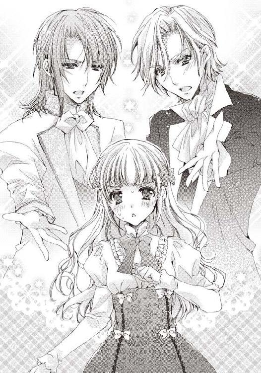
──どっちの手を取れば......。
しかし、冷静になって考えてみればこの二択は迷いようがないことに気づく。フローラはエドゥアルドの手に自分の指を重ねた。
「フローラ、信じていました！」
「うっ！ なぜだ、なぜ兄じゃない？」
負けたセレスタンが見事に膝から崩れ落ちる。
「兄だからです！」
「俺は認めないからな！ チョコレートを山のように持ってこようとも！ 認めないからな！」
子供のような捨て台詞を吐いて、セレスタンが硝子の器を軽々と持ち応接室を出て行ってしまった。
「......ごめんなさい、変な兄で」
部屋に残されたフローラは、エドゥアルドに兄の奇行を謝った。
「いえ、私こそ、変に熱くなってしまって。貴方に選ばせるなんて残酷なことを」
「気にしてません。それに、エドを選ぶのは当然です。わたしはエドを......その......好きなんですから......」
「フローラ、ありがとうございます。私も好きです、貴方が」
先ほどまでの緊迫した雰囲気が一気に甘くなっていく。エドゥアルドのエメラルドの瞳がじっと自分を見つめていて、吸い込まれそうになる。
「で、でも！ お兄様のことはどうにかしないと......」
顔が近づいていたことに気づき、弾けるように身体を少し離す。もし、兄が部屋に帰ってきたら大変なことになる。
──これが誰にも見られない場所なら、キスしてた？
あ、いや、そんなことを考えている場合じゃない。
「そうですね。どうしたのでしょう？ オズフィールド公爵といえば、聡明な方だと存じていたのですが......やっぱり、フローラの魅力が禁断の愛さえも惹きつけて......」
「ありません！」
あの兄の豹変はやはり、日記のせいに違いないと確信する。いくらなんでも、あの態度は本当の兄ではないとわかる。
──エドには話すべきなのかもしれない。
一人で日記のことを抱え込むのには、限界が来ていた。書かれたことに逆らい続けていたけれど、一向に上手くいかない。このままだと、本当に二人の終わりが来てしまうかもしれなかった。現に、兄に結婚を認められず、悪い方向に行っている。
──怖い......エドがもし......自分のことを好きでなくなってしまったら......。
「フローラ、大丈夫です。何度でも、どれだけ時間が掛かっても、お兄さんに」
いつの間にか震えていたフローラの手にそっと、エドゥアルドが触れた。温かさと自分を想ってくれている気持ちが伝わってくる。
エドは誠実に、常に自分のことを想ってくれていた。それに比べて、自分は彼に隠し事を続けている。もしかしたら、自分たちの恋愛は日記に操作されたことかもしれないという重大なことを。
素直に話すべきだ、どんな結果が待っていようとも。もしかしたら、これが原因で日記に書かれたように二人は別れてしまうのかもしれないけれど、それでも愛してくれているエドゥアルドにきちんと向き合うべきだ。そうでないと彼に失礼だと思った。
「............実はエドゥアルドに話さないといけないことがあるの」
喉から無理やり声を出し、フローラは切り出した。
書庫で不思議な日記を見つけたこと。
書かれた出来事がすべて自分に実際に降りかかること。
一度日記を奪われてから、兄の様子がおかしくなったこと。
そして......エドゥアルドとのことももしかしたら、日記のせいかもしれないということ。
さらには、二人の破局を意味する文言が書かれていること。
普通ならば信じないような話を、エドゥアルドは黙って真剣に聞いてくれた。話し終わると、ずっと触れていた手を握り締め、微笑んでこう言ってくれた。
「話してくれてありがとうございます、フローラ」
「エド......」
何よりもフローラを安心させる笑みだ。一言だけれど、話してよかったと思えた。
「大丈夫ですよ、日記がわたしたちのキューピッドだっただけです。確かに出会えたのは日記のお蔭かもしれませんが、貴方を好きなのは紛れもなく私の意志ですし、それは永劫変わりません。もう貴方は私の一部ですから」
ふっと彼の顔が近づいてきたかと思うと、唇が触れていた。少しだけ触れて、すぐに離れる。大丈夫だよ、と言うかのような軽い口付け。
でも、それだけで十分に甘く、心が落ち着く。エドゥアルドの前だと、自分は驚くほどに素直で、単純だ。
「ありがとうございます、エド......わたしもあなたに出会えてよかった」
隣に座るエドゥアルドの胸にフローラは身体を預ける。心配して、安心して、急に泣きそうになってしまったのを必死に抑えていた。
そっと肩に回した彼の腕が、抱き寄せてくれる。エドゥアルドのお蔭でフローラはすぐに落ち着くことができた。
「二人で解決していきましょう。お兄さんのことも、日記のことも」
「はい、一緒に......」
一人で抱え込んでいたことが、二人になっただけで、とても身体が軽くなる。
「ひとまず、私にも日記を見せてもらえますか？ あなたさえよければですが」
「もちろんです。見てください」
心配そうに扉の外で待機していた使用人たちへ、笑顔でもう大丈夫だと合図を送ると、フローラはエドゥアルドを連れて書庫へと移動した。
胡桃色の表紙────。
「エド、これです」
書庫で外装には何も書かれていない本をエドゥアルドに手渡す。目の前で彼がパラパラとページをめくっていく。
「誰かの日記のような、落書きのような、妙な詩のような、不思議な内容ですね」
「はい、満月になると内容が書き足されるみたいで本当に不思議で......あれ？」
横から彼のめくるページを見ていたら、ふとあることに気づく。今まで、毎日のように先の、未来の箇所ばかり見ていたので、読み返すことはなかったから気づかなかったのかもしれない。
「どうしました？」
「今まで日記に書かれていたことすべてがわたしの身に起こると思っていたんですけど、読み返してみると意外に起こっていないこともあるな～と思って」
「たとえば、どこです？」
「沢山あって、本当に小さいことばかりなんですけど、こことかです」
少しページを戻すと、自分の身に起きていない内容を指示した。
日記には〝飼い犬に押し倒され、顔中をペロペロと舐められる〟とあるけれど、そんなことが起こった記憶はない。セルファードはもう立っているのがやっとの老犬で、小屋で寝てばかりいるからありえない。
「わたしが忘れているだけかもしれないんですけど......」
「でも、他にもあるんですよね？ だったら、違ってないと思います」
エドゥアルドが、いまいち自信の持てない記憶を肯定してくれた。一人だったら、気のせいだと簡単に否定してしまうだろう。やっぱり、自分と日記のことを客観的に見てくれる人がいるだけでだいぶ違う。
「それ以外に、何か不思議なことや思いつくことはありませんか？」
手帳を取り出すと、何やら彼がメモしていく。
「えっと......そうだ！ エドに話していませんでした。最初に名前を書いたんです、わたしの名前を本の最初のページに」
「サインを？ どこですか？」
エドゥアルドから本を受け取ると、サインした箇所を開く。それはインクでくっついてしまって注意して開かないとわからなくなっていた。
「ここに......本当ですね、貴方のサインがある。これは？」
確認したエドゥアルドが自分のサインの上を示す。見覚えがある文字だった。
「お兄様のサイン！ こんなのなかったはずなのに」
確かに兄の筆跡とサインだ。自分が書いた時にはなかったはずだから、日記を奪われた時に兄が付け加えたことになる。
「サインをしたら、日記に参加させられたのかもしれません。これはお兄さんと日記が繋がっていた証拠になるのかもしれません」
「お兄様が日記に参加......操られていたってこと？ だったら......どうすれば......」
そう、兄が自分と同じようにサインしたという事実だけでは、何も解決していない。
「焦らないでください。わかることが多くなれば、それだけ解決法を浮かびやすくなるはずですから......この日記お借りしてもいいですか？」
「あっ！ それは......」
別にエドゥアルドを信じていないわけではない。しかし、セレスタンが豹変してしまったのもおそらく日記のせいだとはっきりわかった今、彼も同じようになってしまわないか不安だった。
「お借りできないのでしたら、内容を紙へ写させてください」
敏感にフローラの変化を感じ取ったエドゥアルドが、方法を変えてくれる。
「え......ええ」
「ありがとうございます。机、お借りしますね」
さっそく、日記を手に机へ座るとエドゥアルドはペンを取り、別の紙へとサラサラと写し始めた。
──すごく綺麗な字。
書き写すエドゥアルドの様子を、上からぼんやりと眺める。
「キスキスキス、と──」
「ひゃっ！ だ、駄目です！ 声に出さないでください」
ちょうど写していたのは最初にエドゥアルドと出会った箇所だ。
「ああ、すみません。つい、声に......気をつけます。けれど、嬉しい出来事を思い出してしまってつい......あっ、想像するのは自由ですか？」
「そ、想像もダメです！」
「わかりました。残念ですが、従います」
悲しげに目を伏せていても、エドゥアルドの手は止まらない。ちょうど、日記は初めての体験のシーンに差し掛かっていた。
〝大丈夫、怖がらないで、痛いのはちょっとだけ......たぶん〟
二人に沈黙が訪れた。
「............」
「............」
エドゥアルドが手を止め、何か慰めを言いたげにフローラを見た。口に出すことも想像もダメと言われて、どう労わっていいか迷っているのだろう。
フローラは、恥ずかしさで居た堪れなくなり、彼から離れた。
「わ、わたし、向こうへ行ってますね......」
結局、エドゥアルドはメモいっぱいに日記の内容を写し終えると、日記のことを調べてみると言って、屋敷へ戻っていった。
彼が帰ったあと、フローラは書庫の机に座り、日記を見つめていた。
少しでも彼の手伝いをしたくて、日記を読み返していたのだ。最初から見逃すことのないように指でなぞりながら、読んでいく。
「やっぱり、何もないわ」
独り言を言いながら、大きく背伸びをすると机の上に突っ伏す。長時間、日記を見つめていたけれど、特に成果がなかった。
「ふぅ......エド......」
彼の名前を呼ぶだけで、少しだけ元気になれる気がした。
「お兄様......ずっとあのままだったらどうしよう」
兄を説得するために両親を呼び戻して、エドゥアルドを紹介して......。
何ヶ月掛かってしまうかわからない。それまで、兄の魔の手を逃れ続けることができるだろうか。
「............お兄様」
フローラの声へ応えるように日記がめくれ、兄と自分がサインをした最初のページが開いた。
「もう......お兄様の馬鹿！ わからずや！」
ペンでグルグルとセレスタンの名前の周りへ円を描く。そのままぐちゃぐちゃに兄のサインを黒く塗り消した。
「あっ............ご、ごめんなさい」
衝動的とは言え、本に落書きをしてしまうなんて......！
フローラは子供の悪戯のようなことをしてしまい、取り返しのつかないことをしたと反省しながら本へ頭を埋めた。
──疲れているのよ、心休まる時間が書庫以外この屋敷にはないから。
就寝の時間まで書庫で過ごしたあと、フローラはのろのろと立ち上がり自室へ向かい、眠りについた。
次の日。朝、目覚めると兄が枕元に立っていた。
「はっ！ お兄様、何を！」
咄嗟にシーツを引き寄せて身体を隠すと、フローラはベッドから離れた。
「あぁ、やっぱり......そんなに怯えないでくれ」
悲痛な顔でセレスタンがフローラを見る。朝だと言うのに髪の毛の乱れ具合といい、おかしくなる前の兄のような雰囲気だ。
──騙されては駄目。演技よ、演技に決まっている！
「来ないで！ それ以上近づいたら、噛みつくわよ！」
──キスをされそうになったら、また舌に噛みついてやる！
「違うんだ、フローラ！ その......エドゥアルド王子との結婚だが、俺は賛成する」
「ええっ？ ど、どういうこと？」
いきなり兄がエドゥアルドとのことを認めることを口にする。何がどうなっているのか、さっぱりわからない。
「だから、エドゥアルドと結婚していいぞ。俺のことは......気にしなくていい」
「気にするなって言っても！ 昨日お兄様は......」
「あ、あれは......その......なんだ......お前の兄として、父の代理として......一度断ってエドゥアルド王子の覚悟を知りたかったんだ、遊びでないってことをな。そうだ、うん」
明らかに嘘を言っているのはバレバレだ。自分の言葉に納得して頷いている。
しかし、フローラが驚いていたのはそこではなかった。セレスタンの態度は、明らかに昨日とは違っていた。
「あ、ありがとう、お兄様」
「それだけだ。今日はこれから仕事で出る。二、三日留守にするから、屋敷を頼む。あと、エドゥアルド王子にもよろしくな」
「あっ、お兄様!?」
逃げるようにセレスタンが部屋を出て行く。フローラが着替える前にさっさと馬車で出掛けていってしまった。
「......もしかして？ お兄様、治った？」
あまり話をしていないのではっきりとわからないが、悪い兄なら、枕元に立って何もしないなんてありえない。元の兄に戻ったとしか思えなかった。
──でも、どうして？
何か、兄にした覚えは全くない。それどころか、昨日はエドゥアルドと対峙したあと、顔を合わせることもなかった。
一人、自室で首を傾げていると、出て行ったはずの馬車が屋敷に入ってくるのが見える。
「お兄様が戻ってきた？」
しかし、目を凝らすとその馬車がエドゥアルドのものだとわかる。朝一番に駆けつけてくれたのだ。フローラは身仕度を急がせて彼を出迎えにエントランスへと降りた。
「おはようございます、フローラ」
自分の顔を見たエドゥアルドが嬉しそうに目を細めると、挨拶の言葉を口にした。兄に結婚の承諾をもらったこともあり、フローラも笑顔になる。
「おはようございます、エド」
「今日はとても嬉しそうですね、輝いています」
「あ、ありがとうございます......そうです！ お兄様が治ったみたいなんです！」
「お兄さんが？ 詳しく聞かせてください」
エトンランスでこのまま話したいのをぐっと堪え、エドゥアルドを部屋へと案内する。応接室か、自分の部屋か迷ったけれど、結局一番落ち着く書庫で話すことにした。
「そうですか、お兄さんが結婚を。それはよかった」
ほっとしたようなエドゥアルドの表情。まずは、二人で結婚の承諾がもらえたことを、手を取り合って喜んだ
「でも、お兄様が急に態度を変えた原因がわからなくて......」
「お兄さんに関することで、何かありませんでしたか？ よく思い出してください。これが解決法の糸口になるかもしれませんから」
エドゥアルドの言う通り、本当に兄が日記の呪縛から逃れたとしたら、ヒントが間違いなくあるはずだ。
「うーん......少し、待ってください」
目を瞑り、昨日したことや見たことを懸命に思い出した。中でも兄に関するものを。でも、ほとんどがエドゥアルドと一緒に結婚の許しを願った時のことしかない。
お兄様に関すること......関すること......何かあったような。
頭の中で段々とぼやけていたものが形になっていく。
セレスタン、お兄様の名前、文字、サイン！ 日記のサイン！
「あああっ！」
「何かあったのですね？」
「はい！ 日記に、日記に書かれたお兄様のサインを黒く塗りつぶしました」
昨日、机の上でむかむかしてきて、偶然目に入った日記のサインをペンで塗りつぶしたことを思い出す。日記によって兄が豹変したのならば、日記によって元に戻るのが道理だ。
「だったら、わたしの名前も消せば......もしかして!?」
「やってみましょう！」
日記を取り出すと、自分の書かれた名前を昨日と同じように塗りつぶそうとする。
「あ、あれ？ えっ、何これ？」
インクは一度紙の上に黒い染みを作るものの、水が吸収されていくかのように消えていく。フローラの名前は頑なに消すことができない様子であった。
「やっぱり駄目ですか......」
落胆するフローラの横で、エドゥアルドが意味深な言葉を漏らす。いかにも失敗を予期していたかのようなセリフだ。
「エド、何か知ってるの？ もしかして......今日朝早くから来たのは......もしかして、何かわかったんですか！」
我慢できずに、早く知りたくて、フローラは彼に詰め寄った。
「落ち着いてください。ソファに座り、ゆっくりとお話ししましょう。残念ながら、まだ解決には至っていないのですが」
フローラはエドゥアルドに勧められて、書庫にあるソファへと腰を下ろして彼の話に耳を傾けた。
「調べたところ、一つだけ似たような事例の書かれた文献を見つけました。ある学者の日記のようなものなのですが......」
それは、妖精や精霊の研究をしていた学者の手記のようなものらしい。
「妖精!?」
ここにきて、自分の追い求めていた妖精が関係してくるとは思わなかった。
「ええ、妖精の森に行ったのは関係があったのかもしれない」
思い出せば、確かにあの時、おかしなことばかりが起きて、溺れて......彼と身体を重ねた。
「彼の書いた手記の中に、興味深いものがあったのです。妖精が持っていると言われ、自分の未来が書かれているという書物」
「自分の未来が！ それって......」
──この日記と同じ！
「はい。未来が書かれた書物、一般的に預言書と言われるものは沢山ありますが〝自分の〟未来が書かれたものというのはこれぐらいしかありません。おそらくこの日記と同じようなものだと考えて問題ないと思います」
エドゥアルドが断言する。それほどに自信を持った言葉だった。おそらく、徹夜で調べ回ってくれたのだろう。よく見ると、少しだけいつもより疲れた顔をしている。
「〝妖精の予言書〟と名づけられたそれを著者は実際に調べて手に入れているのですが、これを予言ではなく、妖精の悪戯だと結論付けていました」
「妖精の悪戯？」
少し難しくてよくわからない。予言が、妖精の悪戯って......。
「つまり、未来が書かれているのではなく、妖精が悪戯で書かれたことを本当にしている可能性が高いと」
──妖精が悪戯で未来を作っているってこと？
「そこに書かれていたのは、最初に名前を書いた所有者にしか効力がないこと」
「......だから名前が消えないの？ 最初に名前を書いたって......わたしですよね？」
「はい。ここからは書かれていたことではなく、私の推測なのですが、お兄さんはおそらく、貴方の上にさらに名前を書くというルール外のことをしたので、悪戯に参加させられたのだと思います」
そこまで言うと、サイドテーブルに置かれた水差しを取ってコップに水を注いで飲む。「だから、異例のお兄さんは日記から消せても、所有者の貴方は名前を消せなかったようです」
「だったら、どうすれば？」
そこまで来て、つい我慢できなくなり、フローラは口を挟んだ。
「それは......残念ながら書かれていませんでした。どうすれば、所有者の日記から逃れられるか」
「そう、ですか......」
結局振り出しに戻ってしまった。エドゥアルドの前でとはいえ、がっくりとフローラは肩を落とす。
「私は少し試したいことがあります」
「どんなことです？」
エドゥアルドの瞳はフローラと違って、落胆していなかった。もっと言えば、何か自信を持っているようにも見える。
「日記に、落書きするのです」
「落書き!?」
いきなり子供の悪戯のようなことを言い出すエドゥアルドに驚き、フローラは言葉を繰り返した。
「もしかして......悪戯？」
「そうです。妖精が悪戯をするのですから、こっちも悪戯をしてみるのです」
おぼろげなイメージしか、フローラにはわからないが、今の状況を打開することになるかもしれないという直観があった。
「今日の出来事に関するページを出してくれますか？」
エドゥアルドに言われたように、今日に当たる文章を探す。
「............あった」
〝愛しの彼と朝からなぞなぞ〟
〝物ではない、探し物はなに？ どうしたって見つからないでしょう〟
「この行の間に、こう付け足してください。〝昼、二人がサンドイッチを食べる〟」
「はい、わかりました！」
エドゥアルドのしようとしていることがわかった。おそらく、書き足されたことが本当に起こるか試すのだ
狭い行間にエドゥアルドがいった文章を書いていく。
「昼......二人が......サンドイッチで......食べ合う......」
「あっ！ 少し違うのですが......まあ、大丈夫でしょう」
「す、すみません」
自分では確かに言われたように書いたはずだったのに、手が、指がわざと間違えたかのようだった。首を傾げつつ、彼に謝る。
「少しの間違いぐらい、大丈夫ですよ。さあ、これで昼まで少し待ってみましょう」
エドゥアルドは気にしていないようだったので、ほっとする。
二人は太陽が昇り切るまで、久しぶりにゆっくりと話しながら過ごした。
しかし、昼になって一向にサンドイッチが運ばれてくることはなく────。
「......おかしいですね。私の予想違いだったのでしょうか？」
「もう少しだけ待ちましょう、エド。昼って書きましたけど、正確な時間を書いたわけではないので」
「そう、ですね」
「わたしがお薦めの本でも一緒に読みませんか？」
気晴らしになればと、書庫に並ぶ、一番お気に入りの本を見せようとフローラはソファから立ち上がった。
「いいですね。楽しみです」
「えっと......確かこの辺にいつも置いているんですけど......」
よく読み返す本を集めた本棚へ歩いていくと、目的の本を探す。その時、突然地面が揺れた。
「じ、地震!?」
「フローラ！ 上、危ないです！ 本棚から離れて！」
エドゥアルドの声で上を向いた時だった。二階にあった本棚が、その中に入っていた本ごと、フローラの上に降ってこようとしていた。
「やっ──！」
痛みと恐怖に耐えるため、目を瞑った。
「フローラ......大丈夫ですか？」
すぐ近くでエドゥアルドの声がする。目を開けると、目の前の本棚に身体をつき、後ろからフローラへ覆い被さるように抱き締めていた。周りには落ちてきただろう、数冊の本が散乱していた。
「ああ、エド！ 大丈夫!? ありがとう、エド！」
「大丈夫です。運よくあまり本が身体の上には落ちてこなかったようです。フローラの方は怪我ありませんか？」
声が元気なので、嘘ではないようだった。
「はい、エドのお蔭で............ん？」
何か棒のようなものがお尻に当たっていた。エドゥアルドに覆い被さられていて、状況がよくわからない。
「えっと？ これってなんでしょう。お尻に............あっ！」
触ろうとして、ぐにっとしたその感触に何かわかってしまい、フローラは顔を赤くした。
「あの......すみません......最近その......触れると、貴方の身体が欲しくなってしまって......こんな状況だというのに、すみません......」
顔を見れば、彼の頬も真っ赤になっているだろう。
意識してみれば、今かなり恥ずかしい格好で、ぴったりと密着している。
「い、いいんです。その......私もそういうこと少しありますし......あのことを......思い出してしまうというか......」
何を言っているのだろうと、自分に突っ込みたくなるのを必死に抑えて、口にした。
彼の手が触れ合った時、微かに思い出すことがある。特にこの間の舞踏会の夜のこととか......。
「今......このまましたら......駄目ですか？ あっ......駄目、ですよね？」
聞いたことがある。男の人はそういった欲情を我慢できないものだと。だから、恥ずかしいけれどフローラは頷いた。
「............その......恥ずかしいけど、いいです。もう婚約者なわけですし......お兄様も数日戻らないって......」
「ありがとうございます」
「あっ！ でも......んぁっ！」
せめて、自分の部屋に行こうと言おうとしたけれど、エドゥアルドは我慢できなくなったのか、フローラの胸に手を伸ばし、腰をさらに密着させてきた。
「エド？ ぁっ......んっ......ぁぁ......」
彼の唇が自分の耳元にとても近い。激しい吐息が直接頭へと聞こえてきて、いやらしい気持ちを誘う。
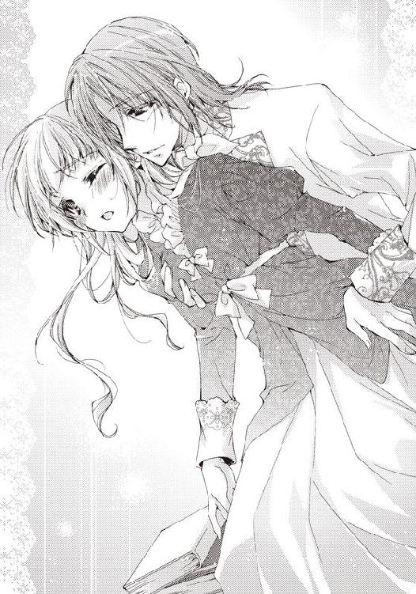
胸を揉まれていた。ドレスの上からだけれど、それがはっきりとわかる。
そういえば、今日はコルセットをつけていなかった。道理で彼の指先まで感触がわかるはずだ。
「は、んっ！ んん......」
今日のエドゥアルドは最初から激しい。痛くないものの、膨らんだ胸を五本の指でこれでもかと掴み、揺すっていた。彼の指の感触がとても卑猥に感じて、心がざわつく。
「......ぁっ！」
彼の熱い吐息が耳へと掛かり、びくっと身体を震わせた。いつもは温厚な彼なのに、今は獣のような息遣いが聞こえてくる。
でも、それはフローラも同じだった。ただ、胸を揉まれ、彼の腰がお尻に密着しているだけだというのに、身体が芯から熱くなっていく。激しい吐息が漏れる。
「ん......あっ......はぁ......んんっ......」
書庫で、こんな格好で、このまま......してしまうの？
客観的に自分を見て、意識したら恥ずかしさが込み上げてきた。色々ありえない体勢だ。
「エド！ あっ......いやっ......ぁぁ......」
否定の意味を含まないいやという言葉が口から漏れていく。ここまで来たら、エドゥアルドがもう引き下がれないのはわかっていた。それでも恥ずかしさは変わらない。
「フローラ......好きです......」
好きだと告げられ、首の後ろに彼が口付けをする。熱い唇の感触を、はっきりと肌に感じた。唇にされるのとはまた別の感触。くすぐったいような、それでいていけないことのような気持ちだった。
「ん......ぁ......ぁあ......」
胸や首だけでなく、お尻に当てられた硬いものもさらにフローラを刺激していく。お互いの衣服を通しているというのに、まざまざとそれが熱くて、自分の中へと入ってこようとしているのがわかる。最初に気づいた時よりも、明らかにそれは硬くなっていた。
擦りつけられる彼の肉棒に追い立てられるようにして、フローラの身体は目の前の本棚と彼に挟まれていく。
「............ひゃっ！」
彼の指が胸の中心に触れた時、思わず声が出てしまった。興奮して、ツンと立った胸の先端を挟まれ、ぐりぐりと刺激される。それは、今触れている箇所では一番強い刺激だ。びくんと身体が反応してしまう。
「すごく......柔らかくて......気持ちいいです、フローラ......」
子供のように何度も、何度も飽きることを知らず、彼が胸を触る。フローラは刺激と興奮で足が震えだし、我慢できずに手前にある本棚に手をついた。
「ぁ......ぅぅ......ああ......」
少し前のめりになったフローラの身体へ、エドゥアルドがさらに密着してくる。覆い被さっているというのが近いだろうか。
「あ......駄目............ん......あっ......くすぐったい......」
胸を弄っていた彼の指が、するすると下りて、身体中を撫でていく。お腹に触れ、腰へそして、さらに下へと動いた。
「ぁっ......そこ......だめ......ぅぅ......」
エドゥアルドの右手がドレスを捲し上げ、その中へと侵入してきた。すぐさま、興奮で湿ってしまっている花弁へと指が伸びる。
「ああっ！」
さらりと触れられただけだった。しかし、胸の先端以上の刺激が走り、大きな恥ずかしい声が出てしまう。一瞬彼の指がためらうように止まるも、触れるか、触れないかという圧力で花弁の周りを刺激し始めた。
「......はっ......んっ............ぁっ......」
自分が淫らな身体なのだろうか。それとも誰でもこうなるのだろうか。
指が触れているだけなのに、はっきりと彼のものが入ってくることを予想して、下肢が疼くように内側から震える。恥ずかしいことだと思っていても、それは止まらなかった
しかも、彼の指の動きは止まることなく、秘所の周りを撫でていく。自分でもねっとりと花弁が次第に指へ絡みついていくのがわかる。
どうして、彼に触れられているだけなのに......期待してしまって興奮している自分がいる。それはとてもいけないことのように思えてしまう。
「ぅん......ぁぁ......ごめんなさい......エド......」
気づくと彼にフローラは謝っていた。
「何を謝ることがあるのです？」
行為を止めることなく、エドゥアルドが聞き返した。
「わたし......すごく淫らな身体で......恥ずかしくて......」
「そんなことないです、素晴らしい身体です......私が虜になる......感じてくれて嬉しい......私の方こそ......いつも我慢できなくて......すみません......」
「エド......エド......だから......いいの......」
もう何を言っているのかわからない。書庫という広い空間のはずなのに、二人の周りだけは熱くて、頭を朦朧とさせていた。
力が抜け、さらに本棚に身体を預ける。すると、そのはずみで、花弁を触っていたはずの彼の指が中へと入ってきてしまった。
「あ......ううっ！ ぁぁ......入って......」
彼の肉棒以外のものを初めて、中で感じる。しかし、同じように刺激を感じ、蠢く。
「フローラ............は......」
甘美で、背徳的な感じはエドゥアルドも一緒なのだろうか。後ろから首に掛かる彼の吐息が、さらに熱っぽくなる。
入ってしまった指は、そのまま膣内を刺激し始めた。
「やっ......ぅっ......ぁっ......ぁぁっ......」
花弁とはさらに比較にならない刺激がフローラを襲う。
──指......指なのに......。
ありありと彼の指の感触を感じ、身体を震わす。彼の肉棒を受け入れた時の苦しさや、熱さこそないもの、神経を触られるような強い刺激を感じてしまう。
「ひゃ、ふっ......あぅっ......あ、あぁ......」
彼はその行為に酔っているかのように、丁寧に何度も、指でフローラの中を刺激していた。次第に奥にまで指が入ってきて、触れていく。
「はっ......エド......もう......それは......」
強過ぎる刺激に音を上げる。これ以上されたら、立っているのが難しくなってしまうからだ。それよりも、彼ともっと一緒になりたかった。
──繋がり、たい。
自分から求めてしまうなんて、はしたないことだけれど、我慢できない。このまま、彼の指を気持ちいいと感じてしまうのは嫌だ。
その気持ちが彼に届いたかわからなかったけれど、エドゥアルドは動きを止めると、フローラの中から指を引き抜いた。
「フローラ......一つに......」
伝わるかわからないけれど、彼の言葉に首を縦に振る。
エドゥアルドはフローラのドレスをまくり上げると、すでに熱く、硬くなった肉棒を突き出してきた。すぐには彼女の秘所へと行かず、探るように周辺に触れる。
「ひゃっ......あっ......ああ......」
肌に直接触れる肉棒は、想像よりもずっと熱かった。肌に少し触れただけで、身体が飛び上がりそうになる。
──こんなに熱いのが......わたしの中に？ はあぁ......。
二度もしていたことだけれど、今回は他の二回よりもずっと余裕があった。意識が戻った直後でもないし、寒くて凍えそうでもない。
熱い彼のものに下肢をつつかれ続け、誘われるようにフローラは腰を突き出していた。さらに前屈みになり、本棚を掴むような体勢になる。
「......フローラ......っ......」
彼が身体に少し力を入れたと感じた時だった。やっと入り口の花弁に触れた肉棒が、そのまま止まることなく、自分の中へと入ってくる。
──熱い！ あぁ......エドの熱い！
指で弄られ、解されたからだろうか。すんなりとフローラの膣は彼の肉棒を受け入れていく。はっきりと中で彼の熱さを感じていた。
「はぁ......はぁ......は......」
苦しさは変わらない。口を塞がれたような息苦しさがフローラを襲う。慣れるまでは懸命に口を動かし、息を吸った。
「あぁ......フローラ......」
エドゥアルドの気持ちよさそうな声が聞こえてくる。
──よかった......エドが喜んでくれている......。
まだ自分は息苦しさと熱さで、快感を強く感じられるところまで来ていないけれど、エドゥアルドの声を聞いて、素直に嬉しいと思える。もっと喜んでもらいたいと思った。この身体は彼のもので、彼を喜ばすために存在しているのだと実感する。
彼が好きだからだ。愛していると改めて強く実感する。
「ぁっ......ん、んん──」
自分の中に入っていた彼の肉棒が動き始める。激しく肉棒と膣壁が擦れて、強い刺激を二人に返してきた。
「はぁ......あぁ......んっ！ ああっ！」
少し動いただけのはずなのに、身体中を揺さぶられるような刺激が身体を駆け巡っていく。すぐに脚は震え、ガクガクと膝が前のめりになる。
──立っていられない。
「あっ......あぁああ！」
倒れないように必死に本棚に掴まったまではよかったのだけれど、そのせいで腰を突き出すような形になってしまう。自ら彼の肉棒を深く突き刺してしまった。
「......っ！」
ビクンとフローラの中の肉棒も震え、彼の刺激を教えてくる。
「は、あ、あぁぁ......」
フローラは奥へと入ってくる肉棒の刺激に、背中を反らした。身体を支えるためにしたことが、逆に刺激を強めてしまう。
しかも、彼の腰の動きは止まらなかった。気持ちいいものを求めるように、肉棒を動かし続ける。
──ああ......あぁ......彼の......入ってる......動いてる......。
頭の中が彼の肉棒の感触で満たされていってしまう。もう羞恥心や理性は片隅に追いやられ、薄れていく。
「あ、ああっ！ んぅ！ あぁ！」
はしたない声を抑えることができない。勝手に高くて、響くような喘ぎが漏れていく。
書庫で音がするものは、時計とフローラたちぐらいなので、大きな声は反響し、再び自分の耳へと入ってくる。
──自分ではないみたい。身体も......声も......。
不思議な感覚に陥る。あまりの刺激に、現実感が薄れていく。
でも、それは間違いなく、彼としていることだった。お互いを愛している故に恋人たちがする行為。
「エド！ ああ......エド！」
急に不安になり、フローラはエドゥアルドの名前を呼んだ。顔が見えないからだった。確かめるように彼の名を呼ぶ。
「フローラ......ここにいる......貴方と繋がっている......」
耳元で彼がフローラの不安に答えてくれた。そして、覆い被さるように身体を密着させたまま、彼女を腕で強く抱き締めた。
「う、うう......ぁあ......エド......好き......」
興奮のせいだろうか。身体中がきしむような、強い抱き締めも、今は彼の存在を感じられるしるしの一つなので強ければ強いほどに嬉しかった。
「不安にさせて......すみません......でも......もう少し......このまま......」
きちんとフローラの不安を感じてくれていたエドゥアルドが謝ると、行為が激しくなっていく。本当に身体中を揺さぶるようにして、腰を突き出し始めた。
「あうっ......ぁあっ......んぅ......ああ......エド......」
自分の身体を彼がこれでもかと突き続ける。そこに自分の証を残すように。
激しい行為が続き、身も心も熱に当てられたフローラの身体は、刺激だけでなく、気持ちよさも感じ始める。
──あっ......気持ちいい......彼の......感じる......あぁあ！
もう羞恥心はどこかへ行ってしまっていた。彼と繋がっているという嬉しさと、彼の存在を誰よりも身近に感じられる幸せに浸る。
そして、自分を求めてくれるのが彼からわかり、心が満たされていく。
もう恥ずかしがることも、隠すこともなかった。
「エド......好き......です......あぁ......だから......」
「ええ......フローラ！ フローラ！」
お互いの身体を感じて、貪るように、絡み合っていく。もう、そのことしか考えられなかった。
熱い吐息を漏らしながら、懸命に何かを求めるように気持ちいいものを、貪る。
肉棒の抽送が、突くものから、突き上げるものに変わっていた。
「あうっ！ ぁ、ああっ！ んんぅ......あぁ......エド......激しい......」
「フローラ......全部欲しい......全部愛したい......貴方を......フローラ！」
身体を押し上げられるような突き上げに、激しい刺激と快感がフローラの身体に走る。もう、強い欲求が身体の奥から込み上げてきていた。
「あっ......あっ......ああっ......だめ......」
必死にそれを抑え込む。まだ早い。彼と一緒に感じたい。一番気持ちいい時は彼と一緒にいたい。
止めどない快感と刺激を苦しいほどに我慢する。
「フローラ......気持ちいいなら......そのまま......貴方だけ......」
「駄目っ！ そんなの駄目......あ！ ああっ！」
しかし、彼の絶頂まで我慢できるかわからない。今も身体が壊れたようにビクンと震えている。
──待って......お願い......待って......。
「あっ......あっ......あっ......ああっ......」
短い声が嗚咽のように漏れる。
「フローラ！ フローラ！」
何度目かわからないほどに、彼が自分の名前を呼んでいる。
もう答えようとしても声がでなかった。身体中が彼の熱い突き上げを感じるので精一杯になっていて、反応しないかのようだ。
──もう......だめっ......だめぇぇ......。
「あ、あ、あ、ああっ──！」
堰を切ったかのように、快感がフローラに流れ込む。身体はそれを示すように激しく震えた。同時に強く自分の中にいる彼の存在を抱き締める。
──ああ、彼を......感じる......気持ち......いい......。
落ちるように絶頂の快感を味わいながら、力が抜けていった。フローラのその様子に当然気づいたエドゥアルドは腰の動きを止める。
「あっ......ごめんなさい、わたしだけ......構わず続けて、エド......」
荒い息を吐きながら、後ろから抱き締めているエドゥアルドに告げる。自分だけなんて、絶対に嫌だった。
「わかっています......止めません......でも、今度は貴方の顔を見ながら......したい」
「ぁっ......」
そう口にすると、エドゥアルドがまだ興奮冷めやらないフローラから身体を離す。つい、切ない声が出てしまう。
「大丈夫です......すぐに......します......」
「............ひゃっ......」
何をするのか、わからずに元の体勢のままでいると、エドゥアルドの腕がドレスに触れ、脱がされてしまった。そして、裸になったフローラの身体を持ち上げる。
「えっ？ あっ......エド？ 何を......？」
「貴方が寂しがらないように......」
持ち上げたフローラの身体をそのまま大きな本棚の上の段に座らせる。これだとクローゼットの中の人形のようだ。
「ぁっ......恥ずかしい......ぅぅ......」
まだ体は興奮していたけれど、正面から身体を見られ、羞恥心が急に込み上げる。
「大丈夫です......私を見てください、フローラ......」
「エド......」
彼の綺麗な緑色の瞳を見る。いつも自分を安心させるその瞳。
「フローラ......すごく綺麗です......」
身長差を利用して、彼がそのままフローラの身体に触れる。露出した胸に唇をつけた。
「ぁっ......ん......ぁあっ......」
少し舌が乳房に触れただけだというのに、フローラは甘い声を上げた。たぶん、先ほどの興奮で肌が火照っているからだろう。
「痛いですか？」
過剰なフローラの反応に、エドゥアルドが心配そうに聞いてくる。
「大丈夫です......少し恥ずかしくて......まださっきのが残ってるだけだから......ぁっ！」
フローラの言葉を最後まで聞くことなく、再びエドゥアルドが彼女の肌に口をつけた。舐めるでもなく、口付けするでもなく、触れていく。唇で身体を確かめるかのように。
「どんなものよりも綺麗です......フローラの身体......」
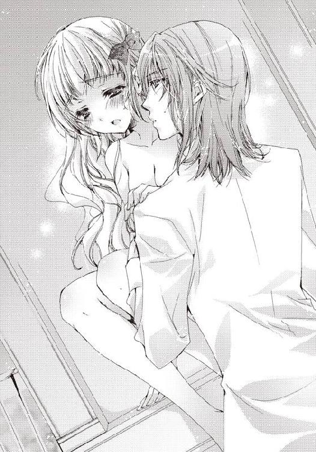
「......あっ......ああっ......んぅん......」
首筋にキスをすると、そのまま彼の唇が胸まで下りて、先端の赤い蕾を甘噛みする。しかし、思ったよりも痛くはなかった。その様子を確かめると、乳房に吸い付き始める。
「ぁうっ......ぁぁっ......すごく......変......あっ！」
力が抜けていくような不思議な感覚。それでいて、とても淫らな感じがする。
「やっぱり、美味しい......貴方の身体......」
嬉しそうな表情。エドゥアルドは胸が好きなのだろうか。自分の胸は満足させられるだろうか、特に大きくもないこの胸で。
一瞬不安になるも、すぐに心配ないとわかった。夢中で彼が一方の胸を揉み、もう一方の乳房を吸っていたからだ。
「あ、う......あ......ああっ......」
くすぐったさと、刺激と、興奮が同時にフローラに伝わる。身体を震わせながら、彼の行為を受け入れた。
「あっ......エドの......」
偶然、見えた彼の肉棒は怖いほどに脈打ち、興奮していた。それはすぐにでも自分の中に入りたいと言っているかのように、震えている。
「フローラ......もう一度......」
彼が苦しそうにしながら、告げてくる。フローラはただ首を縦に振った。
──今度こそ、彼を気持ちよくしたい！
「フローラ......足を開いて......」
「あっ......恥ずかしい......う、うぅぅ......」
「大丈夫、私は貴方の顔を見ているから、貴方も私を見てください」
エドゥアルドに言われた通り、彼の顔を見る。
「ああ、エドゥアルド！」
嬉しさで声を上げると同時に、二度目になる彼の肉棒の侵入を許した。
「あっ......ああっ......」
先ほどとは違う角度だからなのか、刺激される場所が違うので、新たな刺激と快感がフローラを襲う。
「......あ、ん......んんっ......ああっ......」
肉棒がぴったりと合わさるように自分の中に入っていく。再び息苦しさと、熱さがやってきて、頭を溶かす。
「はぁ......あぁ......あ、ああ......んぅん......」
「フローラ......気持ちいい......あぁ......」
エドゥアルドは、我慢できなくなったかのようにすぐに腰を振り始めた。
本棚に座るフローラの腰を激しく突いていく。
「ああっ！ んんっ！ あぁっ！ あああぁ......」
入っているだけで、我慢できなくなりそうな刺激と快感が襲っていたというのに、それが動いて、さらに強くなっていく。神経が壊れてしまいそうだ。
しかし、エドゥアルドは動きを止めなかった。それどこか、徐々に強くなっていく。
「......あうっ！ あ、ああっ......ぅん！ あぁ......」
時折、力強く腰をフローラにぶつける。肉棒が奥まで入ってきて、体全体で彼を感じる。
「はぁはぁ......あ、ああっ......」
今までにないぐらいに、エドゥアルドの行為は激しかった。それを証明するように、ガタガタと座っている本棚が揺れる。
──エド......こんなに激しく......わたしを求めて......。
普段とは全く違う彼の激しさに当てられ、フローラも興奮が増してくる。
「あ......ああっ......エド......ぁああっ！」
「フローラ......」
エドゥアルドがフローラの胸に再び手を伸ばす。抽送で激しく興奮する彼の指は、先ほどとは比べものにならないほどに強く、淫らに胸を揉んでいく。蕾ごと、歪に形を変えさせられ、身体が跳ねるように反応する。
「ぁっ......ああっ......」
段々とまた大きな興奮が込み上げていた。我慢しなければいけないと強く思う、それでいて、身を委ねたくなる、煽情的な本能が込み上げてくる。
──だめ......また先になんて......絶対に駄目......。
しかし、今度はエドゥアルドも同じようだった。苦しそうにして、腰が震えている。
「エド......エド......」
「フローラ......フローラ！」
名前を呼び合い、お互いを確かめ合って、興奮に上り詰めていく。
もう完全にお互いの身体は一緒になっていて、興奮も、刺激も、同じものを味わっているようだ。
──離れたくない......ずっと一緒にいたい......彼と......。
強い欲求が生まれる。座らされていたフローラは、そのまま身を投げ出すようにして。エドゥアルドの身体に抱きついた。
「あっ......あああっ......エド！」
「フローラ！」
しっかりと彼の身体に掴まり、これ以上ないぐらいに身体を合わせる。激しく掴んだ彼の背中には、フローラの爪痕が刻まれていく。
「あ......う......あ......ああ......あああ......エド！ エド！ あああっ！」
「フローラ！ 好きです！ 貴方を失いたくない！」
二人とも叫びながら、絶頂に達する。
激しく震える身体を共有し、痛いほどにお互いを抱き続けた。
興奮が収まり、衣服の乱れを直したところでフローラは重大なことに気づいた。
「あっ！ 二人で、サンドイッチで、食べ合う、ってもしかして......」
確かに、本棚とエドゥアルドにサンドイッチされ、食べられてしまった、自分が。いや、色々考えると、自分がエドゥアルドを、とも言えなくない。食べ合った？
──うう......何考えてるの、わたし！
「えっと......すみません、おそらくはそのようです」
書き足すことを提案したのと、我慢できなくなったのは彼なので、済まなそうにエドゥアルドが謝る。
「いいえ、許したのはわたしですし......で、でも、これでわかりましたね。日記に書かれたことだけではなく、書いたことも起こるって」
これ以上、さっきまでのことを話していると熱が出そうなので、フローラは話題を日記に戻した。
「だったら、日記にわたしたちが幸せになったって書けば......」
でも、そうすると、例の〝二人は別々の道を行く〟っていう方はどうなるのだろう？
「別れに立ち向かうにはおそらく、あやふやな書き方では上手く行きません。だから、失礼して──」
エドゥアルドは日記を手に取ると、自ら何かを書き込み始めた。そして、パタンと閉じてしまう。
「これで大丈夫です。あとは......忙しくなります。念のため、明日まで日記を見ては駄目ですよ」
「な、何を書いたんです？ わたしにも教えてください」
一人で納得しているエドゥアルドへフローラは問い詰めたが、返ってきたのは笑顔だけだった。
「明日までお楽しみです。きっとびっくりしますよ。そして、必ず上手く行きます」
エドゥアルドがいきなり彼女の手を取り、跪くと手の甲にキスをした。そして、驚いているフローラを置いて、急ぎ足で書庫を出て行く。
「ちょ、ちょっと、エド!?」
彼にはこういうお茶目なところや、突っ走るところがある。最初にプロポーズされた時や、鳩の手紙の時のようだ。
「もう......落ち着いてくださいってよく言うくせに、こういう時は自分が落ち着いていないんだから」
仕方なくフローラは、文句を言いながらも、彼に言われたように大人しく明日を待つことにした。
エピローグ 祝福の輪は優しい宴
フローラが目を覚ますと、何やら屋敷が騒がしかった。いつも通り、少し寝坊した頃に起きたのだけれど、メイドがやってくる気配がない。仕方なく、一人で着られるドレスを身に付け、一階へと降りた先には、驚くことに旅に出ていたはずの両親が居間に座っていた
「お、お父様！ お母様？ 旅はどうしたの？」
「おやおや、フローラは相変わらず、お寝坊さんだな」
久しぶりの再会に、父と母の胸へ順番に顔を埋める。
「まだ書庫で夜更かししているの？ そんなことでは、王子に愛想を尽かされてしまいますよ」
「大丈夫よ、エドも本は好きだから──って、どうして知ってるの!?」
兄が手紙で知らせていたのだろうか。
しかし、フローラの疑問はすぐに解決された。
「どうしてって、結婚式だからだろう。ほら、王室からドレスと宝石が届いているぞ。すぐに合わせて、直してもらえ」
二、三日留守にすると言っていた兄セレスタンが、大きな箱を持つメイドのアルマとティルダを従えて、部屋に入ってくる。
「結婚式って誰の？」
「ご結婚、おめでとうございます、フローラ様」
二人のメイドが声を揃えて、フローラに祝福の言葉を口にする。
「あ、ありがとう......えっ!? わたしが!? 結婚!?」
やっと自分の結婚式の準備で両親も、兄も帰ってきて、屋敷中が忙しないのがわかった。
でも、彼との結婚に兄の了承を得たのは昨日だ。昨日の今日で......色々ありえない。
──これは夢？ それとも、数日寝続けていたとか？ あっ！ まさか、エドが？
思いつくのは、エドの言葉と日記に書き込んだ内容。もしかして！
「エドゥアルド王子が到着されました」
執事のステファンが、さらに部屋へと入ってきて来客を告げた。
「王子がお父様とお母様へ挨拶しに来たようだな。俺が迎えに行こう」
「お、お兄様、わたしが行きます！」
「いや、お前はさっき言ったようにドレスを......おいっ！」
兄を押しのけると、フローラはエントランスへ向う。早く、一刻も早く、エドゥアルドにこの状況を説明して欲しかった。
「フローラ！ どうしたのですか？ そんなに急いで」
「エドゥアルド、いきなり結婚式って？ 何を日記に？」
彼の元へ行くと、矢継ぎ早に質問をぶつける。
「驚いてくれましたか？ 貴方が予想しているように日記に〝妖精の祝福を得た結婚式をした〟と書いて、急いで準備したのです」
「準備したって......たった一日、いや半日で？」
「はい。正確には思いついた昨日の朝からですが......どうにかなりました」
「どうにかなりましたで、あっという間に、準備を済ませられる方はいませんわ」
思わぬところで強引なエドゥアルドの行動に、苦笑いする。
「でも、大丈夫なんですか？ 〝二人が別々の道を行く〟って文言は日記にまだあるわけですし......」
エドゥアルドとの結婚式は嬉しいけれど、結局彼と幸せになれないのでは意味がない。
「それは......ちょっとややこしいのですが、説明を聞いてもらえますか？」
「は、はい......もちろんです」
「フローラ、少し外を歩きませんか？ 結婚前のお散歩に」
ふわりとエドゥアルドが微笑み、フローラは頬を真っ赤にして頷いていた。
木々がざわめく、屋敷から繋がるオズフィールドの森。
フローラはエドゥアルドに続いて足を踏み入れた。大好きな領地の森は、最近散歩を欠かしていた彼女を、代わりのない優しさで包んでくれる。
いつの間にか、芽吹いていた木がある。蕾まで、まだまだだと思っていた花も美しい花弁を開き、咲き誇っていた。
先に歩いていたエドゥアルドが、土から微かに盛り上がった木の根をまたごうとするフローラへ手を貸しながら、森の奥、小さな広場になっている一角へ誘う。
木立から零れる日の光がキラキラとして、心地良い。
フローラが目を細めたところで、彼が口を開いた。
「謎解きのヒントは、貴方が気づいた、起こっていないことも日記に書かれているという点です」
「あの、飼い犬がという箇所ですか？」
日記には書かれていたけれど、身に覚えのない内容のことだ。
「貴方に身に覚えのない文言はおそらく、それよりも未来のページに書かれたことが先に起こってしまってスキップされてしまったのだと思います。無視されたというか、飛ばされたのですね」
「スキップ......ですか？」
「はい、おそらくは......だから、あの私たちが別れるという最後の一文の下に、私は結婚式をすると付け足して書いたのです」
つまりは、結婚式をすると書いて、実際に結婚式をしてしまえば、その前に書かれたことは全部起こらなくなるということだろうか。
「でも......またその先へ勝手に悪いことを書かれてしまったら......最後のページにまだ無理に詰め込んで書いたりもできるわけで......」
頭がこんがらがりそうだけれど、必死に考える。
「はい、だから結婚式なんです。婚約ではなく、結婚」
確かに婚約は結婚式に比べたら、遥かに準備が楽だ。結婚式でなくてはならなかった理由って......。
「......貴方の名前が変わるからです。フローラ・オズフィールドから、フローラ・キャスブルクになる。私がもし王位につけば、また変わってしまいますが」
名前が変わる......今日から......。
それは思いも浮かばなかったことだった。確かにフローラの部分は変わらないけれど、家名がキャスブルクに変わる。
「あの日記に書かれたことは、サインした者にだけ降りかかる出来事。貴方の名前は、今日で変わるのですから、もう日記は無関係です」
「すごい......すごいわ、エド！」
思わず彼の首に飛び上がって抱きつく。とても、自分一人では出て来なかった発想だ。
「わたし、エドが好きでよかった......ありがとう、エド！」
「フローラ、私も嬉しいです」
フローラをエドゥアルドが力強く受け止め、抱き締める。
幸福な気分に包まれながら、ゆっくりと背中を撫で合い、目を開いたその時。
「......えっ？」
フローラの視界、地面に落ちた枯葉がふわりと浮いた。
そしてひょこひょこと、誰かが持っているみたいに左右に揺れる。
すぐ隣でも、ドングリがツンとした先を天に向けて浮く。
やがて、木の枝やらキノコやら、まるで小さな妖精が持ち運んでいるみたいに、二人を中心に円形の輪が完成する。
「もしかして......ノッカー？ ドワーフ？ ブラウニー？」
フローラはまじまじと目を見開き、不思議な光景に固まった。
彼らの姿は見えないけれど、よく見ると鉱石も浮いたものには交じっていた。書庫の前の廊下にあったカンテラも、どうやって運ばれてきたのかゆらゆらと揺れ、明かりを灯している。まるで、返事をしてくれているみたいに。
フローラにつられてエドゥアルドも地面へと目をやる。
「これは......」
地面に驚いている間に、キラキラと木々の間で何かが光る。
ウィスプが空に向かって光っているのか、不思議な色合いの乱反射が森に広がった。
それは、夕暮れの橙であったり、澄み切ったブルーであったり、水晶のような純粋な白であったり、神秘的な光で──。
次の異変は花であった。
まるで、シルフィードが風で枝を揺らしたように、林檎の白い花びらが降ってくる。
エドゥアルドとフローラの髪へ、頬へ、祝福が舞うように。
「綺麗......」
妖精の姿は目には見えなかった。ただ、その気配を感じた。
妖精の──気配。
気まぐれで存在を教えてくれたのかもしれないけど、オズフィールドに妖精はいたのだ。
小さな宴のような輪は、二人を中心にして囃す様にリズミカルに揺れる。
やがて、野の花がいくつか摘まれ、空中で編まれ、フェアリーたちが好みの花を取り合うように花冠を作っていく。
まるで、フェアリーのおしゃべりと、気まぐれな花の取り合いが聞こえるみたいな動き。
花冠がぽーんとフローラの頭に載せられ、他の色とりどりの花弁は花の輪を作りエドゥアルドの首へと飾られた。あとの花はフェアリーそれぞれの主張なのか、好きな花を一輪だけ持って、二人の周りを飛び回ってくれているようにも見える。
「お祝いしてくれているみたいですね。いかがですか？ 最初に会った夜みたいにワルツを一曲、披露しましょう。ゲストも沢山いることですし、結婚式の予行練習にもなります」
エドゥアルドがフローラを立たせて、手を取り腰へと手を回した。
輪がフローラのドレスの裾を避けるように広がり、やがて催促するように右へ左へと陽気に動く。辺りを舞うフェアリーたちの花も、早く踊れと飛び回っている。
「も、もう......悪戯はこれっきりよ。でも......素敵な悪戯をありがとう」
強がって言葉にしたあと、フローラは感極まって泣きそうになった。
誤魔化すように足を踏み出す。
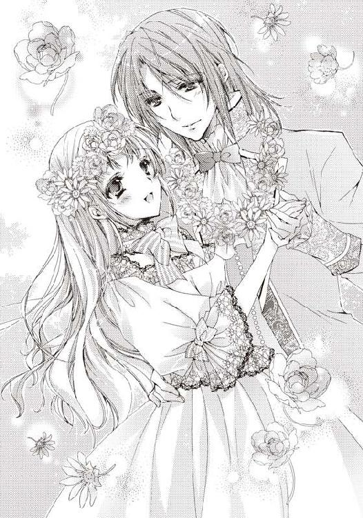
──やっと、会えた。
妖精はオズフィールドにずっといて......きっと、フローラが生まれた時から、見守ってくれていた。
おまじないをしている時も、森の散策をしている時も、傍にいてくれたのかもしれない。通り過ぎたり、呆れて見ていたり、それから？ それから？
踊りながら潤んでくるフローラの瞳へ、エドゥアルドがターンの度にキスを落とす。
その優しさに包まれながら、フローラは精一杯胸を張って、ワルツを踊った。
昼間なのに、まるで密やかに開催されるという、月夜の宴で一緒に踊っている気分になる。
きっと幸せになれる。ずっと幸せな存在に包まれてこの地で育ったのだから。
踊りの円が二人を中心に、広い輪になったり、花の形になったりとクルクル動く。
フェアリーとシルフィードが空中から悪戯に花を撒き散らす。
ステップを踏む足が軽い。
願わくは、またどこかで......一緒に踊れますように。
名残を惜しみながらフローラが最後のステップを踏んだ時、森はぱたりと静寂を取り戻した。
結婚式からしばらくして、フローラはエドゥアルドと書庫へと来ていた。
あれから、ずっと夫婦仲も良好で悪いこと一つ起きていない。どうやら、彼の謎解きは成功したようだ。
含み笑いをしながら、二人は仲良く胡桃色の表紙を手にして、書庫の一番奥にある本棚へと差し込む。手を引き、本棚へ背を向けて、しばらく目を閉じて待つ。
日記を隠しに来たのだ。また、悪戯に誰かの元へと出てくるその日まで。
次に二人は振り返らず、前の本棚を移動させて、奥の本棚を見えないようにした。
きっと今頃は、妖精が本の並び替えをしているだろう。
いや、ずっと先に入れ替えをするのかもしれない、同じ場所のままで待っているのかもしれない。気まぐれに、どこへ現れるかわからない。
二人が静かに書庫の扉を閉め、去ったあと......。
ゆっくりと本棚が動き、虹色の羽が生えた美しい妖精が身を反らせて伸びをした。
あとがき
こんにちは、柚原テイルです。
この度は『フェアリーテイル・ウェディング ～快感ダイアリー～』を沢山の本の中よりお手に取って頂き、誠にありがとうございます。
妖精好きのフローラと天然王子様。さらに過保護過ぎて溺愛の兄。
このおかしな組み合わせを、恋愛を日記がエッチにコミカルに翻弄するお話です！
楽しんで頂けましたらとても嬉しいです。
この作品を書くにあたってのイメージで強く記憶に残っているのが「秘密の花園」です。
妖精部分は関係なかったりしますが、小さい頃から何度か愛読していまして、秘密の花園に季節になると一斉に芽吹く花たち、輝く木々たちの美しい光景が、いつも少女小説を書く時に心をよぎります。領地、オズフィールドの森がそんな風に魅力的だったら......などと、妄想して筆が進みました。
この場をお借りしましてお礼を！ イラストの早瀬あきら先生、とてもイメージぴったりのキャラクターをありがとうございました。優しいタッチの色合い、フローラもエドも大好きです！ また、編集者様はじめこの本に関わってくださったすべての皆様、ありがとうございます。本がお店に並び読者様のお手元に届くこと、心より感謝しています。
そしてそして、読者様！ 本当にありがとうございます。
応援して頂いているお蔭様で、しばらくはティアラ文庫様で書かせて頂けそうです。念願の仕事部屋の加湿空気清浄機も買えました！ 乾燥しない、風邪予防大事！
あっ、お話を戻しまして......今後の展開ですが「現代モノ→ハードエロティック×３→スイートエロティック×３」の流れでしたが、次回からはハード路線へ舞い戻る予定です。ふつふつと漲ってます。
スイートで知ってくださった方は、ハードさについてきて頂けると嬉しいです！
ハードで気に入ってくださった方には、大変お待たせしました！
頑張りますので、どうぞよろしくお願いします。
２０１２／柚原テイル
フェアリーテイル・ウェディング 快感ダイアリー【イラスト付】
2012/3/1 電子版発行
東京都千代田区飯田橋３－３－１
著者 柚原テイル
挿絵 早瀬あきら
発行 プランタン出版
本データには購買者を特定できる個別のシリアル番号が刻印されています。
複製・頒布・転売等、著作権を侵害する行為は法律で禁じられており、
違反した場合は刑事罰および民事罰を招来することになります。
（c)2012 TAIL YUZUHARA,AKIRA HAYASE